Hectare 5
Bedienungsanleitung
Was das System Hectare 5 leistet
Das Aussaat-Kontrollsystem mit dem Panel Hectare 5 auf einer Seite — was es überwacht, was es antreibt und was es aufzeichnet.
Das Aussaat-Kontrollsystem mit dem Panel Hectare 5 überwacht die Aussaat sowie die Ausbringung von Trocken- und Flüssigdünger an Drillmaschinen und Einzelkornsägeräten. Besitzt die Maschine elektrische Dosierermotoren oder eine Flüssigdüngerpumpe, steuert es auch diese an, damit die eingestellte Menge tatsächlich ausgebracht wird.
Das Panel sitzt in der Kabine und wird mit den Fingern auf dem Bildschirm bedient — es hat keine Tasten. Alles Übrige sitzt am Gerät: ein Kornsensor je Sektion und alles, was die Maschine sonst noch braucht. Was Ihre Maschine trägt, wird im Profil eingetragen; die Bildschirme zeigen genau das.
Saatgut
- Bringt das Saatgut mit der vom Fahrer eingestellten Menge aus, über die elektrischen Dosierermotoren.
- Vergleicht die tatsächliche Aussaat mit dieser Menge und meldet eine Sektion, die zurückbleibt.
- Meldet ein verstopftes oder leeres Saatrohr mit seiner Nummer.
- Zählt Körner, Doppelbelegungen und Fehlstellen im Modus „Precise“ (Einzelkorn) — an Einzelkornsägeräten.
Trocken- und Flüssigdünger
- Bringt Flüssigdünger mit der Sollmenge über die elektrische Pumpe aus.
- Überwacht die Trocken- und Flüssigleitungen und meldet eine Sektion, die zurückbleibt oder verstopft, mit ihrer Nummer.
Die Maschine um das Produkt herum
- Behälterfüllstand, Drehung der Dosierwelle, Gebläsedrehzahl, Überdruck oder Unterdruck, Fahrgeschwindigkeit — jeweils gegen die eigenen Grenzwerte.
- Die Sensoren eines autonomen Gebläseantriebs mit Motor: Öldruck, Batterieladung, Zündung, Kraftstoffstand, Luftfilter.
- Arbeits- oder Transportstellung des Geräts sowie die Spuranzeiger.
Fahrgasse
- Legt die Fahrgasse mit Aktuatoren oder durch Anhalten von Dosierermotoren an.
- Schaltet den Durchgang von selbst weiter, anhand der Spuranzeigersensoren oder des Arbeitsstellungssensors.
- Überwacht weiter die abgeschalteten Sektionen, damit eine Sektion, die in die Fahrgasse sät, trotzdem gemeldet wird.
Geschwindigkeit vom eingebauten GPS-Empfänger
Das Panel hat einen eigenen GPS-Empfänger. Er kann die Fahrgeschwindigkeit statt von einem Radsensor von den Satelliten nehmen und zeigt, wie viele Satelliten er sieht. Siehe GPS.
Aufzeichnungen
- Bearbeitete Fläche, aufgeteilt in besät, nicht besät und unbekannt.
- Ausführliche Statistik der Arbeit, gespeichert für fünf Schläge.
- Berichte, die auf die Speicherkarte geschrieben werden.
Das Panel und sein Touchscreen
Woraus das Panel Hectare 5 aus Sicht des Bedieners besteht — ein Touchscreen ohne Tasten — und was sonst noch eingebaut ist.
Das Hectare 5 hat keine Tasten. Alles geschieht mit den Fingern auf dem Bildschirm: Tippen, Berühren und Halten, Wischen sowie Tippen mit zwei oder drei Fingern. Was jede Geste auf welchem Bildschirm bewirkt, steht unter Touchzonen und Gesten.
Der Bildschirm
- Farbbildschirm mit 800 × 480 Bildpunkten und berührungsempfindlicher Oberfläche. Er erkennt bis zu drei Finger gleichzeitig — daran unterscheidet das Panel ein Tippen von einem Zwei- oder Dreifingertippen.
- Die Helligkeit wird von Hand in Schritten von 10 % im Menü „Settings“ (Einstellungen) eingestellt. Eine automatische Helligkeit gibt es nicht. Siehe Bildschirmhelligkeit einstellen.
- Ton. Das Panel klickt bei jeder erkannten Berührung, wenn „Buttons sound“ (Tastenton) im Menü „Settings“ auf „Yes“ (Ja) steht. Eine Geste, die der Bildschirm vor Ihnen nicht verwendet, gibt keinen Klick. Alarme haben ihren eigenen Ton, und das Panel piept, wenn die Aussaat beginnt und endet.
Im Panel eingebaut
| Teil | Was Sie davon sehen |
|---|---|
| microSD-Kartenschacht | Ein Kartensymbol auf dem Startbildschirm, solange eine Karte bereit ist. Berichte werden auf die Karte geschrieben. Siehe Speicherkarte. |
| Uhr mit eigener Batterie | Die Uhrzeit oben rechts auf dem Startbildschirm. Eine schwache Uhrenbatterie zeigt sich als BAT. Siehe Uhr. |
| GPS-Empfänger | Ein Satellitensymbol in der rechten Spalte des Startbildschirms, mit der Zahl der Satelliten. Er kann als Geschwindigkeitsquelle dienen. Siehe GPS. |
Wie Bildschirme, Menüs und Fenster funktionieren: Menüs, Kontextmenüs, Zahlenblock und Fenster.
Einschalten
Was das Panel nach dem Einschalten tut, in welchem Zustand es startet und worauf Sie vor dem Ausschalten warten sollten.
Bekommt das Panel Strom, erscheint ein Startbild mit dem Logo. Das Startbild bleibt, bis jedes am Panel angeschlossene Gerät geantwortet hat — meist einige Sekunden, höchstens etwa fünfzehn —, dann öffnet sich der Startbildschirm.

In welchem Zustand das Panel startet
- Zugriffsebene: Fahrer. Das Panel startet nach jedem Einschalten auf der Ebene „Operator“ (Fahrer), gleichgültig, welche Ebene zuvor eingestellt war. Aus- und Einschalten ist deshalb auch der schnellste Weg zurück zur Fahrerebene — der einzigen Ebene, auf der Alarmfenster angezeigt werden. Siehe Zugriffsebenen.
- Der gewöhnliche Startbildschirm. Der zweite Startbildschirm öffnet sich nie von selbst; Sie öffnen ihn von Hand.
- Ausbringung gesperrt, wenn die Geschwindigkeit simuliert wird. Ist im Geschwindigkeitssensor die Geschwindigkeitssimulation eingeschaltet und hat die Maschine elektrische Dosierermotoren oder eine Flüssigdüngerpumpe, startet das Panel mit von Hand gesperrter Produktausbringung. Heben Sie die Sperre auf, wenn Sie bereit sind: Ausbringung von Hand sperren.
Firmware-Version und Seriennummer lassen sich jederzeit ablesen: mit zwei Fingern auf den Startbildschirm tippen, dann im Hauptmenü „About“ (Über). Das Fenster schließt mit „Close“ (Schließen).
Vor dem Ausschalten
- Einstellungen werden einige Sekunden nach Ihrer letzten Änderung von selbst gespeichert. Warten Sie nach dem Ändern einer Einstellung einige Sekunden, bevor Sie das Panel ausschalten.
- Die Statistik wird alle fünf Minuten und beim Anhalten der Maschine geschrieben. Schalten Sie das Panel erst aus, nachdem Sie angehalten haben — sonst fehlt der letzte Arbeitsabschnitt in der Statistik.
Menüs, Kontextmenüs, Zahlenblock und Fenster
Die fünf Dinge, über die am Panel alles läuft — Arbeitsbildschirme, Hauptmenü, Kontextmenü eines Geräts, Zahlenblock und die Fenster, die fragen oder melden — und wie jedes per Touch bedient wird.
Am Panel läuft alles über fünf Dinge: die Arbeitsbildschirme, das Hauptmenü, das Kontextmenü eines Geräts, den Zahlenblock und die Fenster, die etwas fragen oder melden. Alle werden mit den Fingern bedient; die Gesten stehen unter Touchzonen und Gesten. Die Arbeitsbildschirme haben ein eigenes Thema: Arbeitsbildschirme.
Das Hauptmenü
Tippen Sie mit zwei Fingern auf den Startbildschirm. Das Hauptmenü öffnet sich über dem Startbildschirm, der erste Eintrag ist gewählt. Auf dem zweiten Startbildschirm bewirkt ein Tippen auf das Einstellungssymbol dasselbe.

- Gewählter Eintrag. Schwarzer Text auf blauem Balken. Hier „Fill the disks with seeds“ (Scheiben mit Saatgut füllen) — siehe Scheiben füllen.
- „Settings“ (Einstellungen). Die Einstellungen des Systems und der Maschine. Siehe Das Menü „Settings“.
- Pfeilspitze. Der Eintrag öffnet ein weiteres Menü.
- „Service“ (Service). Einträge für Inbetriebnahme und Service. Angezeigt ab der Agronomenebene.
- „About“ (Über). Ein Fenster mit der Firmware-Version und der Seriennummer des Panels; „Close“ (Schließen) schließt es.
Ein Menü per Touch bedienen:
- Tippen Sie auf einen Eintrag, um ihn zu wählen — der blaue Balken springt dorthin.
- Tippen Sie den gewählten Eintrag erneut an, um ihn zu betreten: Er öffnet sein Menü, führt seine Aktion aus oder öffnet den Zahlenblock. Berühren und Halten eines Eintrags tut beides in einem Zug.
- Wischen Sie nach rechts oder links an beliebiger Stelle über das Menü, um den Wert des gewählten Eintrags zu erhöhen oder zu verringern. Ein kurzer Strich ändert ihn um einen Schritt; ein längerer zählt weiter, solange der Finger wandert. Das Wischen verändert immer den Eintrag auf dem blauen Balken, nicht den unter Ihrem Finger. Wortlisten laufen im Kreis: Nach dem letzten Wort kommt wieder das erste.
- Wischen Sie nach oben oder unten, um ein langes Menü zu blättern.
- Tippen Sie außerhalb des Menüs auf den abgedunkelten Bildschirm, um es zu verlassen. Ein Tippen mit drei Fingern bewirkt dasselbe.
Ein Eintrag wird an dem gelesen, was rechts von ihm steht. Die Zeichen - und + erscheinen nur um den Wert des gewählten Eintrags.
| Was Sie rechts sehen | Was es bedeutet |
|---|---|
| Eine Pfeilspitze > | Der Eintrag öffnet ein weiteres Menü. Tippen Sie ihn erneut an. |
| Ein Wert zwischen - und + | Wischen Sie nach rechts, um ihn zu erhöhen, nach links, um ihn zu verringern — direkt in der Liste. |
| Ein Wert zwischen -[** und **]+ | Ein Wischen oder ein zweites Tippen öffnet den Zahlenblock. |
| ! | Der Eintrag überschreibt gespeicherte Werte: Er nullt die Statistik, speichert oder lädt Einstellungen, stellt ein Gerät ein oder setzt Werte auf ihre Standardwerte zurück. Tippen Sie ihn erneut an. |
| Nichts | Der Eintrag führt eine Aktion aus. Tippen Sie ihn erneut an. |

Einstellungen werden einige Sekunden nach der letzten Änderung von selbst gespeichert; Sie müssen nichts sichern.
Das Kontextmenü eines Geräts
Jeder Sensor, jeder Motor und jede Anzeige auf dem Startbildschirm hat ein eigenes Menü. Berühren und halten Sie das Gerät — sein Symbol oder seine Säule im Diagramm — länger als eine halbe Sekunde, dann öffnet sich sein Kontextmenü. Ein kurzes Tippen bewirkt nichts. Auf dem Motorenbildschirm und auf dem zweiten Startbildschirm funktioniert dasselbe bei einer Motorkachel.

Der erste Eintrag, „Information“ (Information), öffnet den Statusbildschirm des Geräts; dort zeigt ein Wischen nach rechts oder links das nächste oder das vorige Gerät, ein Wischen nach oben oder ein Dreifingertippen führt zurück. Der zweite Eintrag schaltet die Überwachung: „Disable control“ (Überwachung ausschalten) oder „Enable control“ (Überwachung einschalten) — siehe Sensor in die Überwachung nehmen oder herausnehmen. Darunter stehen die Parameter; welche Sie sehen, hängt von der Zugriffsebene ab (Zugriffsebenen). Alle Parameter: Sensoreinstellungen.
Zahlen eingeben
Steht ein Wert in eckigen Klammern, öffnet seine Änderung den Zahlenblock.

- Name des Parameters. Hier „Width, cm“ (Breite, cm).
- Wert. Was Sie bisher eingegeben haben.
- Rücktaste. Löscht die letzte Ziffer. Berühren und halten Sie sie, um den ganzen Wert zu löschen.
- Ziffern. 1 bis 9.
- Punkttaste. Fügt den Dezimalpunkt ein — nur bei einem Wert mit Nachkommastellen.
- Null.
- „OK“. Übernimmt den Wert.
Ein Wert außerhalb des zulässigen Bereichs wird nicht abgelehnt: Das Panel setzt stattdessen den nächstgelegenen Grenzwert.
Fenster, die fragen, und Fenster, die melden
Ein Fenster ist ein Kasten in der Bildschirmmitte mit einem farbigen Streifen am oberen Rand — ohne ein Wort darin — und der Meldung unter dem Streifen.
| Fenster | Was es ist | Wie es sich schließt |
|---|---|---|
| Blauer Streifen, Tasten darunter | Das Panel fragt. Nichts geschieht, bis Sie antworten. | Berühren Sie „Yes“ (Ja, grün) oder „No“ (Nein, rot). Eine Berührung außerhalb des Kastens bricht ab: Nichts wird geändert. |
| Blauer Streifen, ohne Tasten | Das Panel meldet, was geschehen ist. | Manche schließen sich nach etwa zwei Sekunden von selbst, andere mit einer Berührung im Kasten. |
| Roter Streifen, ohne Tasten | Das Panel meldet einen Fehler, zum Beispiel „Invalid PIN“ (Ungültige PIN). | Wie oben. |
| Roter Streifen und ein roter Balken mit „FAILURE!“ | Ein Alarm. | Siehe unten. |
Ein Fragefenster ignoriert Berührungen in der ersten halben Sekunde, damit die Berührung, die es geöffnet hat, es nicht gleich beantwortet.

Alarmfenster
Ein Alarmfenster sagt, was geschehen ist, an welcher Art von Gerät und an welchen Geräten — deren Nummern werden aufgelistet, wenn mehrere gleiche Sensoren denselben Fehler melden, zum Beispiel #1-4,7. Solange es offen ist, gibt das Panel den Alarmton aus.

Berühren Sie im Fenster „Close“ (Schließen). Dieser Alarm schließt sich und der Ton endet; der nächste Alarm in der Warteschlange erscheint. Nichts sonst schließt ein Alarmfenster — Berührungen an anderer Stelle werden ignoriert.
Schnellstart — Vorbereitung und Losfahren
Die Reihenfolge der Vorbereitung der Maschine, was vor dem Feld zu prüfen ist, was beim Losfahren geschieht und worauf Sie während der Arbeit achten.
Ihre Maschine hat womöglich nicht jeden Schritt — überspringen Sie, was sie nicht hat. Das Hauptmenü öffnet sich mit einem Zweifingertippen auf den Startbildschirm; das Kontextmenü eines Geräts mit Berühren und Halten des Geräts (Bedienung im Überblick).
Vor dem Feld
Geschwindigkeitssensor kalibrieren. Fläche, Mengen und Abweichungen werden alle aus der Geschwindigkeit berechnet; eine falsche Geschwindigkeit verfälscht jede andere Zahl. Berühren und halten Sie im Stand das Geschwindigkeitsfeld und wählen Sie „Speed calibration“ (Geschwindigkeitskalibrierung) — auf der Fahrerebene. Derselbe Eintrag steht unter „Settings“ (Einstellungen) → „Seeding machine parameters“ (Sämaschinenparameter), auf der Agronomenebene. Siehe Geschwindigkeitssensor.
Dosierwalzen kalibrieren — an Maschinen, die Produkte nach Masse ausbringen. Im Kontextmenü jedes Dosierers („Dispenser calibration(weight)“, Dosiererkalibrierung (Masse), angezeigt, wenn seine Massenüberwachung eingeschaltet ist) oder jedes Dosierermotors, auf der Fahrerebene, im Stand. Siehe Sensoreinstellungen.
Fahrgassenrhythmus prüfen, wenn die Maschine Fahrgassen anlegt. Siehe Fahrgassenrhythmus einstellen.
Sensorparameter prüfen — die Liste steht unten.
Jede Sektion prüfen: Steht sie unter Überwachung, bringt sie Produkt aus? Siehe Die vier Zustände einer Sektion.
Den Schlag wählen auf dem Statistikbildschirm: Zweifingertippen, „Select field“ (Schlag wählen). Bei einem neuen Schlag löschen Sie zuerst dessen Statistik mit „Zero statistics“ (Statistik nullen). Siehe Statistikbildschirm.
Die Mengen einstellen — Saatgut, Trockendünger, Flüssigdünger. Siehe Sollmenge ändern.
Zugriffsebene prüfen. Sie muss „Operator“ (Fahrer) sein: „Settings“ → „User“ (Benutzer).
Mehrere dieser Einstellungen erfordern die Agronomenebene — darunter „Seeding machine parameters“. Heben Sie die Ebene an (Agronomenebene freischalten), erledigen Sie, was sie braucht, fallen Sie auf die Fahrerebene zurück, erledigen Sie den Rest.
Sensorparameter, die zu prüfen sind
- Geschwindigkeitssensor — „Min speed, km/h“ (Mindestgeschwindigkeit), „Max speed, km/h“ (Höchstgeschwindigkeit).
- Dosierersensor — „Period, s“ (Periode), je Sensor.
- Gebläsesensor — „Minimum, rpm“, „Maximum, rpm“, je Sensor.
- Drucksensor — „Minimum, Pa“, „Maximum, Pa“, je Sensor.
- Flüssigdüngerpumpe — „Pulses per liter“ (Impulse je Liter), „Max pressure, Bar“ (Höchstdruck).
- Korn- und Trockendüngersensoren — „Fraction“ (Anteil), „Correction“ (Korrektur), „Recalculation,m“ oder „Recalculation,sec“ (Neuberechnung); im Modus „Precise“ oder „Hybrid“ außerdem „Rate error,%“ (Mengenfehler).
- Elektromotoren, Modus „Precise“ — „Holes in disk“ (Löcher in der Scheibe).
- Elektromotoren, Dosierung nach Masse — je Motor „Weight, gr“ (Masse) und „Rotations“ (Umdrehungen). Die Massenkalibrierung füllt beide aus.
Einzelheiten: Sensoreinstellungen.
Losfahren
Bringen Sie das Gerät in die Arbeitsstellung.
Einzelkornsägeräte mit Dosierermotoren: Scheiben füllen — Hauptmenü, „Fill the disks with seeds“. Ohne das sind die ersten Meter jeder Reihe leer. Siehe Scheiben füllen.
Drillmaschinen: Nichts zu starten. Die Dosiermotoren beginnen von selbst zu drehen, sobald die Überwachung der Produktausbringung startet — in dem Moment, in dem Sie losfahren.
Fahren Sie.
Wann die Überwachung startet. Die Handsperre muss ausgeschaltet sein (Ausbringung von Hand sperren). Ist ein Arbeitsstellungssensor angebaut und steht er unter Überwachung, beginnt die Überwachung, sobald Sie mit abgesenktem Gerät fahren; ohne einen solchen Sensor, sobald Sie fahren. Alarme beginnen nach der Verzögerung, die unter „Settings“ → „Alarm delay“ (Alarmverzögerung) eingestellt ist, 2 bis 20 Sekunden.
| Ton | Was er bedeutet |
|---|---|
| Ein kurzer Piepton | Das Panel sieht die Maschine säen. Ab jetzt werden die Sektionen überwacht. |
| Drei kurze Pieptöne | Die Aussaat hat aufgehört — am Vorgewende, oder die Säulen sind unter die Überwachungslinie gesunken. |
An Drillmaschinen im Modus „Flow“ oder „Hybrid“ lassen Sie das Panel die Alarmschwelle selbst finden: Alarmschwelle automatisch einstellen.
Während der Arbeit
Achten Sie auf vier Dinge: die Geschwindigkeit gegenüber dem Traktor, Gebläse und Druck innerhalb ihres Bereichs, die tatsächliche Menge gegenüber der Sollmenge und darauf, dass kein Sensor alarmiert. Der Tabellenbildschirm zeigt, wie jede Sektion gerade arbeitet; der Statistikbildschirm, wie der ganze Schlag verlaufen ist.
Fällt der Geschwindigkeitssensor aus, siehe Ohne Geschwindigkeitssensor arbeiten.
System nach der Installation prüfen
Eine Prüfung Schritt für Schritt, einmal nach der Montage — jedes Gerät antwortet, jeder Kornsensor sitzt in seiner eigenen Reihe, Zählung, Arbeitsstellung, Geschwindigkeit und die übrigen Sensoren arbeiten — und was Sie festhalten.
Führen Sie diese Prüfung einmal durch, nachdem das System montiert ist und bevor Sie auf den ersten Schlag fahren. Jeder Schritt sagt, was zu tun ist, was der Bildschirm zeigen muss und wohin Sie gehen, wenn er es nicht zeigt. Ihre Maschine hat womöglich nicht jedes Gerät — überspringen Sie die Schritte für das, was sie nicht hat.
Beginnen Sie auf der Ebene „Operator“ (Fahrer): Auf ihr werden Alarmfenster angezeigt (Zugriffsebenen). Das Panel startet nach jedem Einschalten auf dieser Ebene.
Prüfen Sie, ob jedes Gerät antwortet. Schalten Sie das Panel ein und warten Sie auf den Startbildschirm (Einschalten).
- Das Profil muss zur Maschine passen: Die Zahl der Kornsensoren entspricht der Zahl der Reihen, und die übrigen Geräte sind die, die die Maschine hat (Das Profil). Die Maschineneinstellungen stehen unter Sämaschinen-Parameter; die zu prüfenden Sensorparameter sind im Schnellstart aufgeführt.
- Kein Alarmfenster „Connection lost“ (Verbindung verloren), keine rote Anzeige mit einem ×, keine weiße Anzeige mit !, keine rote Anzeige mit ? (Anzeigen).
- Öffnen Sie den Statusbildschirm eines Geräts: berühren und halten, dann „Information“ (Information). Wischen Sie nach links oder rechts durch jedes Gerät der Liste. „Link:“ (Verbindung:) muss bei jedem „Normal“ (Normal) lauten (Der Sensor-Statusbildschirm).
- Ein Korn- oder Düngersensor muss Status: Working zeigen.
Wenn nicht: Verbindung verloren, falsches Gerät · Sensor verstopft oder defekt · ein Gerät außerhalb der Überwachung: Sensor in die Überwachung nehmen oder herausnehmen.
Prüfen Sie, ob jeder Kornsensor in seiner eigenen Reihe sitzt. Die Maschine steht. Öffnen Sie den Tabellenbildschirm mit einem langen Wischen nach links auf dem Startbildschirm. Tippen Sie mit zwei Fingern darauf und berühren Sie „Yes“ (Ja) bei der Frage „Zero readings?“ (Messwerte nullen?) (Messwerte nullen). Lassen Sie dann einige Körner von Hand durch das Saatrohr von Reihe 1 fallen, eines nach dem anderen. Statt Körnern können Sie auch einen beliebigen kleinen Gegenstand, zum Beispiel einen langen Kabelbinder, mehrmals durch das Saatrohr führen – jeder Durchgang wird gezählt. Tun Sie dasselbe bei Reihe 2, Reihe 3 und so weiter bis zur letzten Reihe.
- Nur die Zeile der Reihe, in die Sie die Körner fallen lassen, reagiert. Im Modus „Precise“ schalten Sie mit einem langen Zweifingerwischen auf die Tabelle der Kornzähler um — der Zählerstand dieser Reihe wächst (Der Tabellenbildschirm). Lesen Sie den Zählerstand auf dieser Tabelle ab, die die Anzahl der Körner zeigt, nicht auf der Ansicht mit Körnern je Meter: Diese zeigt nur Werte, solange sich die Maschine bewegt. In den anderen Modi beobachten Sie sds/s dieser Reihe.
- Die Zeile einer anderen Reihe reagiert: Dieser Sensor ist in der falschen Reihenfolge angeschlossen. Korrigieren Sie die Reihenfolge der Anschlüsse und wiederholen Sie den Test.
- Keine Zeile reagiert: Siehe Schritt 1 für diesen Sensor.
Wenn nicht: Verbindung verloren, falsches Gerät · Sensor verstopft oder defekt.
Prüfen Sie die Zählung. Nullen Sie die Messwerte erneut, wie in Schritt 2. Lassen Sie eine bekannte Anzahl Körner, zum Beispiel 20, einzeln durch das Saatrohr einer Reihe fallen. Lesen Sie den Zählerstand dieser Reihe in der Tabelle der Kornzähler ab (Modus „Precise“), der Tabelle, die die Anzahl der Körner zeigt. Bei einer Einzelkornsämaschine stimmt er bis auf ein Korn mit der Zahl überein, die Sie fallen ließen, sofern die „Fraction“ (Fraktion) der Kornsensoren auf die Größe des Korns eingestellt ist. Notieren Sie beide Zahlen. Wiederholen Sie dies bei einer weiteren Reihe. Ist der Wert deutlich höher – bis zum Doppelten der Zahl –, ist die Fraktion für dieses Korn zu klein eingestellt: Ein großes Korn, zum Beispiel Mais, wird dann als zwei gezählt. Stellen Sie die Fraktion nach der Tabelle in Kornsensoren und Trockendüngersensoren ein.
Wenn nicht: Notieren Sie beide Werte und lesen Sie Bevor Sie den Support kontaktieren.
Prüfen Sie den Arbeitsstellungssensor. Senken Sie die Maschine in die Arbeitsstellung ab, heben Sie sie dann in die Transportstellung an.
- Die Anzeige der Gerätestellung ist grün, wenn die Maschine abgesenkt ist, gelb und blinkend, wenn sie angehoben ist (Anzeigen).
- Auf dem Statusbildschirm des Sensors folgen „Position: Working“ (Position: Arbeit) und „Position: Transporting“ (Position: Transport) der Maschine.
- Sind beide vertauscht, prüfen Sie die Einstellung „Transporting position signal“ (Signal Transportstellung) (Behälter-, Arbeitsstellungs- und Motorsensoren).
Prüfen Sie die Geschwindigkeit. Kalibrieren Sie zuerst den Geschwindigkeitssensor, falls noch nicht geschehen (Geschwindigkeitssensor kalibrieren). Fahren Sie dann.
- Das Geschwindigkeitsfeld zeigt eine weiße Zahl. Sie stimmt mit der Geschwindigkeit des Traktors überein.
- Es zeigt nicht XX.X, !!.! oder ????.
- Auf dem Statusbildschirm des Geschwindigkeitssensors ändert sich die Frequenz F= während der Fahrt.
Wenn nicht: Alarme des Geschwindigkeitssensors · Geschwindigkeitssensor · Ohne Geschwindigkeitssensor arbeiten.
Prüfen Sie die übrigen Sensoren der Maschine. Je eine kurze Prüfung:
- Behälter. Das Behältersymbol ist voll und grün, wenn Produkt im Behälter ist. Behälter leer.
- Gebläse. Starten Sie das Gebläse. Das Gebläsesymbol ist grün und zeigt die Drehzahl in rpm. Gebläse oder Dosierwelle: Drehzahlalarme.
- Luftdruck. Das Drucksymbol ist grün und zeigt den Druck in kPa, solange das Gebläse läuft. Luftdruck.
- Dosierwelle. Solange sich die Welle dreht, dreht sich das Symbol der Dosiereinheit. Gebläse oder Dosierwelle: Drehzahlalarme.
- Spuranzeiger. Senken und heben Sie die Spuranzeiger. Das Spuranzeigersymbol zeigt den Arm oder die Arme unten oder oben (Anzeigen).
- Dosierermotoren und Fahrgassen-Aktuatoren. Öffnen Sie den Motorenbildschirm. Jede Kachel zeigt ihren Wert; keine hat ein rotes × (Der Motorenbildschirm).
- Motorsensoren. Die Motoranzeigen, die die Maschine hat, sind grün; der Zündschlüssel ist bei eingeschalteter Zündung grün (Anzeigen).
Halten Sie das Ergebnis fest.
- Mit zwei Fingern auf den Startbildschirm tippen, dann „About“ (Über). Notieren Sie die Firmware-Version und die Seriennummer. Schließen Sie das Fenster mit „Close“ (Schließen).
- Notieren Sie das Datum und die Maschine.
- Fotografieren Sie die Statusbildschirme der Sensoren — mindestens die Bildschirme, die ein Gerät mit seiner Verbindung und seinem Zustand zeigen.
Bewahren Sie die Notizen und die Fotos auf. Wenn Sie später Hilfe brauchen, fragt der Support zuerst danach (Bevor Sie den Support kontaktieren).
Wenn ein Schritt fehlschlägt
| Schritt | Weiter mit |
|---|---|
| 1. Ein Gerät antwortet nicht | Verbindung verloren, falsches Gerät |
| 1. Ein Kornsensor meldet eine Störung | Sensor verstopft oder defekt |
| 1. Ein Gerät ist außerhalb der Überwachung | Sensor in die Überwachung nehmen oder herausnehmen |
| 1. Das Profil passt nicht zur Maschine | Das Profil |
| 2, 3. Eine Reihe reagiert nicht, reagiert in einer anderen Reihe, oder die Zählung stimmt nicht | Verbindung verloren, falsches Gerät, dann Bevor Sie den Support kontaktieren |
| 4. Die Stellung folgt der Maschine nicht | Behälter-, Arbeitsstellungs- und Motorsensoren |
| 5. Keine oder falsche Geschwindigkeit | Alarme des Geschwindigkeitssensors, Geschwindigkeitssensor kalibrieren, Ohne Geschwindigkeitssensor arbeiten |
| 6. Behälter | Behälter leer |
| 6. Gebläse, Dosierwelle | Gebläse oder Dosierwelle: Drehzahlalarme |
| 6. Luftdruck | Luftdruck |
| Jede andere Störung | So arbeiten Alarme |
Zu den Bildern in dieser Anleitung
Welche Bilder dieser Anleitung noch folgen, warum der Text auch ohne sie auskommt und was auf einem Prüfstandsbild zum Prüfstand und nicht zu Ihrer Maschine gehört.
Die Bildschirme in dieser Anleitung werden an einem Panel Hectare 5 auf einem Prüfstand aufgenommen. Solange ein Bild fehlt, steht an seiner Stelle der Hinweis Picture to follow. Der Text darum beschreibt den Bildschirm in Worten — obere Zeile, rechte Spalte, Mengenfeld —, damit sich jedes Thema auch ohne sein Bild nutzen lässt.
Das Foto des Panels ist ein Produktbild. Die Texte auf seinem Bildschirm sind nicht englisch; der Aufbau des Startbildschirms ist derselbe.
Die Wörter auf Ihrem Bildschirm
In dieser Firmware-Version sind die Menüs des Panels englisch. Die Anleitung zitiert deshalb jede Bezeichnung auf Englisch, genau wie das Panel sie zeigt, und nennt beim ersten Auftreten in einem Thema die deutsche Bedeutung in Klammern. Das gilt auch für Schreibweisen, die ungewöhnlich aussehen, etwa „Factical“ und „Setuped“ auf dem Statistikbildschirm oder ks/Ha für tausend Körner je Hektar. Suchen Sie die Wörter so, wie sie hier gedruckt sind.
Was zum Prüfstand gehört
Ein Prüfstandspanel zeigt einiges, was Ihr Panel nicht zeigt. Lesen Sie die Bilder damit, sobald sie vorliegen.
| Was Sie auf einem Bild sehen | Warum es da ist | Was Ihr Panel stattdessen zeigt |
|---|---|---|
| Eine blaue Uhrzeit im Uhrfeld, dann TRIAL, dann leer | Das Prüfstandspanel läuft mit einer Testlizenz; die blaue Zahl ist die verbleibende Zeit. | Die Uhrzeit. Siehe Uhr. |
| IMITAT in Gelb im Uhrfeld | Der Prüfstand läuft in einem Simulationsmodus des Servicemenüs. | Die Uhrzeit. |
| Eine gelbe Geschwindigkeitszahl oder IMITATION im Geschwindigkeitsfeld | Die Geschwindigkeit wird simuliert, nicht gemessen — am Prüfstand dreht sich kein Rad. | Die gemessene Geschwindigkeit in Weiß. Siehe Geschwindigkeit. |
| Säulen, die sich bewegen, obwohl die Maschine steht | Der Kornfluss wird am Prüfstand simuliert. | Säulen, die sich nur bewegen, solange gesät wird. |
| Rote Behälter, eine rote Ölkanne oder Batterie | Der Prüfstand hat kein Produkt und keinen Motor. | Grüne Symbole, solange alles in Ordnung ist. |
| Ein rotes Aktuatorsymbol in der rechten Spalte | Im Prüfstandsprofil genannte Aktuatoren sind nicht angebaut, deshalb meldet das Panel sie als defekt. | Nichts — das Symbol wird nicht angezeigt, solange jeder Aktuator in Ordnung ist. Siehe Aktuatorstörung. |
| Ein rotes × anstelle eines Symbols | Ein im Prüfstandsprofil genanntes Gerät ist nicht angeschlossen. | Das Symbol des Geräts. |
| Nullen auf dem Statistikbildschirm | Die Prüfstandsstatistik war leer, als das Bild aufgenommen wurde. | Ihre Zahlen. |
Der Startbildschirm
Was jeder Teil des Startbildschirms ist — Geschwindigkeit, Anzeigen, Fläche, Mengen, Sektionsdiagramme — an einer stehenden Drillmaschine und an einem arbeitenden Einzelkornsägerät, und was Sie von hier aus per Touch tun können.
Der Startbildschirm ist der wichtigste Arbeitsbildschirm. Er zeigt die Diagramme der Sektionssensoren, die Zustandsanzeigen der Geräte und die Kennzahlen der Arbeit. Was er zeigt, folgt dem Profil: Jede dort eingetragene Gruppe von Sensoren und Geräten bekommt ihre Symbole, ihre Säulen, ihr Mengenfeld.
Der Bildschirm hat vier Zonen. Die Fahrgeschwindigkeit steht groß oben links. Die Anzeigenreihen laufen oben entlang, mit der Uhr oben rechts. Eine Spalte von Anzeigen läuft am rechten Rand nach unten. Der untere Teil enthält die Diagramme — eine Säule je Sektion —, jedes mit seinem Mengenfeld rechts.
Eine Drillmaschine mit Saatgut und Dünger

- Fahrgeschwindigkeit. In km/h. Meldungen zur Geschwindigkeit ersetzen die Zahl. Geschwindigkeit
- Behälter. Ein Symbol je Behältersensor, nummeriert. Rot — der Füllstand liegt unter dem Sensor. Behälter
- Dosiereinheiten. Drehung der Dosierwellen; das Symbol dreht sich, solange sich die Welle dreht. Dosiereinheit
- Gebläse. Das Gebläsesymbol und seine Drehzahl in U/min. Gebläse
- Motorsensoren. Öldruck, Batterieladung und Zündung des Gebläseantriebsmotors. Motorsensoren
- Uhr. Die Uhrzeit; das Feld trägt auch Meldungen. Uhr
- Speicherkarte. Angezeigt, solange eine microSD-Karte bereit ist. Speicherkarte
- Fläche. Bearbeitete Hektar auf dem aktiven Schlag. Fläche
- Produktmenge nach Masse. Die Menge eines Produkts in kg/ha. Produktmenge nach Masse
- Saatgutdiagramm. Eine Säule je Kornsensor; die weiße Linie ist die Überwachungslinie. Das Sektionsdiagramm
- Mengenfeld. Oben die gemessene Menge, darunter die Sollmenge, hier in Körnern je Sekunde. Sollmenge ändern
- Düngerdiagramm. Die Düngersektionen, mit eigenem Mengenfeld.
- Rechte Spalte. Gerätestellung, Handsperre, Satelliten, Aktuatorstörung — was immer die Maschine hat. Anzeigen
- Sektionsnummern. Die Nummer jeder Sektion, unter ihrer Säule.
Ein Einzelkornsägerät bei der Arbeit

- Fahrgeschwindigkeit. Geschwindigkeit
- Behälter. Grün — Produkt oberhalb des Sensors.
- Druck. Unterdruck oder Überdruck in kPa. Druck
- Fläche. Bearbeitete Hektar auf dem aktiven Schlag.
- Aussaatstärke. Die tatsächliche Aussaatmenge in tausend Körnern je Hektar. Aussaatstärke
- Sektionssäule. Grün — die Reihe sät innerhalb ihrer Toleranz. Säulenfarben
- Fehlstellenbalken. Gelbe Schraffur links an einer Säule: der Anteil der Fehlstellen in dieser Reihe.
- Doppelbelegungsbalken. Blaue Schraffur rechts an einer Säule: der Anteil der Doppelbelegungen.
- Mengenlinie. Die Sollmenge über alle Reihen.
- Toleranzmarken. Obere und untere Grenze der zulässigen Abweichung, in jeder Säule.
- Mengenfeld. Oben die gemessenen Körner je Meter, darunter die Sollmenge.
- Gerätestellung. Grün — abgesenkt, in Arbeit. Gerätestellung
Was jede Anzeige in all ihren Zuständen bedeutet, steht unter Anzeigen; das Diagramm selbst — Linie, Marken, Farben — unter Das Sektionsdiagramm.
Was Sie vom Startbildschirm aus tun können
| Aufgabe | So geht es |
|---|---|
| Das Hauptmenü öffnen | Mit zwei Fingern tippen |
| Sollmenge oder Alarmschwelle ändern | Das Diagramm berühren und halten, dann nach oben oder unten wischen — Sollmenge ändern |
| Den Sollwert eines Produkts nach Masse einstellen | Die kg/ha-Anzeige berühren und halten; der Zahlenblock öffnet sich |
| Das Panel die Alarmschwelle einstellen lassen | Doppeltippen, während ausgebracht wird — Alarmschwelle einstellen |
| Die Produktausbringung sperren oder freigeben | Eine leere Stelle der rechten Spalte berühren und halten — Ausbringung von Hand sperren |
| Die Einstellungen eines Geräts öffnen | Sein Symbol oder seine Säule berühren und halten |
| Zum nächsten Arbeitsbildschirm gehen | Langes Wischen nach links — Arbeitsbildschirme |
| Den zweiten Startbildschirm öffnen | Langes Wischen nach rechts — Zweiter Startbildschirm |
Ein langes Wischen läuft über mehr als ein Drittel des Bildschirms. Alle Gesten auf allen Bildschirmen: Touchzonen und Gesten.
Das Sektionsdiagramm — Säulen, Linie und Farben
Wie Sie die Säulen des Startbildschirms im Modus „Precise“ und im Modus „Flow“ lesen und was die Überwachungslinie bedeutet.
Jede Säule des Diagramms ist eine Sektion — ein Korn- oder Düngersensor. Ihre Höhe ist der Durchfluss durch diese Sektion. Wie der Rest gezeichnet wird, hängt vom Überwachungsmodus der Aussaat ab: „Precise“ (Einzelkorn; Körner je Meter, mit Fehlstellen und Doppelbelegungen) oder „Flow“ (Durchfluss; Körner je Sekunde gegen eine Alarmschwelle). Das Mengenfeld steht am rechten Ende jedes Diagramms: oben der gemessene Wert, darunter die Sollmenge oder die Alarmschwelle, darunter die Einheit.
Modus „Precise“
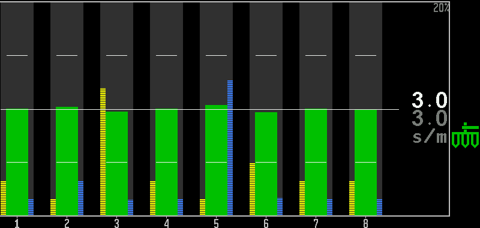
- Sollmenge. Grau, in Körnern je Meter (s/m). Diesen Wert ändern Sie per Touch.
- Gemessene Menge. Weiß — der Durchschnitt der Reihen im Augenblick.
- Maßstab der Balken. Der Anteil an Fehlstellen oder Doppelbelegungen, bei dem ein Balken bis oben reicht — „Scale S&D,%“ in den Einstellungen.
- Mengenlinie. Die Sollmenge, über alle Reihen gezeichnet.
- Obere Marke. Die obere Toleranzgrenze, in jeder Säule.
- Untere Marke. Die untere Toleranzgrenze.
- Säule. Grün — die Reihe sät innerhalb der Toleranz.
- Fehlstellenbalken. Gelbe Schraffur am linken Rand einer Säule. Je höher, desto mehr Fehlstellen in dieser Reihe.
- Doppelbelegungsbalken. Blaue Schraffur am rechten Rand einer Säule. Je höher, desto mehr Doppelbelegungen.
- Sektionsnummer.
Modus „Flow“

- Alarmschwelle. Grau, in Körnern je Sekunde (s/s). Der Wert, unter dem eine Sektion als Durchfluss verlierend gilt.
- Gemessene Menge. Weiß — der Durchschnitt der Reihen im Augenblick.
- Überwachungslinie. Die Alarmschwelle, über alle Reihen gezeichnet.
- Säule über der Linie. Grün — die Reihe arbeitet.
- Leerer Teil einer Säule. Dunkelgrau über dem Grün: Je höher das Grün reicht, desto mehr Durchfluss.
- Sektionsnummern. Die Düngersektionen zählen nach den Saatgutsektionen weiter.
- Düngerdiagramm. Dasselbe für die Düngersensoren.
- Mengenfeld Dünger. Oben der gemessene Wert, darunter die Alarmschwelle, in Dünger je Sekunde (f/s).
Um die Sollmenge oder die Alarmschwelle zu ändern, berühren und halten Sie das Diagramm, bis sein Sollwert aufleuchtet, und wischen Sie dann nach oben oder unten — ein Schritt je Wischen. Ein Tippen außerhalb der Diagramme beendet das. Siehe Sollmenge ändern.
Die Linie: Reihen darunter stehen nicht unter Überwachung
Die Linie ist die Grenze einer Teilverstopfung, keine Dekoration. Eine Säule über der Linie ist eine Reihe, die arbeitet; eine Säule, die darunter sinkt, ist eine Reihe, die Durchfluss verliert — lange bevor sie ganz verstopft.

- „NOT UNDER CONTROL“ (Nicht unter Überwachung). Die Reihen dieses Diagramms werden nicht überwacht.
- Säulen unter der Linie. Jede Reihe liefert weniger als der Wert.
- Überwachungslinie. Über den tatsächlichen Durchfluss hinaufgezogen.
- Alarmschwelle. Höher, als die Maschine sät.
- Gemessene Menge. Niedriger als die Alarmschwelle.
„NOT UNDER CONTROL“ öffnet kein Alarmfenster; auf der Fahrerebene gibt das Panel stattdessen den Alarmton aus. Reihen unter der Linie stehen mit Absicht nicht unter Überwachung: Das Panel weigert sich, einen Wert zu bewachen, der über dem liegt, was die Maschine tatsächlich liefert. Senken Sie den Wert, bis die Säulen über der Linie stehen, oder lassen Sie das Panel ihn mit einem Doppeltippen einstellen: Alarmschwelle automatisch einstellen.
Ob die Maschine überhaupt sät, entscheidet das Panel nach dem Anteil der säenden Reihen — die Sensoreinstellung „Percent of sowing,%“ (Anteil säender Reihen, %), standardmäßig 20 %. Am Vorgewende fallen die Reihen aus der Überwachung; im nächsten Durchgang kommen sie zurück, mit oder ohne Arbeitsstellungssensor. Das Panel sagt es mit Ton: drei kurze Pieptöne, wenn die Aussaat endet, ein kurzer Piepton, wenn sie wieder beginnt.
Was jede Farbe und jedes Symbol einer Säule bedeutet und die vier Zustände einer Sektion: Säulenfarben und Sektionszustände.
Säulenfarben und die vier Zustände einer Sektion
Was jede Farbe und jedes Symbol einer Säule im Sektionsdiagramm bedeutet und die vier Kombinationen von Überwachung und Produktausbringung, in denen eine Sektion sein kann.
Wie das Diagramm aufgebaut ist — Mengenlinie, Marken, Überwachungslinie —, steht unter Das Sektionsdiagramm. Diese Seite listet auf, wie eine einzelne Säule aussehen kann.
Säulenfarben
| Was Sie sehen | Was es bedeutet |
|---|---|
| Grüne Säule | Die Reihe sät normal. |
| Blaue Säule | Die Reihe sät mehr, als die Sollmenge zulässt („Precise“ und „Hybrid“). |
| Gelbe Säule | Die Reihe sät weniger, als die Sollmenge zulässt („Precise“ und „Hybrid“). |
| Hintergrund blinkt dunkelrot, keine Säule | Die Reihe sät fast nichts, während die Maschine sät — ein verstopftes oder leeres Saatrohr. |
| Weiße Säule mit ! | Die Überwachung dieser Sektion ist ausgeschaltet. Nichts an ihr wird überwacht. |
| Rotes × | Der Sensor antwortet nicht. |
| Rotes ?, Säule blinkt rot | Ein Gerät falscher Art antwortet anstelle dieses Sensors. |
| Gelbes ? | Der Sensor hat gerade seine Einstellungen erhalten, oder er zählt Körner, aber das Panel hat keine Geschwindigkeit, um sie zu beurteilen. |
| Graue Schraffur über der ganzen Säule | Die Sektion ist für die Fahrgasse abgeschaltet, oder ihre Produktausbringung ist ausgeschaltet. |
| Grüne Schraffur am Fuß einer grauen Säule | Ein kleiner Durchfluss in einer abgeschalteten Sektion, noch innerhalb dessen, was toleriert wird. |
| Rote Schraffur in einer grauen Säule | Die abgeschaltete Sektion sät in die Fahrgasse. |

Die vier Zustände einer Sektion
Jede Sektion hat zwei unabhängige Schalter: ob das Panel sie überwacht (Überwachung) und ob die Maschine durch sie ausbringt (Produktausbringung).
| Überwachung | Ausbringung | Was es bedeutet | Was die Säule zeigt |
|---|---|---|---|
| an | an | Normale Arbeit. | Die normale Säule. |
| an | aus | Die Reihe sät absichtlich nicht — eine Fahrgassenreihe — und das Panel weiß es. | Graue Schraffur. |
| aus | an | Die Reihe sät, aber niemand prüft sie. | Weiß mit ! |
| aus | aus | Die Sektion ist ganz aus der Arbeit genommen. | Weiß mit ! |
Beide Schalter sind Einträge im Kontextmenü des Sensors — berühren und halten Sie die Säule der Sektion:
- „Disable control“ (Überwachung ausschalten) / „Enable control“ (Überwachung einschalten), auf der Fahrerebene. Siehe Sensor in die Überwachung nehmen oder herausnehmen.
- „Product application“ (Produktausbringung), auf der Agronomenebene. Siehe Zugriffsebenen.
Anzeigen des Startbildschirms
Jede Anzeige des Startbildschirms mit allen ihren Zuständen — was Sie sehen, was es bedeutet, was zu tun ist.
Wo jede Anzeige sitzt, zeigt Der Startbildschirm. Diese Seite sagt, was jede bedeutet, Zustand für Zustand. Berühren und halten Sie eine beliebige Anzeige, um das Kontextmenü ihres Geräts zu öffnen.
So lesen Sie jede Anzeige


Fast jede Anzeige folgt derselben Regel. Lernen Sie sie einmal, und Sie können eine Anzeige lesen, die Sie nie gesehen haben.
| Was Sie sehen | Was es bedeutet |
|---|---|
| Normal. Das Gerät antwortet und sein Wert liegt innerhalb der Grenzen. | |
| Alarm. Das Gerät antwortet, aber der Wert hat die Grenzen verlassen. Nach der Alarmverzögerung folgt ein Alarmfenster. | |
| Keine Antwort vom Gerät. Der Wert wird als XXXX angezeigt. | |
| Das Gerät steht im Profil, aber seine Überwachung ist ausgeschaltet. Der Wert wird als !!!! angezeigt. | |
| Symbol im Wechsel mit einem roten ? | Ein Gerät falscher Art antwortet an seiner Stelle. Der Wert wird als ???? angezeigt. |
| Keine Störung. Ein Zustand, den Sie gewählt haben oder der Ihre Aufmerksamkeit braucht: Gerät angehoben, Spuranzeiger oben, Zündung aus, Ausbringung von Hand gesperrt. |
Geschwindigkeit
Die Fahrgeschwindigkeit in km/h, groß, oben links. Meldungen zur Geschwindigkeit ersetzen die Zahl und blinken etwa einmal je Sekunde, damit die Zahl lesbar bleibt.
| Was Sie sehen | Was es bedeutet |
|---|---|
| Eine weiße Zahl, z. B. 10.0 | Normal. |
| „SLOWER“ (langsamer) auf Rot | Sie fahren schneller als der am Geschwindigkeitssensor eingestellte Höchstwert. Fahren Sie langsamer. |
| „FASTER“ (schneller) auf Rot | Sie fahren langsamer als der Mindestwert. Fahren Sie schneller. |
| XX.X in Rot, blinkend | Keine Antwort vom Gerät, das den Geschwindigkeitssensor trägt. |
| ???? in Rot | Ein Gerät falscher Art antwortet anstelle des Geschwindigkeitssensors. |
| !!.! in Weiß | Der Geschwindigkeitssensor steht nicht unter Überwachung. |
| Eine gelbe Zahl im Wechsel mit „IMITATION“ (Simulation) | Die Geschwindigkeit wird nach der Einstellung des Geschwindigkeitssensors simuliert, nicht gemessen. Siehe Ohne Geschwindigkeitssensor arbeiten. |
| INCREASE IMITATION / DECREASE IMITATION | Die simulierte Geschwindigkeit selbst liegt außerhalb des zulässigen Bereichs. Ändern Sie die Einstellung, nicht die Fahrgeschwindigkeit. |
| „Sensor“ (Sensor) mit einer Zahl | Einer von zwei Geschwindigkeitssensoren ist ausgefallen. |
| „Settings“ (Einstellungen) | Mindest- und Höchstgeschwindigkeit widersprechen sich. |
„SLOWER“ und „FASTER“ sind keine Alarmfenster. Sie bleiben im Geschwindigkeitsfeld, solange die Geschwindigkeit falsch ist, denn Sie müssen sie beim Korrigieren sehen. Geschwindigkeit vom eingebauten Empfänger: GPS.
Uhr
Das Uhrfeld oben rechts teilen sich mehrere Meldungen.
| Was Sie sehen | Was es bedeutet |
|---|---|
| Die Uhrzeit in Weiß | Normal. |
| BAT in Rot, etwa eine Sekunde in jeder vierten | Die Uhrenbatterie ist schwach. Die Uhr läuft weiter; zwischen den Blitzen wird die Zeit in Rot angezeigt. Lassen Sie die Batterie ersetzen. |
| XX:XX in Rot, blinkend | Der Uhrenchip antwortet nicht. Alles, was das Panel aufzeichnet, trägt ein falsches Datum und eine falsche Uhrzeit. |
| IMITAT in Gelb | Der Simulationsmodus des Servicemenüs ist eingeschaltet. |
| Blaue Stunden:Minuten, dann TRIAL, dann leer | Eine Testzeit läuft; die blaue Zahl ist die verbleibende Zeit. |
Die Uhr wird unter „Settings“ (Einstellungen) → „Change Date&Time“ (Datum und Uhrzeit ändern) gestellt: Tippen Sie jede Zeile an und wischen Sie sie auf ihren Wert, dann tippen Sie zweimal auf „Set“ (Setzen) — einmal zum Wählen, einmal zum Speichern der Zeit. Verlassen ohne „Set“ behält die alte Zeit.
Speicherkarte

Ein Kartensymbol neben der Uhr oder in der rechten Spalte. Angezeigt, solange eine microSD-Karte im Schacht steckt und beschreibbar ist.
Behälter


Ein voller grüner Behälter ist normal. Ein leerer roter, blinkend, bedeutet, dass der Füllstand unter den Sensor gefallen ist: nachfüllen.
Dosiereinheit
Die Drehung der Dosierwelle. Solange sich die Welle dreht, dreht sich das Symbol — der schnellste Weg zu sehen, dass die Dosiereinheit wirklich läuft. Rot bedeutet keine Drehung oder nicht die geforderte Drehzahl.
Gebläse


Die Gebläsedrehzahl in Umdrehungen je Minute (rpm). Grün ist normal; Rot — über dem Höchstwert oder unter dem Mindestwert.
Druck
Der Unterdruck oder der Überdruck der Luft im Verteilsystem, in kPa. Grün ist normal; Rot — außerhalb des zulässigen Bereichs.
Motorsensoren


Die Sensoren des Motors, der das Gebläse antreibt.
| Anzeige | Grün | Rot oder gelb |
|---|---|---|
| Öldruck | Normal | Rot: Der Öldruck ist unter den zulässigen Wert gefallen. |
| Batterieladung | Normal | Rot: Die Batterie wird nicht geladen. |
| Zündung | Grüner Schlüssel: Zündung an | Gelber Schlüssel: Zündung aus. Keine Störung und nie ein Alarmfenster. |
| Kraftstoffstand | Normal | Rot: Wenig Kraftstoff im Tank. |
| Luftfilter | Normal | Rot: Der Luftfilter ist verstopft; reinigen oder ersetzen. |
Fläche

Die auf dem aktiven Schlag bearbeitete Fläche, in Hektar.
Aussaatstärke

Im Modus „Precise“: die tatsächliche Aussaatmenge in tausend Körnern je Hektar.
Produktmenge nach Masse

Angezeigt, wenn Produkte nach Masse ausgebracht werden; eine Anzeige je Produkt, mit ihrer Nummer. Sie zeigt eine Zahl, in kg/ha.
| Was Sie sehen | Was es bedeutet |
|---|---|
| Symbol grün, Zahl weiß | Normal. Solange die tatsächliche Menge innerhalb der zulässigen Abweichung bleibt, ist die angezeigte Zahl die Sollmenge. |
| Symbol rot, blinkend | Die tatsächliche Menge liegt außerhalb der zulässigen Abweichung von der Sollmenge. |
| Feld aufgehellt | Sie haben gerade den Sollwert eingestellt. |
Um den Sollwert einzustellen, berühren und halten Sie die Anzeige. Der Zahlenblock öffnet sich mit der Überschrift Product und ihrer Nummer; geben Sie die Menge ein, 10.0 bis 500.0 kg/ha, und berühren Sie „OK“.
Dosierung nach Masse nicht möglich

Ein rotes blinkendes Produktsymbol in der rechten Spalte. Das Panel hat errechnet, dass sich die Sollmenge bei keiner Fahrgeschwindigkeit halten lässt: Die niedrigste Geschwindigkeit, bei der die Dosierwalzen die Menge liefern können, liegt bereits auf oder über der höchsten.
Was zu tun ist. Prüfen Sie zuerst die Sollmengen — ein Produkt, das zu viel verlangt, schließt das Fenster für alle. Prüfen Sie dann die Dosierwalzen. Die vom Panel berechneten Geschwindigkeitsgrenzen stehen auf dem Bildschirm „Information“ des Geschwindigkeitssensors.
Spuranzeiger

| Was Sie sehen | Was es bedeutet |
|---|---|
| Grün, beide Arme unten | Beide Spuranzeiger sind abgesenkt. |
| Grün, ein Arm unten | Nur dieser Spuranzeiger ist abgesenkt. |
| Gelb, beide Arme oben | Beide Spuranzeiger sind angehoben. An einer Maschine, die den Durchgang über die Spuranzeiger weiterschaltet, wechselt der Durchgang jetzt. |
Eine Maschine mit einem Spuranzeiger hat ein Symbol, das diesen Spuranzeiger unten oder oben zeigt.
Gerätestellung


Grün — abgesenkt, in Arbeit. Gelb, blinkend — angehoben, im Transport, bringt nicht aus.
Fahrgassen-Durchgang

Nur angezeigt, wenn die Fahrgasse eingeschaltet ist. Die große Zahl ist der aktuelle Durchgang, die kleine darüber die Anzahl der Durchgänge im Rhythmus.
| Was Sie sehen | Was es bedeutet |
|---|---|
| Fahrgassensymbol grau | Der Durchgang wechselt am Ende jeder Fahrt von selbst. |
| Fahrgassensymbol gelb | Der Durchgang wechselt nicht von selbst: Die Maschine hat keinen Spuranzeiger- oder Arbeitsstellungssensor, der antwortet und unter Überwachung steht. |
| Ein gelbes Symbol blinkt anstelle des Symbols | Der Durchgang könnte von selbst wechseln, aber der automatische Wechsel ist ausgeschaltet. |
Wie der Durchgang gezählt wird: Fahrgassenrhythmus einstellen.
Handsperre

Eine gelbe Hand, blinkend, in der rechten Spalte: Die Produktausbringung ist von Hand gesperrt. Die Maschine bringt nichts aus, wie auch immer sie fährt. Nicht angezeigt, solange die Ausbringung erlaubt ist. Sie erscheint an Maschinen mit elektrischen Dosierermotoren oder einer Flüssigdüngerpumpe. Siehe Ausbringung von Hand sperren.
Aktuatorstörung

Ein Symbol für alle Elektromotoren und Fahrgassen-Aktuatoren zusammen, in der rechten Spalte. Wird gar nicht angezeigt, solange alles in Ordnung ist.
| Was Sie sehen | Was es bedeutet |
|---|---|
| Rot, blinkend | Mindestens ein Motor oder Aktuator ist im Alarmzustand. |
| Im Wechsel mit weißem [!] | Die Überwachung mindestens eines Aktuators ist ausgeschaltet. |
Welcher und warum, steht auf dem Motorenbildschirm.
Flüssigdüngerpumpe
| Anzeige | Was sie zeigt |
|---|---|
| In L/min, wenn die Maschine Flüssigsektionssensoren hat, sonst in L/Ha. Grün, Rot, × und [!] wie üblich. Solange die Menge innerhalb der zulässigen Abweichung bleibt, ist die angezeigte Zahl die Sollmenge. | |
| Wie stark die Pumpe arbeitet. Gelb ab 99 %: Die Pumpe ist am Limit — fahren Sie langsamer, sonst fällt die Menge unter die Sollmenge. ---- rot blinkend: Der Controller liefert keinen Lastwert. | |
| Nur, wenn der Drucksensor in den Pumpeneinstellungen eingeschaltet ist. Rot: Der Flüssigkeitsdruck ist zu hoch. ---- rot blinkend: Der Drucksensor ist defekt oder liefert keinen Wert. |
Der eingebaute GPS-Empfänger
Was das Satellitensymbol auf dem Startbildschirm sagt, wie das Panel die Fahrgeschwindigkeit vom GPS nehmen kann und was bei schlechtem Signal geschieht.
Das Hectare 5 hat einen eigenen GPS-Empfänger. Das Panel nutzt ihn auf zwei Arten: Es zeigt, wie viele Satelliten es empfängt, und — wenn es so eingestellt ist — nimmt es die Fahrgeschwindigkeit von den Satelliten statt von einem Radsensor.
Das Satellitensymbol
An einer Maschine mit einem Geschwindigkeitssensor im Profil steht ein Satellitensymbol in der rechten Spalte des Startbildschirms, daneben die Zahl der genutzten Satelliten.
| Was Sie sehen | Was es bedeutet |
|---|---|
| Satellit grau | Der Empfänger arbeitet, aber die Geschwindigkeit wird nicht von ihm genommen. Die Zahl zeigt, was er empfängt. |
| Satellit grün | Die Geschwindigkeit kommt vom GPS; mehr als 6 Satelliten — ein gutes Signal. |
| Satellit gelb | Die Geschwindigkeit kommt vom GPS; 4 bis 6 Satelliten. Brauchbar, beobachten Sie es. |
| Satellit rot | Die Geschwindigkeit kommt vom GPS; weniger als 4 Satelliten. Auf die Geschwindigkeit ist kein Verlass. |
Geschwindigkeit vom GPS
Ob die Geschwindigkeit vom Empfänger kommt, ist die Einstellung „GPS internal“ (internes GPS) im Kontextmenü des Geschwindigkeitssensors (Geschwindigkeitsfeld berühren und halten). Sie erfordert die Agronomenebene. Siehe Geschwindigkeitssensor.
Ist das GPS die Geschwindigkeitsquelle und werden weniger als vier Satelliten empfangen, löst das Panel den Alarm „Poor GPS signal quality“ (schlechte GPS-Signalqualität) aus. Alles, was das Panel aus der Geschwindigkeit berechnet — Fläche, Mengen, Abweichungen, der Antrieb der Dosierermotoren —, hängt dann von einem schwachen Signal ab. Fahren Sie ins Freie oder schalten Sie zurück auf den Radsensor.
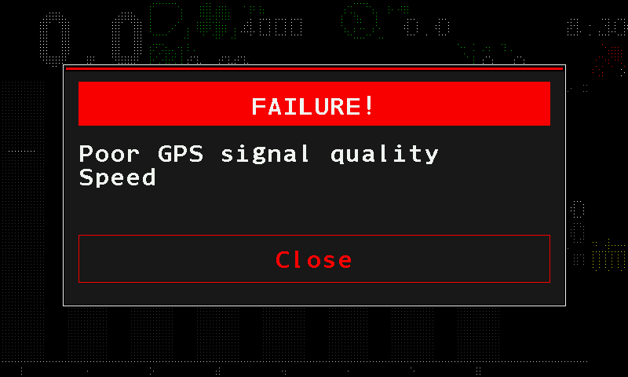
Der Bildschirm GPS
Auf dem zweiten Startbildschirm öffnet ein Tippen auf das GPS-Symbol einen Bildschirm mit den eigenen Daten des Empfängers: die von ihm gemessene Geschwindigkeit, Datum und Uhrzeit, die er empfängt (UTC, nicht die Ortszeit des Panels), und die Zahl der genutzten und der sichtbaren Satelliten. Darunter läuft ein Protokoll des Empfängers für den Servicetechniker. Die Texte auf diesem Bildschirm sind in jeder Panelsprache englisch. Verlassen Sie ihn mit einem langen Wischen nach oben.

Der zweite Startbildschirm
Der zweite Startbildschirm — was auf ihm steht, wie Sie ihn öffnen und schließen und was seine Pfeile, Kacheln und Symbole bei Berührung tun.
Der zweite Startbildschirm zeigt die Arbeit in großen Zahlen und die Dosierermotoren als Reihe von Kacheln. Er passt zu einer Maschine, deren Aussaatmenge von elektrischen Dosierermotoren gehalten wird und bei der das Panel die Motoren und die wichtigsten Arbeitsaggregate überwacht statt ein Sektionsdiagramm.
Öffnen Sie ihn vom Startbildschirm mit einem langen Wischen nach rechts. Schließen Sie ihn mit einem langen Wischen nach links — er kehrt zum Startbildschirm zurück. Er gehört nicht zum Kreis der Arbeitsbildschirme, und das Panel öffnet ihn nie von selbst.

- Aussaatmenge. In Körnern je Meter.
- Fahrgeschwindigkeit. In km/h; gelb, solange sie simuliert wird. Berühren und halten Sie sie für das Kontextmenü des Geschwindigkeitssensors. Geschwindigkeit
- Einstellungssymbol. Ein Tippen öffnet das Hauptmenü.
- GPS-Symbol. Ein Tippen öffnet den GPS-Bildschirm. GPS
- Rote Pfeile. Ein Tippen nimmt den äußersten Motor auf dieser Seite aus der Überwachung.
- Grüne Pfeile. Ein Tippen nimmt den nächsten Motor zu dieser Seite hin wieder in die Überwachung.
- Sollmenge. Angezeigt im Modus „Precise“ (Einzelkorn). Berühren und halten Sie sie, bis sie aufleuchtet, und wischen Sie dann nach oben oder unten, um sie zu ändern.
- Motorkacheln. Nummer und Wert jedes Motors; das Symbol wechselt mit dem Zustandszeichen — STOP oder einem roten × mit XXX. Berühren und halten Sie eine Kachel für ihr Kontextmenü.
- Stoppsymbol. Berühren und halten Sie es, um die Produktausbringung zu sperren oder freizugeben. Ein kurzer Piepton bestätigt.
Bei einer Maschine mit Gebläse, Drucksensor oder Pumpe steht links in der obersten Zeile der Aggregatwert — jeweils einer. Ein Tippen zeigt den nächsten; Berühren und Halten öffnet sein Kontextmenü.
Jedes Motorsymbol wechselt etwa einmal je Sekunde zwischen dem Bild des Motors und dem Zeichen seines Zustands. Was die Zustände bedeuten: Motorenbildschirm.
Die Pfeile sind immer auf diesem Bildschirm. An einer Maschine ohne Dosierermotoren haben sie nichts, worauf sie wirken könnten.
Was Sie hier tun können
| Aufgabe | So geht es |
|---|---|
| Das Hauptmenü öffnen | Das Einstellungssymbol antippen |
| Die Aussaatmenge ändern | Die Menge berühren und halten, dann nach oben oder unten wischen. Sie bleibt innerhalb der zulässigen Grenzen. Ein Tippen an anderer Stelle beendet das. |
| Den Sollwert eines Produkts nach Masse einstellen | Seine kg/ha-Kachel berühren und halten; die Menge im Zahlenblock eingeben |
| Motoren aus der Überwachung nehmen oder wieder hineinnehmen | Die roten oder grünen Pfeile antippen. Mit „Yes“ (Ja) bestätigen, wenn das Panel fragt. |
| Die Einstellungen eines Motors öffnen | Die Motorkachel berühren und halten |
| Die Produktausbringung sperren oder freigeben | Das Stoppsymbol berühren und halten. Ein kurzer Piepton bestätigt. |
| Die Daten des Empfängers sehen | Das GPS-Symbol antippen |
| Zum Startbildschirm zurückkehren | Langes Wischen nach links |
Die Arbeitsbildschirme und der Wechsel zwischen ihnen
Die vier Arbeitsbildschirme in ihrem Kreis, der zweite Startbildschirm daneben und die Wischgesten, die Sie von einem zum anderen bringen — einschließlich des Wegs zurück zum Startbildschirm von Tabelle und Statistik.
Das Panel hat vier Arbeitsbildschirme in einem Kreis und einen fünften, der für sich steht.
| Bildschirm | Wofür er da ist |
|---|---|
| Startbildschirm | Die Sektionsdiagramme, die Anzeigen der Geräte, die Geschwindigkeit, die Fläche und die Mengen. Hier startet das Panel. |
| Tabelle | Die Messwerte jeder Sektion in Zahlen, als Liste. Mehrere Tabellen, je nach Überwachungsmodus. |
| Statistik | Die Arbeitsergebnisse je Schlag: Fläche, Strecke, Mengen, Qualität. |
| Motoren | Die elektrischen Dosierermotoren und, falls die Maschine sie hat, die Fahrgassen-Aktuatoren. Nur vorhanden, wenn das Profil mindestens einen Motor oder Fahrgassen-Aktuator enthält. |
| Zweiter Startbildschirm | Große Zahlen und die Motorkacheln. Außerhalb des Kreises. |
Der Kreis
Ein langes Wischen nach links — ein Finger, über mehr als ein Drittel des Bildschirms — führt zum nächsten Bildschirm, immer in derselben Richtung, und vom letzten zurück zum Startbildschirm:
Startbildschirm → Tabelle → Statistik → Motoren → Startbildschirm.
Ohne Motoren und Fahrgassen-Aktuatoren im Profil gibt es keinen Motorenbildschirm, und die Statistik führt direkt zurück zum Startbildschirm.
Jeder Weg von einem Bildschirm zum anderen
| Von | Geste | Nach |
|---|---|---|
| Startbildschirm | Langes Wischen nach links | Tabelle |
| Startbildschirm | Langes Wischen nach rechts | Zweiter Startbildschirm |
| Tabelle | Langes Wischen nach links | Statistik |
| Statistik | Langes Wischen nach links | Motoren (Startbildschirm, wenn die Maschine keine hat) |
| Motoren | Langes Wischen nach links | Startbildschirm |
| Motoren | Langes Wischen nach rechts | Statistik |
| Zweiter Startbildschirm | Langes Wischen nach links | Startbildschirm |
Ein kurzes Wischen gilt nicht als Wechsel zu einem anderen Bildschirm; in Tabelle und Statistik blättert ein kurzes Wischen nach oben oder unten stattdessen.
Gesten auf den Arbeitsbildschirmen
| Bildschirm | Was sie bewirkt | Geste |
|---|---|---|
| Startbildschirm | Öffnet das Hauptmenü | Mit zwei Fingern tippen |
| Startbildschirm | Stellt die Alarmschwelle aus der tatsächlichen Menge ein | Doppeltippen mit einem Finger, während ausgebracht wird |
| Tabelle | Blättert die Zeilen | Nach oben oder unten wischen |
| Tabelle | Nächste oder vorige Tabelle | Langes Wischen nach rechts oder links mit zwei Fingern |
| Tabelle | Fragt, ob die Messwerte genullt werden sollen | Mit zwei Fingern tippen |
| Statistik | Blättert den Bericht, eine Zeile je Wischen | Nach oben oder unten wischen |
| Statistik | Zeigt einen anderen Schlag | Mit zwei Fingern nach rechts oder links wischen |
| Statistik | Öffnet das Menü des Bildschirms | Mit zwei Fingern tippen |
| Motoren | Öffnet das Kontextmenü eines Motors | Seine Kachel berühren und halten |
Die vollständige Liste je Bildschirm, einschließlich Menüs und Fenster: Touchzonen und Gesten.
Der Tabellenbildschirm
Die Messwerte jeder Sektion in Zahlen — welche Tabellen Ihre Maschine hat, was jede Spalte bedeutet und wie Sie die Farben lesen.
Der Tabellenbildschirm zeigt die Messwerte jeder Sektion als Zahlen, eine Zeile je Sektion. Er beantwortet die Frage, die das Diagramm nicht beantworten kann: welche Sektion genau und um wie viel. Öffnen Sie ihn vom Startbildschirm mit einem langen Wischen nach links. Er hat keinen Weg zurück: Ein weiteres langes Wischen nach links führt weiter zum Statistikbildschirm und über den Kreis zum Startbildschirm (Arbeitsbildschirme).
Ein Einzelkornsägerät im Modus „Precise“

- #. Die Nummer der Sektion.
- sds/m. Körner je Meter, jetzt gemessen.
- Q.%. Qualität — der Anteil der Körner, die wie vorgesehen einzeln abgelegt wurden.
- Db%. Doppelbelegungen — zwei Körner, wo eines vorgesehen war.
- Sk%. Fehlstellen — eine Lücke, wo ein Korn vorgesehen war.
- ks/Ha. Die ausgebrachte Menge in tausend Körnern je Hektar (in der zweiten Tabelle: Körner je Meter).
- %. Die Abweichung dieser Sektion von der eingestellten Menge.
- Tabellennummer. Diese Tabelle und wie viele es gibt, in der Ecke. Nur angezeigt, wenn es mehr als eine gibt.
- Sektionsnummer auf Gelb. Etwas in dieser Zeile ist auf seine Grenze zugedriftet.
- Wert auf Gelb. Die Zahl, die gedriftet ist.
- Summen. Dieselben Spalten für die ganze Maschine.
Ein Wert auf Gelb driftet auf seine Grenze zu; auf Rot liegt er jenseits davon. Eine ganze Zeile in Grau mit ! ist eine Sektion, die aus der Überwachung genommen wurde; eine Zeile in Rot mit × ist ein Sensor, der nicht antwortet, mit ? ein Gerät falscher Art.
Eine Drillmaschine im Modus „Flow“
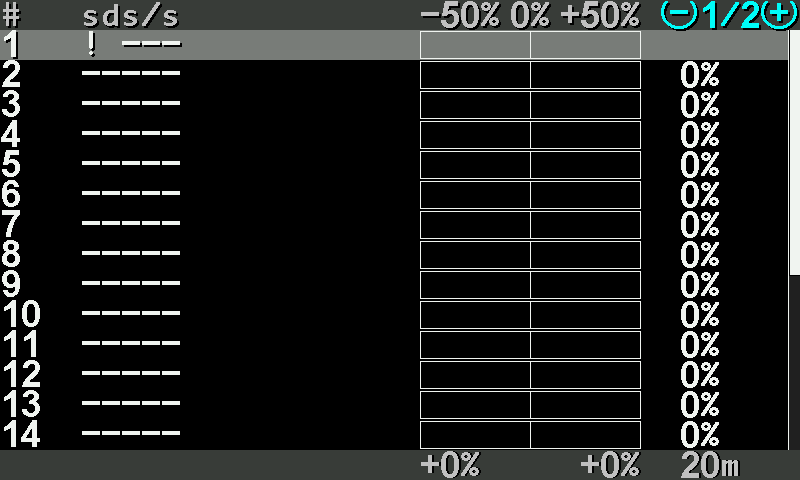
- #. Die Nummer der Sektion.
- sds/s. Körner je Sekunde. Striche, solange nichts gezählt wird.
- Abweichungsskala. Von −50 % über 0 bis +50 %.
- Abweichungsbalken. Wie weit diese Sektion von der eingestellten Menge entfernt steht.
- %. Dieselbe Abweichung als Zahl.
- Tabellennummer. Hier Tabelle 1 von 2 — die zweite enthält die Düngersektionen.
- Niedrigste Abweichung. Die Sektion, die am weitesten unter der Menge liegt.
- Höchste Abweichung. Die Sektion, die am weitesten über der Menge liegt.
- Neuberechnungsintervall. Die Strecke, über die die Werte gesammelt werden — „Recalculation,m“ (Neuberechnung) der Sensoren.
Welche Tabellen Ihre Maschine hat
| Tabelle | Angezeigt, wenn |
|---|---|
| Kornzähler — Körner je Sekunde oder je Meter, mit den Abweichungsbalken | Immer. |
| Menge je Fläche (Tausend je Hektar) und Menge je Strecke (Körner je Meter) | Nur im Aussaat-Überwachungsmodus „Precise“. |
| Trockendünger | Die Maschine hat Düngersensoren und der Düngerüberwachungsmodus ist nicht „Precise“. |
| Flüssigdünger | Die Maschine hat Flüssigdüngersensoren. |
Im Modus „Precise“ hat ein Einzelkornsägerät drei Saatguttabellen: Menge je Fläche (1/3), Menge je Strecke (2/3) und die Kornzähler (3/3) — die Zahl der Körner, die jede Sektion gesät hat, neben den Abweichungsbalken, mit der Summe für die Maschine unten.

Mit dem Bildschirm arbeiten
| Was Sie wollen | Geste |
|---|---|
| Nächste oder vorige Tabelle | Langes Wischen nach rechts oder links mit zwei Fingern |
| Die Zeilen blättern | Nach oben oder unten wischen |
| Die Messwerte nullen | Mit zwei Fingern tippen — Messwerte nullen |
| Weiter zur Statistik | Langes Wischen nach links |
An großen Maschinen passen die Reihen nicht auf eine Seite: Wischen Sie nach oben und unten, um sie zu blättern. Eine Zeile, die driftet, wird gelb, während Sie zusehen.
Der Statistikbildschirm
Der Bericht über die Arbeit auf jedem Schlag, Block für Block und Zeile für Zeile — und das Menü, das den Schlag wählt, den Bericht speichert und löscht.
Der Statistikbildschirm ist der Arbeitsbericht: wie weit Sie gefahren sind, wie viel Sie bearbeitet haben, wie viel Sie gesät haben und wie gleichmäßig. Er wird getrennt für jeden von fünf Schlägen geführt und übersteht das Ausschalten. Öffnen Sie ihn vom Tabellenbildschirm mit einem langen Wischen nach links. Er hat keinen Weg zurück: Ein weiteres langes Wischen nach links führt weiter zum Motorenbildschirm oder, an einer Maschine ohne Motoren, zum Startbildschirm.
Der Bericht ist eine lange Liste. Wischen Sie nach oben oder unten, um sie zu blättern, eine Zeile je Wischen.
Kopf und Arbeit auf dem Schlag

- Schlagnummer. Field # und die Nummer des Schlags, dessen Bericht Sie sehen. Ein Zweifingerwischen nach rechts oder links zeigt den nächsten oder den vorigen Schlag.
- (A). Dies ist der aktive Schlag — der, in den das Panel jetzt schreibt.
- Datum und Uhrzeit. Das heutige Datum und die Uhrzeit.
- Strecke. Gefahrene Strecke, in km.
- Fläche. Bearbeitete Fläche, in Ha.
- Betriebszeit. Stunden, Minuten und Sekunden Arbeit.
- Fahrgeschwindigkeit. Die durchschnittliche Fahrgeschwindigkeit.
- Beginn / Ende. Wann die Arbeit auf diesem Schlag begann und endete.
- Aussaat. Der nächste Block — siehe unten.
Der Aussaatblock

- „Seeds sown (x1000)“ (gesäte Körner, ×1000). Die Gesamtzahl, in tausend Körnern.
- „Quality“ (Qualität). Der Anteil der Körner, die wie vorgesehen einzeln abgelegt wurden. Beurteilen Sie die Arbeit nach dieser Zahl.
- „Doubles“ (Doppelbelegungen). Zwei Körner, wo eines vorgesehen war.
- „Skips“ (Fehlstellen). Eine Lücke, wo ein Korn vorgesehen war.
- „Not sown“ (nicht gesät). Der Anteil der Fahrt, auf dem gar nichts herauskam.
- „Factical“ / „Setuped“ (Ist / Soll). Die beiden Spaltenüberschriften: was tatsächlich ausgebracht wurde und was eingestellt war.
- „Population,ks/Ha“ (Aussaatstärke). In tausend Körnern je Hektar; die Abweichung in Klammern.
- „Rate, s/m“ (Menge). In Körnern je Meter; rechts die Sollmenge.
- „Sown“ / „Not sown“ / „Unknown“ (gesät / nicht gesät / unbekannt). Der Schlag in drei Teile geteilt, in Hektar.
- Balken. Dieselbe Aufteilung als farbiger Balken: grün gesät, rot nicht gesät, grau unbekannt.
- „Seed sensors“ (Kornsensoren). Der nächste Block — Sektion für Sektion.
„Unknown“ ist die Fläche, die gefahren wurde, während das Panel nicht urteilen konnte — keine Störung, aber auch kein Beleg für geleistete Arbeit.
Sektion für Sektion

- „Seed sensors“. Es folgt ein Block je Sektion.
- Sektion. Die Sektionsnummer und die Körner, die sie gezählt hat.
- q d s n. Qualität, Doppelbelegungen, Fehlstellen und nicht gesät für diese Sektion, in Prozent.
- Gesät / nicht gesät / unbekannt. Der Anteil jedes Werts für diese Sektion und der Balken.
- Aussaatstärke. Tausend je Hektar für diese Sektion, mit ihrer Abweichung.
- Abstand. Körner je Meter für diese Sektion, mit ihrer Abweichung.
Hier zeigt sich eine ungleichmäßig arbeitende Maschine. Eine Sektion mit niedrigerer Qualität als der Rest oder einem längeren roten Teil ihres Balkens weist auf diese Reihe hin: einen verstopften Auslauf, eine verschlissene Scheibe, einen Sensor, der gereinigt werden muss.
Blöcke, die an anderen Maschinen erscheinen
| Block | Was er enthält |
|---|---|
| „Work without alarms control“ (Arbeit ohne Alarmüberwachung) | Der Teil der Arbeit, den das Panel nicht überwacht hat — gefahren mit ausgeschalteter oder gesperrter Überwachung. |
| „Speed control“ (Geschwindigkeitskontrolle) | Wie weit und wie lange Sie außerhalb des zulässigen Geschwindigkeitsbereichs gefahren sind. |
| „Fertilizing“ (Düngung), Flüssigdünger | Gedüngt / nicht gedüngt / unbekannt, wenn die Maschine sie ausbringt. |
| Product | Für ein nach Masse ausgebrachtes Produkt: die ausgebrachte Menge und die tatsächliche gegenüber der eingestellten Menge in kg/ha, in der Zeile Factical: … Setuped: …. |
Das Menü des Bildschirms
Tippen Sie mit zwei Fingern auf den Bildschirm.
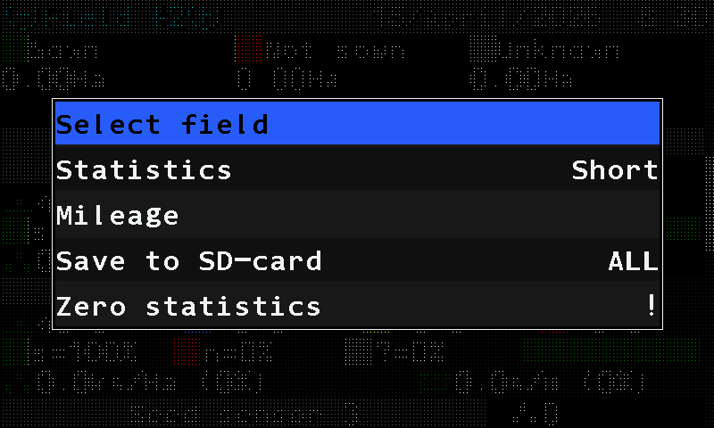
| Eintrag | Was er bewirkt |
|---|---|
| „Select field“ (Schlag wählen) | Macht den gezeigten Schlag zum aktiven — das Panel schreibt von nun an in ihn. Nur angezeigt, solange Sie einen Schlag ansehen, der nicht aktiv ist. Wurde dieser Schlag mit einem anderen Satz von Produkten nach Masse bearbeitet, fragt das Panel, ob zuvor seine Daten gelöscht werden sollen. |
| „Statistics“ (Statistik) | Schaltet den Bericht zwischen „Short“ (kurz) und „Full“ (vollständig) um. An einer Maschine ohne Geschwindigkeitssensor nicht angezeigt. |
| „Mileage“ (Laufleistung) | Strecke in km und Fläche in ha über die gesamte Lebensdauer des Systems. Diese Summen lassen sich nicht zurücksetzen. Ohne Geschwindigkeitssensor stattdessen die aufgelaufene Laufzeit. |
| „Save to SD-card“ (Auf SD-Karte speichern) | Schreibt einen Schlag oder alle auf die Speicherkarte. Angezeigt, solange eine Karte bereit ist. |
| „Zero statistics“ (Statistik nullen) | Löscht die Statistik des Schlags. Auf der Fahrerebene fragt das Panel zuerst nach der PIN einer höheren Ebene; oberhalb der Fahrerebene fragt es „Are you sure?“ (Sind Sie sicher?). |
Der Motorenbildschirm
Die elektrischen Dosierermotoren und die Fahrgassen-Aktuatoren der Maschine, je eine Kachel — wie Sie eine Kachel lesen und die Einstellungen eines Motors erreichen.
Der Motorenbildschirm zeigt die elektrischen Dosierermotoren der Maschine, je eine Kachel, und die Fahrgassen-Aktuatoren, falls die Maschine welche hat. Schauen Sie hierher, wenn eine Reihe aufhört zu säen und Sie wissen wollen, ob der Motor der Grund ist.
Es gibt ihn an jeder Maschine, deren Profil mindestens einen Elektromotor oder einen Fahrgassen-Aktuator enthält. Erreichen Sie ihn vom Statistikbildschirm mit einem langen Wischen nach links. Verlassen Sie ihn mit einem langen Wischen nach links zum Startbildschirm oder einem langen Wischen nach rechts zurück zur Statistik.

- Motor 1, STOP. Gelb, blinkend — der Motor ist betriebsbereit, aber die Produktausbringung läuft nicht.
- Wert von Motor 1. Die Drehzahl der angetriebenen Welle in U/min.
- Motor 2, rotes ×. Keine Verbindung zu diesem Motor.
- XXX. Kein Wert, weil der Motor nicht antwortet.
Eine Kachel lesen
Die Farbe des Symbols ist der Zustand. Der Wert daneben ist die Drehzahl der angetriebenen Welle in U/min. Auf dem zweiten Startbildschirm zeigen dieselben Kacheln im Überwachungsmodus „Precise“ (Einzelkorn) die Körner je Meter, die der Kornsensor dieser Reihe misst.
| Symbol | Wert | Zustand |
|---|---|---|
| Motor, grün | die Zahl | Normal. Der Motor steht unter Überwachung und wird angesteuert. |
| STOP, gelb, blinkend im Wechsel mit dem Motor | die Zahl | Der Motor ist betriebsbereit, aber die Produktausbringung ist ausgeschaltet. Mit ihm ist nichts falsch — das System bringt nur gerade nicht aus. |
| Motor, rot | die Zahl | Der Motor ist im Alarmzustand. Den Grund lesen Sie im Alarm. |
| ×, rot | XXX | Keine Verbindung. Prüfen Sie zuerst Kabel und Stecker. |
| !, umrandet | !!! | Der Motor ist aus der Überwachung genommen. Er wird weder angesteuert noch überwacht. |
Fahrgassen-Aktuatoren
| Aktuatorsymbol | Zustand |
|---|---|
| Eingezogen oder ausgefahren, grün | Der Aktuator hat seine Stellung erreicht. |
| Eingezogen oder ausgefahren, gelb | Der Aktuator fährt in diese Stellung. |
| Im Wechsel zwischen ein und aus, gelb | Das Panel kann die Stellung des Aktuators nicht bestimmen. |
| Blinkend rot | Der Aktuator ist im Alarmzustand. |
| Blinkend rotes × oder ? | Keine Verbindung oder ein Gerät falscher Art. |
| Blinkend weiß | Der Aktuator ist aus der Überwachung genommen. |
Mit dem Bildschirm arbeiten
| Was Sie wollen | Geste |
|---|---|
| Die Einstellungen eines Motors oder Aktuators | Seine Kachel berühren und halten |
| Zurück zum Statistikbildschirm | Langes Wischen nach rechts |
| Weiter zum Startbildschirm | Langes Wischen nach links |
Berühren und Halten öffnet das Kontextmenü des Motors, den Sie gedrückt haben. Sein Eintrag „Information“ zeigt den Zustand des Motors und bei einer Controllerstörung den Code der letzten Störung. Hier sehen Sie alle Motoren der Maschine auf einmal und können den wählen, der sich schlecht verhält.
Sollmenge ändern
Die Menge, die das Panel hält und überwacht, vom Startbildschirm aus während der Aussaat erhöhen oder senken — per Touch.
Das Mengenfeld am rechten Ende jedes Diagramms zeigt zwei Zahlen: oben die gemessene Menge, darunter die Sollmenge. Im Modus „Flow“ (Durchfluss) ist die Sollmenge die Alarmschwelle des Diagramms — siehe Das Sektionsdiagramm.
An einem Diagramm
Berühren und halten Sie auf dem Startbildschirm das Diagramm, dessen Menge Sie ändern wollen, länger als eine halbe Sekunde. Sein Sollwert leuchtet auf.

Das Saatgutdiagramm mit aufgeleuchtetem Sollwert zur Bearbeitung. Wischen Sie über den Bildschirm nach oben, um die Sollmenge zu erhöhen, nach unten, um sie zu senken — ein Schritt je Wischen. Die Sollmenge bleibt innerhalb ihrer zulässigen Grenzen.
Tippen Sie außerhalb der Diagramme auf den Bildschirm, um abzuschließen. Die Zahl leuchtet nicht mehr und die neue Sollmenge gilt.
Um ein anderes Diagramm zu ändern — etwa Dünger nach Saatgut —, berühren und halten Sie stattdessen dieses Diagramm.
Für ein nach Masse ausgebrachtes Produkt
Berühren und halten Sie die kg/ha-Anzeige des Produkts. Der Zahlenblock öffnet sich mit der Überschrift Product und der Nummer des Produkts.
Geben Sie die Sollmenge ein, von 10.0 bis 500.0 kg/ha, und berühren Sie „OK“ (Zahlen eingeben). Ein Tippen außerhalb des Blocks lässt die Sollmenge, wie sie war.
Auf dem zweiten Startbildschirm
Berühren und halten Sie die Menge, bis sie aufleuchtet, und wischen Sie dann nach oben oder unten. Ein Tippen an anderer Stelle beendet das. Siehe Zweiter Startbildschirm.
Produktausbringung von Hand sperren
Die gesamte Produktausbringung mit einem Berühren und Halten anhalten und wieder starten — was die Sperre bewirkt und woran Sie erkennen, dass sie eingeschaltet ist.
Die Handsperre hält die gesamte Produktausbringung an: Die Dosierermotoren und die Pumpe laufen nicht, wie auch immer die Maschine fährt. Nutzen Sie sie, um ein bereits bestelltes Feld zu überfahren, um mit abgesenktem Gerät auf der Straße zu fahren oder wenn Sie ohne Geschwindigkeitssensor arbeiten.
Die Sperre gibt es an Maschinen mit elektrischen Dosierermotoren oder einer Flüssigdüngerpumpe.
Berühren und halten Sie auf dem Startbildschirm eine leere Stelle in der rechten Spalte der Anzeigen — nicht auf einem Symbol —, bis das Panel einmal piept.
Prüfen Sie die rechte Spalte. Dort blinkt eine gelbe Hand: Die Ausbringung ist gesperrt.

Die rechte Spalte des Startbildschirms mit der gelben Hand. Zum Entsperren berühren und halten Sie dieselbe Stelle erneut. Ein kurzer Piepton; die Hand verschwindet.
Ein Berühren und Halten auf einem Symbol der Spalte öffnet stattdessen das Kontextmenü dieses Geräts.
Auf dem zweiten Startbildschirm berühren und halten Sie das Stoppsymbol — dieselbe Sperre, derselbe Piepton.
Was die Sperre an anderer Stelle ändert
- Die Motorkacheln auf dem Motorenbildschirm zeigen ein gelbes STOP — betriebsbereit, bringt nicht aus.
- Die Überwachung der Produktausbringung startet nicht, wenn Sie losfahren — die Sperre muss aus sein, damit die Überwachung startet (Schnellstart).
- Die bei gesetzter Sperre geleistete Arbeit wird in der Statistik als „Work without alarms control“ (Arbeit ohne Alarmüberwachung) gezählt (Statistik).
Wenn das Panel von selbst sperrt
Das Einschalten der Geschwindigkeitssimulation sperrt die Produktausbringung. Ein Panel, das bei bereits eingeschalteter Simulation eingeschaltet wird, startet ebenfalls gesperrt. Entsperren Sie von Hand, wenn Sie zum Ausbringen bereit sind: Ohne Geschwindigkeitssensor arbeiten.
Alarmschwelle automatisch einstellen
Das Panel die Alarmschwelle der Diagramme aus der Menge einstellen lassen, die die Maschine tatsächlich sät, mit einem Doppeltippen — Drillmaschinen im Modus „Flow“ oder „Hybrid“.
An einer Drillmaschine kommen die Körner zu dicht hintereinander, um sie einzeln zu zählen; deshalb überwacht das Panel jede Reihe gegen eine Alarmschwelle: die Linie im Diagramm. Stellen Sie sie zu hoch ein, sinkt jede Reihe unter die Linie — „NOT UNDER CONTROL“ (Nicht unter Überwachung). Stellen Sie sie zu niedrig ein, bleibt eine halb verstopfte Reihe unbemerkt. Das Panel kann sie aus dem einstellen, was die Maschine tatsächlich sät.
Das funktioniert in den Modi „Flow“ (Durchfluss) und „Hybrid“ (Hybrid), für die Saatgut- und Trockendüngerdiagramme sowie für Flüssigdünger im Modus „Flow“. Im Modus „Precise“ (Einzelkorn) ändert das Doppeltippen nichts.
Beginnen Sie die Aussaat mit Ihrer normalen Geschwindigkeit, mit Produkt, das durch jede Reihe fließt.
Tippen Sie zweimal mit einem Finger auf den Startbildschirm — zwei schnelle Tipper auf dieselbe Stelle.
Das Panel piept einmal und hellt das Mengenfeld auf: Die neue Alarmschwelle ist aus der gerade gesäten Menge eingestellt — die Hälfte davon im Modus „Flow“, ein Zehntel davon im Modus „Hybrid“.
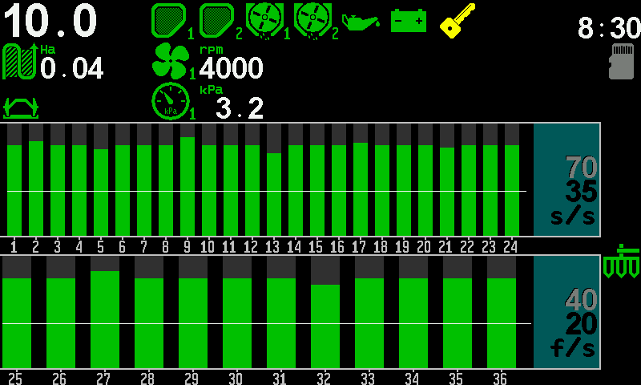
Die Diagramme nach dem Doppeltippen: die Säulen über der Linie, das Mengenfeld aufgehellt. Prüfen Sie, dass jede Säule über ihrer Linie steht. Das Licht erlischt nach einigen Sekunden von selbst.
Das Doppeltippen wirkt nur, solange Produkt ausgebracht wird. Im Stand geschieht nichts.
Was die Linie bedeutet und warum Reihen darunter nicht überwacht werden: Das Sektionsdiagramm.
Sensor in die Überwachung nehmen oder herausnehmen
Das Panel einen Sensor nicht mehr überwachen lassen — eine abgeschaltete Sektion, ein defekter Sensor — und ihn später wieder aufnehmen.
Ein Sensor außerhalb der Überwachung wird nicht überwacht: Das Panel löst keinen Alarm über ihn aus, was er auch meldet. Nehmen Sie einen Sensor aus der Überwachung, wenn seine Sektion absichtlich außer Arbeit ist oder wenn der Sensor defekt ist und Sie das Feld zu Ende bringen müssen. Nehmen Sie ihn so bald wie möglich wieder auf.
Einen Sensor aus der Überwachung nehmen
Berühren und halten Sie auf dem Startbildschirm den Sensor — seine Säule im Diagramm oder sein Symbol. Sein Kontextmenü öffnet sich.
Das Kontextmenü eines Kornsensors. Tippen Sie „Disable control“ (Überwachung ausschalten) an, um es zu wählen, und tippen Sie es erneut an.
Beim ersten Mal in einer Sitzung fragt das Panel „Are you sure that you want disable control?“ (Sind Sie sicher, dass Sie die Überwachung ausschalten wollen?). Berühren Sie „Yes“ (Ja). Eine Berührung außerhalb des Fensters bricht ab.

Die Frage, bevor die Überwachung ausgeschaltet wird. Die Säule wird weiß mit ! (ein Symbol im Wechsel mit einem weißen [!]). Der Sensor wird nicht mehr überwacht.
Ihn wieder in die Überwachung nehmen
Gehen Sie genauso vor und wählen Sie „Enable control“ (Überwachung einschalten). Beim ersten Mal in einer Sitzung fragt das Panel „Are you sure that you want enable control?“; bestätigen Sie mit „Yes“. Ein Kornsensor, der wieder in die Überwachung genommen wurde, zeigt einige Sekunden ein gelbes ?, während er seine Einstellungen erhält.
Wenn die Statistik gelöscht werden muss
Bei manchen Sensoren fragt das Panel zuerst, ob die Statistik des aktiven Schlags gelöscht werden soll: Es meldet „Need to erase data, for selected field!“ (Daten des gewählten Schlags müssen gelöscht werden!) und fragt erneut.
- „Yes“ löscht die Statistik des aktiven Schlags und ändert die Überwachung. Auf der Fahrerebene fragt das Panel zuerst nach der PIN einer höheren Ebene; eine falsche PIN zeigt „Invalid PIN“ (Ungültige PIN), und nichts ändert sich.
- „No“ (Nein) lässt beides, wie es ist.
Der Geschwindigkeitssensor lässt sich nicht aus der Überwachung nehmen — sein Kontextmenü hat keinen solchen Eintrag. Motoren nehmen Sie auf dieselbe Weise aus der Überwachung, von ihrer Kachel auf dem Motorenbildschirm oder mit den Pfeilen auf dem zweiten Startbildschirm. Was die vier Kombinationen von Überwachung und Produktausbringung bedeuten: Die vier Zustände einer Sektion.
Messwerte des Tabellenbildschirms nullen
Die Saatgut- und Düngerzähler des Tabellenbildschirms auf null setzen — für einen neuen Schlag oder eine neue Saatgutpartie —, ohne die Schlagstatistik anzutasten.
Der Tabellenbildschirm zählt ab dem Moment weiter, in dem seine Messwerte zuletzt genullt wurden. Nullen Sie sie, wenn Sie einen neuen Schlag oder eine neue Saatgutpartie beginnen, damit die Zähler und Abweichungen nur die neue Arbeit beschreiben.
Öffnen Sie den Tabellenbildschirm: ein langes Wischen nach links auf dem Startbildschirm.
Tippen Sie mit zwei Fingern auf den Bildschirm. Das Panel fragt „Zero readings?“ (Messwerte nullen?).

Die Frage vor dem Nullen: Yes in Grün, No in Rot. Berühren Sie „Yes“ (Ja). Die Zähler jedes Korn-, Trockendünger- und Flüssigdüngersensors werden auf null gesetzt.
„No“ (Nein) oder eine Berührung außerhalb des Fensters lässt alles, wie es war.
Um danach zum Startbildschirm zurückzukommen, wischen Sie weiter nach links — durch die Statistik (und die Motoren) zum Startbildschirm. Der Tabellenbildschirm hat keinen Weg zurück (Arbeitsbildschirme).
Nur die Zähler des Tabellenbildschirms werden genullt. Die Schlagstatistik wird nicht angetastet; sie wird mit „Zero statistics“ (Statistik nullen) im Menü des Statistikbildschirms gelöscht.
Scheiben mit Saatgut füllen
Die Saatgutscheiben eines Einzelkornsägeräts mit Dosierermotoren drehen, bis jede Scheibe Saatgut trägt, damit die Aussaat ab dem ersten Meter beginnt — wie Sie es ausführen und das Ergebnis lesen.
Das gilt nur für Einzelkornsägeräte mit elektrischen Saatgut-Dosierermotoren im Überwachungsmodus „Precise“ (Einzelkorn). Ohne Motoren im Profil oder in einem anderen Modus wird der Menüeintrag nicht angezeigt.
Werden die Scheiben von Elektromotoren angetrieben, stehen sie leer, bis die Motoren laufen. Fahren Sie mit leeren Scheiben los, bekommen die ersten Meter jeder Reihe nichts: Jede Scheibe muss erst Körner aufnehmen und bis zum Abwurfpunkt tragen. Das Füllen dreht die Scheiben im Stand, damit die Aussaat ab dem ersten Meter beginnt.
Halten Sie die Maschine an. Der Eintrag wird nur angezeigt, solange die Maschine steht.
Tippen Sie auf dem Startbildschirm mit zwei Fingern. Das Hauptmenü öffnet sich mit bereits gewähltem „Fill the disks with seeds“ (Scheiben mit Saatgut füllen); tippen Sie es noch einmal an.
Das Hauptmenü mit gewähltem Eintrag „Fill the disks with seeds“. Das Panel fragt „Are you sure?“ (Sind Sie sicher?). Berühren Sie „Yes“ (Ja). „No“ (Nein) oder eine Berührung außerhalb des Fensters bricht ab.

Die Frage, bevor sich die Scheiben drehen. Beobachten Sie die Kacheln. Jeder Motor dreht seine Scheibe, bis der Kornsensor seiner Reihe das erste Korn registriert. Am Ende piept das Panel dreimal und zeigt „Operation complete.“ (Vorgang abgeschlossen.)
Berühren Sie „Close“ (Schließen), um zum Startbildschirm zurückzukehren.
Um vor dem Ende abzubrechen, berühren Sie „Cancel“ (Abbrechen): Die Motoren halten sofort an und gehen zurück in die Aussaatüberwachung.
Den Bildschirm lesen
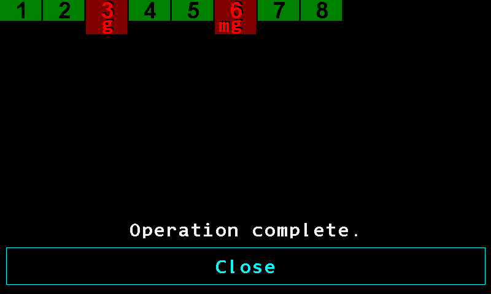
- Grüne Kachel. Fertig: Der Kornsensor hat ein Korn registriert, die Scheibe ist gefüllt.
- Dunkelrote Kachel. Fehlgeschlagen: Die Scheibe ließ sich nicht füllen. Die Motornummer ist hellrot.
- Buchstaben für den Grund. Warum die Kachel fehlschlug — siehe die Tabelle unten.
- „Operation complete.“ Jeder Motor ist fertig.
- „Close“. Führt zurück zum Startbildschirm. Solange der Vorgang läuft, steht auf dieser Taste „Cancel“.
| Kachel | Zustand |
|---|---|
| Dunkelgrau | Wartet, bis sie an der Reihe ist. Bis zu acht Motoren laufen gleichzeitig; die übrigen warten. |
| Gelb | Läuft: Die Scheibe dreht sich. |
| Grün | Fertig. |
| Dunkelrot | Fehlgeschlagen. |
Jeder Motor dreht seine Scheibe mit 4 U/min der angetriebenen Welle. Wird innerhalb von 1,25 Umdrehungen — etwa 19 Sekunden — kein Korn registriert, wird dieser Motor angehalten und als fehlgeschlagen markiert. Ein Motor, der sich bereits im Alarmzustand befindet, wird sofort als fehlgeschlagen markiert. Steht der Düngerüberwachungsmodus ebenfalls auf „Precise“, werden die Düngermotoren auf dieselbe Weise gefahren.
Buchstaben auf einer fehlgeschlagenen Kachel
Die Farbe des Buchstabens ist so wichtig wie der Buchstabe: Rot bedeutet eine Störung, Weiß bedeutet aus der Überwachung genommen.
| Buchstabe | Bedeutung |
|---|---|
| m rot | Eine Störung des elektrischen Dosierermotors während des Vorgangs. |
| m weiß | Der Motor ist aus der Überwachung genommen und kann nicht laufen. |
| g rot | Der Kornsensor hat kein Korn registriert, während sich die Scheibe drehte. |
| s rot | Eine Störung des Kornsensors während des Vorgangs. |
| s weiß | Der Kornsensor ist aus der Überwachung genommen. |
Steht der Kornsensor außerhalb der Überwachung, kann das Panel die Scheibe nicht prüfen. Ein betriebsbereiter Motor dreht sie dennoch etwa eineinviertel Umdrehungen, die Scheibe wird in der Praxis also gefüllt — aber das Panel meldet diesen Motor als fehlgeschlagen, weil es nie ein Korn gesehen hat.
Fahrgassenrhythmus einstellen
Was ein Fahrgassenrhythmus ist, für Ihre Drillmaschine und Ihre Spritze berechnet, wie Sie ihn am Panel per Touch einstellen und wie das Panel die Durchgänge zählt.
Eine Fahrgasse ist die Spur, in der später die Spritze fährt. Sie legen sie jetzt bei der Aussaat an, indem Sie in bestimmten Durchgängen ein oder zwei Sektionen abschalten, damit dort, wo die Spritzenräder laufen, nichts gesät wird. Welche Durchgänge das sind, hängt von der Breite der Drillmaschine im Verhältnis zur Breite der Spritze ab. Dieses Muster, über das Feld wiederholt, ist der Rhythmus.
Wie ein Rhythmus funktioniert — ein Beispiel
Eine 6-Meter-Drillmaschine und eine 18-Meter-Spritze: Jeder dritte Durchgang muss die Spur tragen. Der Rhythmus ist drei Durchgänge lang, und Aktuator 1 schaltet in einem davon seine Sektionen ab.
| Durchgang | Aktuator 1 | Was gesät wird |
|---|---|---|
| 1 | schaltet seine Sektionen ab | Alle Reihen außer den Fahrgassenreihen — die Spur ist angelegt. |
| 2 | offen | Alle Reihen. |
| 3 | offen | Alle Reihen. |
| wieder 1 | schaltet ab | Die nächste Spur, 18 m weiter. |
Was das Panel zulässt
| Gespeicherte Rhythmen | Drei. Einer ist jeweils aktiv. |
| Aktuatoren in einem Rhythmus | Vier. An einer Maschine, die Fahrgassen durch Anhalten von Dosierermotoren anlegt, treten die Motoren an ihre Stelle. |
| Abschaltdurchgänge je Aktuator | Vier verschiedene Durchgänge desselben Rhythmus. |
| Durchgänge in einem Rhythmus | 1 bis 50. |
Einstellen
Die Fahrgasseneinträge liegen unter „Seeding machine parameters“ (Sämaschinenparameter), was die Agronomenebene erfordert: Agronomenebene freischalten. Der Eintrag „Tramline“ (Fahrgasse) wird nur an einer Maschine angezeigt, die Fahrgassen anlegen kann.
Tippen Sie auf dem Startbildschirm mit zwei Fingern. Tippen Sie „Settings“ (Einstellungen) an und tippen Sie es erneut an.
Tippen Sie „Seeding machine parameters“ an und tippen Sie es erneut an.
Tippen Sie „Tramline“ an und tippen Sie es erneut an.

Das Menü „Tramline“. Tippen Sie „Tramline“ an und wischen Sie nach rechts auf „Yes“ (Ja). Tippen Sie dann zweimal auf „Tramline rhythm settings“ (Einstellungen des Fahrgassenrhythmus). Das Rhythmusformular öffnet sich mit gewähltem Rhythmus 1.
Wischen Sie bei „Rhythm“ (Rhythmus) nach rechts oder links, um die Rhythmusnummer zu wählen. Tippen Sie mit zwei Fingern und wählen Sie „Select“ (Wählen). Neben der Nummer erscheint das Wort „Active“ (Aktiv) — ohne es ist der Rhythmus gespeichert, aber nicht in Gebrauch.
Wischen Sie nach unten zu „Bouts“ (Durchgänge), tippen Sie mit zwei Fingern und stellen Sie die Zahl der Durchgänge im Rhythmus ein.
Wischen Sie zur umrahmten Zelle unter der Aktivierungsüberschrift und tippen Sie mit zwei Fingern. Wählen Sie die Nummer des Aktuators, dann den Durchgang, in dem er seine Sektionen abschalten soll.
Wenn das Muster es verlangt, fügen Sie demselben Aktuator weitere Durchgänge hinzu — bis zu vier — mit der umrahmten Zelle am Ende seiner Zeile, oder einen weiteren Aktuator mit der Zelle in der leeren Zeile darunter.
Tippen Sie mit drei Fingern. Der Rhythmus wird gespeichert und das Menü „Tramline“ kehrt zurück. Tippen Sie außerhalb der Menüs, bis der Startbildschirm zurückkehrt. Die Fahrgassenanzeige zeigt den aktuellen Durchgang und die Zahl der Durchgänge.
Ein Berühren und Halten an beliebiger Stelle des Formulars speichert den Rhythmus, ohne es zu verlassen. Kehren Sie vor der Arbeit auf die Fahrerebene zurück — darüber werden keine Alarme angezeigt.
Das Rhythmusformular

- „Rhythm“. Die Nummer des Rhythmus; ein Wischen nach rechts oder links schaltet durch die drei.
- „Active“. Dieser Rhythmus ist der in Gebrauch befindliche.
- „Bouts“. Die Zahl der Durchgänge im Rhythmus.
- Aktivierungsüberschrift. „Tramline actuators activation“ (Aktivierung der Fahrgassen-Aktuatoren) an einer Maschine, die Fahrgassen mit Aktuatoren anlegt; „Tramline motors activation“ (Aktivierung der Fahrgassen-Motoren) an einer, die Dosierermotoren anhält. Eine Maschine mit beidem zeigt beide Überschriften.
- Umrahmte Zelle. Fügt einen Aktuator (oder Motor) und seinen Abschaltdurchgang hinzu.
Im Formular bewegt ein Wischen nach oben oder unten zwischen den Zeilen, ein Wischen nach rechts oder links entlang einer Zeile, und ein Zweifingertippen öffnet die gewählte Zelle. „Reset rhythm settings“ (Rhythmuseinstellungen zurücksetzen) im Menü der Zeile „Rhythm“ setzt den gewählten Rhythmus auf seine Standardwerte zurück.
Wie der Durchgang wechselt
Das Panel zählt die Durchgänge selbst. Etwas an der Maschine muss ihm sagen, dass eine Fahrt zu Ende ist:
| An der Maschine | Was einen Durchgang beendet |
|---|---|
| Spuranzeigersensoren im Profil | Mindestens ein Spuranzeigersensor unter Überwachung und antwortend. Der Wechsel der Spuranzeigerstellung beendet den Durchgang. |
| Keine Spuranzeiger | Der Arbeitsstellungssensor, unter Überwachung und antwortend. Das Anheben des Geräts aus der Arbeit beendet den Durchgang. |
| Keines von beiden | Der Durchgang wechselt nicht. |
Kann der Durchgang nicht von selbst wechseln, ist das Fahrgassensymbol auf dem Startbildschirm gelb (Fahrgassen-Durchgang). Prüfen Sie die Anzeige auf dem Startbildschirm, bevor Sie eine Fahrt beginnen.
Bildschirmhelligkeit einstellen
Den Bildschirm heller oder dunkler machen — ein Eintrag im Menü „Settings“, von Hand eingestellt.
Tippen Sie auf dem Startbildschirm mit zwei Fingern. Tippen Sie „Settings“ (Einstellungen) an und tippen Sie es erneut an.
„Brightness,%“ (Helligkeit, %) ist der erste Eintrag. Tippen Sie ihn an, dann wischen Sie nach rechts, um aufzuhellen, oder nach links, um abzudunkeln, in Schritten von 10, von 0 bis 100.

Das Menü „Settings“ mit gewähltem Eintrag „Brightness,%“. Tippen Sie außerhalb des Menüs, um es zu verlassen. Die neue Helligkeit bleibt in Kraft und wird von selbst gespeichert.
Es gibt keine automatische Helligkeit: Der Bildschirm bleibt bei dem Wert, den Sie eingestellt haben, Tag und Nacht. Dunkeln Sie ihn für die Nachtarbeit ab und stellen Sie ihn am Morgen wieder höher. 0 ist die dunkelste Einstellung, nicht aus — der Bildschirm bleibt beleuchtet.
Dasselbe Menü enthält „Volume“ (Lautstärke) — die Lautstärke des Alarmtons — und „Buttons sound“ (Tastenton), den Klick bei jeder Berührung. Alles Übrige im Menü „Settings“: Das Menü „Settings“.
Ohne Geschwindigkeitssensor arbeiten
Wenn der Geschwindigkeitssensor auf dem Feld ausfällt — die Geschwindigkeit vom GPS nehmen oder die Arbeit mit simulierter Geschwindigkeit beenden und die Ausbringung von Hand steuern.
Symptom. Das Geschwindigkeitsfeld zeigt XX.X in Rot, oder die Geschwindigkeit bleibt null, obwohl die Maschine fährt. Ohne Geschwindigkeit kann das Panel Fläche, Mengen und Abweichungen nicht berechnen, und die Dosierermotoren wissen nicht, wie schnell sie drehen sollen.
Ursache. Der Geschwindigkeitssensor oder das Gerät, das ihn trägt, antwortet nicht, oder das Rad gibt keine Impulse mehr.
Was zu tun ist. Zwei Wege, beide über das Kontextmenü des Geschwindigkeitssensors — Geschwindigkeitsfeld berühren und halten. Beide Einträge erfordern die Agronomenebene: Agronomenebene freischalten.
Die Geschwindigkeit vom GPS nehmen
Stellen Sie „GPS internal“ (internes GPS) auf „Yes“ (Ja). Das Panel nimmt die Fahrgeschwindigkeit von seinem eigenen Empfänger. Beobachten Sie das Satellitensymbol in der rechten Spalte: Grün oder Gelb ist brauchbar, Rot nicht. Siehe GPS.
Mit simulierter Geschwindigkeit arbeiten
Berühren und halten Sie das Geschwindigkeitsfeld. Sein Kontextmenü öffnet sich.
Stellen Sie „Imitation, km/h“ (Simulation, km/h) auf die Geschwindigkeit ein, mit der Sie fahren werden, bis 20 km/h. Das Panel meldet „Settings of Min and Max speed switched off!“ (Einstellungen für Min. und Max. Geschwindigkeit ausgeschaltet!) — die Geschwindigkeitsgrenzen werden nicht überwacht, solange die Geschwindigkeit simuliert wird.
Das Panel sperrt die Produktausbringung von selbst: Die gelbe Hand erscheint in der rechten Spalte.
Kehren Sie auf die Fahrerebene zurück, damit Alarme wieder angezeigt werden.
Das Geschwindigkeitsfeld zeigt nun eine gelbe Zahl im Wechsel mit „IMITATION“ (Geschwindigkeit).
Steuern Sie die Ausbringung mit der Handsperre: Berühren und halten Sie eine leere Stelle der rechten Spalte, um in einem Durchgang mit dem Ausbringen zu beginnen, und erneut, um am Vorgewende anzuhalten. Siehe Ausbringung von Hand sperren.
Fahren Sie mit der eingestellten Geschwindigkeit. Die Mengen stimmen nur, solange die tatsächliche Geschwindigkeit mit ihr übereinstimmt.
Ist der Sensor repariert, stellen Sie „Imitation, km/h“ wieder auf „No“ (Nein) — wischen Sie nach links, bis der Wert „No“ lautet — und stellen Sie die Geschwindigkeitsgrenzen neu ein.
Einzelheiten zu den Einstellungen des Geschwindigkeitssensors: Geschwindigkeitssensor.
Zugriffsebenen
Die drei Zugriffsebenen des Hectare 5, was jede öffnet und was mit den Alarmen geschieht, solange eine höhere Ebene eingestellt ist.
Nicht jede Einstellung steht jedem offen. Das Panel hat drei Zugriffsebenen. Nach jedem Einschalten startet es auf der niedrigsten, „Operator“ (Fahrer).
| Ebene | Was sie öffnet |
|---|---|
| „Operator“ (Fahrer) | Die tägliche Arbeit: Helligkeit, Lautstärke, Sprache, Alarmverzögerung, die Uhr, die Sollmengen und Alarmschwellen, Sensoren in die Überwachung nehmen oder herausnehmen, die Kalibrierungen nach Masse. Das Zurücksetzen der Statistik verlangt auf dieser Ebene eine PIN. |
| „Agronomist“ (Agronom) | Die Einstellungen der Inbetriebnahme: „Seeding machine parameters“ (Parameter der Sämaschine), „Product rate error,%“ (Mengenfehler Produkt, %), die meisten Sensorparameter, die Kalibrierungen von Geschwindigkeit und Dosierer sowie das Menü „Service“ (Service) mit Profil und Gerätekonfiguration. Erfordert eine PIN. |
| „Service“ (Service) | Alles Obige, dazu die Punkte zum Zurücksetzen auf die Standardwerte, „Reset settings“ (Einstellungen zurücksetzen), „Save factory defaults“ (Werkseinstellungen speichern), die Seriennummer, die Testzeit und „Imitation mode“ (Simulationsmodus). Für die Serviceabteilung. Erfordert eine PIN. |
Jede Einstellungstabelle in dieser Anleitung nennt die Ebene, die ein Punkt braucht. Ein Punkt oberhalb Ihrer Ebene wird im Menü gar nicht angezeigt — fehlt ein hier genannter Punkt, prüfen Sie zuerst die Ebene.
Die Ebene wechseln
Die Ebene wird nur an einer Stelle gewechselt: „Settings“ (Einstellungen) → „User“ (Benutzer). Beim Wechsel nach oben verlangt das Panel die PIN dieser Ebene, beim Wechsel nach unten nicht. Schritt für Schritt: Agronomenebene freischalten.
Die PIN erfahren Sie bei Ihrem Händler oder beim Service.
Was mit den Alarmen geschieht, solange die Ebene hoch ist
Die Alarme gehen nicht verloren, solange sie verborgen sind — sie warten. Senken Sie die Ebene auf „Operator“, verwirft das Panel die Alarme, die sich inzwischen erledigt haben, und zeigt die, die noch zutreffen, ein Fenster nach dem anderen — auch jene, die Sie schon geschlossen hatten, bevor Sie die Ebene angehoben haben. Nach einer Stunde Inbetriebnahme auf „Agronomist“ erwarten Sie auf dem Rückweg eine kurze Folge von Alarmfenstern. Das ist der Rückstau, keine neue Störung. Wie die Fenster funktionieren: So arbeiten Alarme.
Agronomenebene freischalten
Die Schritte per Touch, um die Zugriffsebene vor dem Ändern von Einstellungen auf „Agronomist“ oder „Service“ anzuheben und danach auf „Operator“ zurückzukehren.
Die meiste Einrichtungsarbeit — Sensorparameter, Kalibrierungen, das Profil, die Gerätekonfiguration — braucht die Ebene „Agronomist“ (Agronom). Die Ebene „Service“ (Service) wird auf dieselbe Weise angehoben. Was jede Ebene öffnet: Zugriffsebenen.
Sie brauchen die PIN der gewünschten Ebene. Eine PIN öffnet nur ihre eigene Ebene: Wählen Sie „Agronomist“ und geben Sie die PIN des Agronomen ein.
Tippen Sie auf dem Startbildschirm mit zwei Fingern. Das Hauptmenü öffnet sich.
Das Hauptmenü. Tippen Sie auf „Settings“ (Einstellungen) und noch einmal darauf. Das Menü „Settings“ öffnet sich.
Das Menü Settings auf der Ebene Operator. Suchen Sie „User“ (Benutzer) fast am Ende des Menüs — wischen Sie nach oben, falls es nicht zu sehen ist — und tippen Sie darauf. Wischen Sie nach rechts, bis dort „Agronomist“ (oder „Service“) steht.

„User“ auf Agronomist gestellt. Tippen Sie noch einmal auf „User“. Das Zahlenfeld öffnet sich mit „Enter your PIN:“ (PIN eingeben). Geben Sie die PIN ein und tippen Sie auf „OK“.

Das Zahlenfeld mit der PIN-Abfrage. Ein kurzes Fenster nennt die neue Ebene, und das Menü „Settings“ erscheint wieder mit den Punkten dieser Ebene — zum Beispiel „Seeding machine parameters“ (Parameter der Sämaschine). Tippen Sie neben das Menü, um es zu verlassen.
Eine falsche PIN zeigt „Invalid PIN“ (Ungültige PIN) in einem roten Fenster, und das Zahlenfeld öffnet sich erneut. Zum Abbrechen tippen Sie neben das Zahlenfeld; die Ebene bleibt, wie sie war.
Wenn Sie zurückkehren, werden die Alarme, die noch zutreffen, nacheinander angezeigt. Siehe Zugriffsebenen.
Das Profil
Was das Profil dem Panel sagt, wie Sie es prüfen, was jeder Profilpunkt erlaubt, wann das Panel ein Profil ablehnt und wie es gespeichert wird.
Das Profil sagt dem Panel, welche Geräte und wie viele davon an der Maschine sind. Ein Panel wird meist mit eingestelltem Profil geliefert. Prüfen Sie es, bevor Sie etwas anderes einstellen: Ein Gerät, das im Profil fehlt, wird nie überwacht, und ein Gerät im Profil, das nicht verbaut ist, löst „Connection lost“ (Verbindung verloren) aus.
Das Profil auf dem Startbildschirm prüfen
Schalten Sie das Panel ein und warten Sie, bis der Startbildschirm erscheint. Sehen Sie dann nach:
- Kein Alarm „Connection lost“ — das Panel hat jedes Gerät gefunden, das das Profil angibt.
- Keine weißen Anzeigen mit Ausrufezeichen — kein Gerät ist aus der Überwachung genommen.
- Keine roten Anzeigen mit „X“ — jedes Gerät antwortet.
Was die Anzeigen bedeuten: Anzeigen. Wie Sie ein Gerät in die Überwachung nehmen oder herausnehmen: Sensor in die Überwachung nehmen oder herausnehmen.
Das Profil öffnen
Das Profil braucht die Ebene „Agronomist“ (Agronom) (Agronomenebene freischalten). Tippen Sie mit zwei Fingern auf den Startbildschirm, tippen Sie dann zweimal auf „Service“ (Service) und zweimal auf „Profile“ (Profil). Den gewählten Punkt ändern Sie mit einem Wisch nach rechts oder links.

Die Profilpunkte
| Punkt | Bereich |
|---|---|
| „Seed sensors“ (Kornsensoren) | 2 … 120. Das Menü lässt 1 zu, ein solches Profil wird aber beim Speichern abgelehnt. |
| „Fertilizer sensors“ (Düngersensoren) | 0 … 60; Korn- und Düngersensoren zusammen höchstens 120. |
| „Liq.fert.flow sensors“ (Flüssigdünger-Durchflusssensoren) | 0 … 60 — Sektionssensoren für Flüssigdünger. |
| „Hoppers“ (Behälter) | 0 … 9 |
| „Dispensers“ (Dosierer) | 0 … 9 — Sensoren der Dosierwellen. |
| „Speed“ (Geschwindigkeit) | „No“ (Nein) / „Control panel“ (Bedienpanel; Sensor am Panel angeschlossen) / „Input device“ (Eingangsgerät; ein Radsensor an einem Eingangsgerät) / „Input device (2)“ (zwei Radsensoren an einem Eingangsgerät). |
| „Fans“ (Gebläse) | 0 … 2 |
| „Pressure sensors“ (Drucksensoren) | 0 … 3 |
| „Work position sensor“ (Arbeitsstellungssensor) | „No“ / „Yes“ (Ja) |
| „Markers“ (Spuranzeiger) | „No“ / „One“ (einer) / „Both“ (beide) |
| „No battery charge“ (Batterie lädt nicht), „Emergency oil pressure“ (Öldruck-Notmeldung), „Ignition“ (Zündung), „Low fuel“ (Kraftstoff niedrig), „Air filter“ (Luftfilter) | Die Motorsensoren — je „No“ / „Yes“. |
| „EMD of the seeds“ (Elektromotoren der Saatgutdosierer) | 0 … 60 — Elektromotoren der Saatgutdosierer. |
| „EMD of the fertilizers“ (Elektromotoren der Düngerdosierer) | 0 … 30 — Elektromotoren der Düngerdosierer; beide Motorgruppen zusammen höchstens 60. |
| „Tramline actuators“ (Fahrgassen-Aktuatoren) | 0 … 4 |
| „Liq.fert.pump controller“ (Flüssigdünger-Pumpencontroller) | 0 … 1 |
Am Ende des Menüs folgen „Save settings“ (Einstellungen speichern), „Load settings“ (Einstellungen laden), die beiden Punkte für die Speicherkarte und „Save profile“ (Profil speichern) — siehe unten und Einstellungen speichern und laden.
Wenn das Panel ein Profil ablehnt
Das Panel prüft das ganze Profil, nicht nur den Punkt, den Sie geändert haben. Es lehnt ein Profil ab, wenn:
- Behälter-, Dosierer- und Motorsensoren zusammen mehr als 12 ergeben;
- sie mehr als 10 ergeben, während Druck- und Gebläsesensoren zusammen mehr als vier ergeben;
- Druck- und Gebläsesensoren zusammen mehr als fünf ergeben;
- es Düngermotoren, aber keine Saatgutmotoren gibt, oder Düngermotoren, aber keine Düngersensoren;
- es Elektromotoren oder eine Flüssigdüngerpumpe ohne Geschwindigkeitssensor gibt.
Das Profil speichern
Tippen Sie nach dem Ändern des Profils am Ende des Menüs auf „Save profile“ (Profil speichern) und noch einmal darauf.
Wurde nichts geändert, zeigt das Panel „No changes“ (Keine Änderungen). Verstößt das Profil gegen eine der obigen Regeln, zeigt es „Invalid profile!“ (Ungültiges Profil) in Rot und speichert nichts. Sonst fragt es „Are you sure?“ (Sind Sie sicher?).

Die Frage vor dem Speichern des Profils. Tippen Sie auf „Yes“ (Ja). Das Panel zeigt „Wait...“ (Warten), dann „Saved“ (Gespeichert) und „Restart system“ (System neu starten) und startet von selbst neu.
Ein Tippen auf „No“ oder neben das Fragefenster lässt das gespeicherte Profil, wie es war.
Einstellungen speichern und laden
Eine Kopie der Einstellungen im Panel aufbewahren und zurückholen und das Profil auf eine Speicherkarte schreiben.
Das Panel kann eine Kopie seiner Einstellungen aufbewahren und später zurückholen — nützlich, bevor Sie etwas ausprobieren. Mit einer Speicherkarte im Schacht kann es das Profil außerdem auf die Karte schreiben. Alle diese Punkte stehen am Ende des Menüs „Profile“ (Profil) (Das Profil) und brauchen die Ebene „Agronomist“ (Agronom).
| Punkt im Menü „Profile“ | Was er tut |
|---|---|
| „Save settings“ (Einstellungen speichern) | Bewahrt eine Kopie der aktuellen Einstellungen im Panel auf. |
| „Load settings“ (Einstellungen laden) | Holt diese Kopie zurück. |
| „Save to SD-card“ (Auf SD-Karte speichern) | Schreibt das Profil auf die Speicherkarte. Wird nur angezeigt, solange eine Karte im Schacht steckt und bereit ist. |
| „Load from SD-card“ (Von SD-Karte laden) | Zeigt die Liste der Profile auf der Karte. Wird nur angezeigt, solange eine Karte bereit ist. |
| „Save factory defaults“ (Werkseinstellungen speichern) | Speichert die aktuellen Einstellungen als Werkswerte. Nur Ebene „Service“ (Service). |
Einstellungen aufbewahren und zurückholen
Heben Sie die Ebene an (Agronomenebene freischalten), tippen Sie mit zwei Fingern auf den Startbildschirm und öffnen Sie „Service“ → „Profile“ — tippen Sie jeden Punkt zweimal an.
Wischen Sie nach oben ans Ende des Menüs. Tippen Sie auf „Save settings“ oder „Load settings“ und noch einmal darauf. Das Panel fragt „Are you sure?“ (Sind Sie sicher?).
Die Frage vor dem Speichern der Einstellungen. Tippen Sie auf „Yes“ (Ja). Das Panel antwortet „Saved“ (Gespeichert) oder „Loaded“ (Geladen).

Das Panel bestätigt mit „Saved“.
Gibt es keine Kopie zum Zurückholen, endet „Load settings“ mit „FAILURE“ (Fehler) in einem roten Fenster.
Das Profil auf die Speicherkarte schreiben
Tippen Sie zweimal auf „Save to SD-card“. Es gibt keine Rückfrage: Das Panel schreibt das Profil und antwortet „Saved“. Lässt sich die Karte nicht beschreiben, antwortet es „FAILURE“; fehlt die Karte, „FAILURE“ und „Insert SD-card“ (SD-Karte einlegen).
- Die Dateien werden automatisch benannt, P0001.pfl und fortlaufend, im Ordner PROFILES der Karte.
- Behalten Sie die Karte für ihr eigenes Panel: Eine Profildatei, die von einer Firmwareversion geschrieben wurde, ist von einer anderen sehr wahrscheinlich nicht lesbar.
Die Liste der Profile auf der Karte
„Load from SD-card“ öffnet eine Liste der Profildateien auf der Karte. Eine Datei, die das Panel nicht lesen kann, wird rot angezeigt. Ein Tippen mit drei Fingern schließt die Liste. Sind keine Profildateien auf der Karte, antwortet der Punkt mit „FAILURE“.
Das Menü Settings
Jeder Punkt des eigenen Menüs „Settings“ des Panels — Helligkeit, Lautstärke, Sprache, Tastenton, Diagrammeinstellungen, Datum und Uhrzeit, Alarmverzögerung, Zugriffsebene — mit Bereich, Standardwert und Ebene.
Das Menü „Settings“ (Einstellungen) enthält die Einstellungen des Panels selbst. Öffnen Sie es vom Startbildschirm aus: Tippen Sie mit zwei Fingern, dann zweimal auf „Settings“. Die Einstellungen der einzelnen Sensoren stehen woanders — siehe Sensoreinstellungen.
- „Brightness,%“ (Helligkeit, %) — die Hintergrundbeleuchtung. Der gewählte Punkt zeigt seinen Wert zwischen - und +; wischen Sie nach rechts oder links, um ihn zu ändern.
- „Volume“ (Lautstärke) — die Lautstärke des Alarmtons.
- „Language“ (Sprache) — die Sprache der Bildschirme.
- „Buttons sound“ (Tastenton) — ein Klick bei jeder Berührung, die der Bildschirm annimmt.
- „Seeding diagram settings“ (Einstellungen des Saatgutdiagramms) — wie das Saatgutdiagramm gezeichnet wird. Weiter unten.
- „Change Date&Time“ (Datum und Uhrzeit ändern) — die Uhr. Weiter unten.
- „Alarm delay“ (Alarmverzögerung) — wie lange eine Störung andauern muss, bevor sich das Alarmfenster öffnet.
- „User“ (Benutzer) — die Zugriffsebene. Zugriffsebenen.
Die Punkte
| Punkt | Bereich und Standardwert | Ebene |
|---|---|---|
| „Brightness,%“ | 0 … 100 in Schritten von 10; Standard 100. 0 ist die dunkelste Einstellung, nicht aus. Siehe Bildschirmhelligkeit. | Operator |
| „Volume“ | 0 … 100 in Schritten von 10; Standard 100. | Operator |
| „Language“ | Englisch, Ukrainisch, Polnisch, Ungarisch, Rumänisch, Bulgarisch. | Operator |
| „Buttons sound“ | „No“ (Nein) / „Yes“ (Ja); Standard „Yes“. | Operator |
| „Seeding diagram settings“, „Fertil. diagram settings“ (Einstellungen des Düngerdiagramms), „Liq.fert. diagram settings“ (Einstellungen des Flüssigdüngerdiagramms) | Untermenüs. Jedes wird nur angezeigt, wenn die Maschine einen Geschwindigkeitssensor hat, die zugehörigen Sensoren im Profil stehen und ihr Diagramm nicht im Modus „Flow“ (Durchfluss) ist. | Operator |
| „Change Date&Time“ | Untermenü. | Operator |
| „Alarm delay“ | 2 … 20 s; Standard 3 s. Siehe So arbeiten Alarme. | Operator |
| „Product rate error,%“ (Mengenfehler Produkt, %) | 3 … 20 %; Standard 5 %. Wie weit ein nach Masse dosiertes Produkt oder die Flüssigdüngerpumpe von ihrer Sollmenge abweichen darf, bevor ein Alarm kommt. Wird nur angezeigt, wenn ein Produkt nach Masse dosiert wird oder ein Pumpencontroller im Profil steht. | Agronomist |
| „Seeding machine parameters“ (Parameter der Sämaschine) | Untermenü: Arbeitsbreite, Modi, Fahrgasse, Kalibrierungen. Verborgen, wenn die Maschine weder einen Geschwindigkeitssensor noch einen Fahrgassen-Aktuator hat. Parameter der Sämaschine | Agronomist |
| „User“ | „Operator“ / „Agronomist“ / „Service“. Agronomenebene freischalten | Operator |
| „Reset settings“ (Einstellungen zurücksetzen) | Setzt die Einstellungen auf die Werkswerte zurück. | Service |
An einer Maschine mit zwei Gruppen von Kornsensoren heißen die beiden Diagrammpunkte „Seeding gr.A diagram“ und „Seeding gr.B diagram“ (Saatgutdiagramm Gruppe A und B).
Die Einstellungen werden von selbst gespeichert, einige Sekunden nach der letzten Änderung. Warten Sie einen Moment, bevor Sie das Panel ausschalten.
Diagrammeinstellungen

Es gibt drei dieser Menüs — Saatgut, Trockendünger, Flüssigdünger. Das Flüssigdüngermenü hat nur „Grid“ (Raster) und „Reset to defaults“ (Auf Standard zurücksetzen).
| Punkt | Was er tut |
|---|---|
| „Skips & Doubles“ (Fehlstellen und Doppelbelegungen) | „Yes“ zeigt die Balken für Fehlstellen und Doppelbelegungen über dem letzten Wegstück. Nur im Modus „Precise“. Standard „Yes“. |
| „Grid“ | „No“ — nur die Mengenlinie; „Partial“ (Teilweise) — nur die Toleranzgrenzen; „Full“ (Vollständig) — beides. Standard „Full“. |
| „Scale S&D,%“ (Maßstab Fehlstellen und Doppelbelegungen, %) | Die Höhe der Balken für Fehlstellen und Doppelbelegungen, 5 … 50 % in Schritten von 5; Standard 20. Nur im Modus „Precise“. |
| „Reset to defaults“ | Setzt dieses Menü auf die Werkswerte zurück. Nur Ebene Service. |
Datum und Uhrzeit ändern
Tippen Sie auf „Change Date&Time“ und noch einmal darauf. Die Felder „Year“ (Jahr), „Month“ (Monat), „Day“ (Tag), „Hours“ (Stunden), „Minutes“ (Minuten) und „Seconds“ (Sekunden) öffnen sich, am Ende steht „Set“ (Setzen).
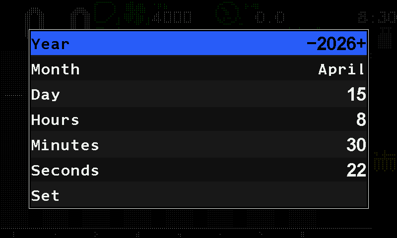
Die Felder für Datum und Uhrzeit. Tippen Sie auf ein Feld und wischen Sie nach rechts oder links, bis es den gewünschten Wert zeigt — ein Schritt je Wisch. Die Tage richten sich nach dem Monat.
Tippen Sie auf „Set“ und noch einmal darauf. Die Uhr übernimmt die neuen Werte, und das Menü „Settings“ erscheint wieder.
Verlassen Sie die Felder mit einem Tippen neben das Menü, ohne „Set“, bleibt die alte Zeit erhalten.
Sämaschinen-Parameter
Die Arbeitsbreite, die Modi für Aussaat und Düngung, die Fahrgasse, die Zuordnung von Sektionen zu Aktuatoren und Motoren und die beiden Kalibrierungen, bei denen die Maschine fahren muss.
„Settings“ (Einstellungen) → „Seeding machine parameters“ (Sämaschinen-Parameter). Der Punkt braucht die Ebene „Agronomist“ (Agronom) (Agronomenebene freischalten) und ist an einer Maschine ohne Geschwindigkeitssensor und ohne Fahrgassen-Aktuator verborgen. Welche Punkte er enthält, hängt vom Profil ab.
| Punkt | Werte |
|---|---|
| „Width, cm“ (Breite, cm) | 100 … 2500; Standard 560. Zahlenfeld. |
| „Mode of seeding“ (Modus der Aussaat) | „Flow“ (Durchfluss) / „Hybrid“ (Hybrid) / „Precise“ (Einzelkorn); Standard „Flow“. |
| „Mode of fertilizers“ (Modus der Düngung) | „Flow“ / „Hybrid“ / „Precise“. |
| „Mode of liq.fert.“ (Modus Flüssigdünger) | „Flow“ / „By area“ (nach Fläche). |
| „Tramline“ (Fahrgasse) | Untermenü. |
| „Relation of sensors to actuators“ (Zuordnung der Sensoren zu den Aktuatoren) | Öffnet den Zuordnungsbildschirm. |
| „Speed calibration“ (Geschwindigkeitskalibrierung) | Startet die Geschwindigkeitskalibrierung. |
| „Dispenser calibration“ (Dosiererkalibrierung) | „ALL“ (alle) oder die Nummer eines Dosierers; startet die Drehungskalibrierung. |
| „Reset to defaults“ (Auf Standard zurücksetzen) | Setzt Breite und Modi auf die Werkswerte zurück. Nur Ebene Service. |
Width, cm
Die Arbeitsbreite des Geräts. Die bearbeitete Fläche wird daraus berechnet, deshalb muss sie eingegeben werden. Tippen Sie den Punkt zweimal an oder wischen Sie darauf: Das Zahlenfeld öffnet sich. Geben Sie die Breite ein und tippen Sie auf „OK“; ein Tippen neben das Feld behält den alten Wert. Ohne Geschwindigkeitssensor ist der Punkt verborgen.
Enthält die Statistik schon Arbeit, verlangt das Panel zuerst, sie zu löschen — die Fläche der alten und der neuen Breite lassen sich nicht addieren.
Mode of seeding, Mode of fertilizers
| Modus | Einheit | Für |
|---|---|---|
| „Flow“ | Körner je Sekunde | Drillmaschinen |
| „Hybrid“ | Körner je Meter | Drillmaschinen |
| „Precise“ | Körner je Meter, mit gezählten Fehlstellen und Doppelbelegungen | Einzelkornsägeräte |
Der Dünger lässt sich nur auf „Precise“ stellen, solange die Aussaat „Precise“ ist. An einer Maschine mit zwei Gruppen von Kornsensoren heißen die beiden Punkte „Mode of seeding gr.A“ und „Mode of seeding gr.B“ (Modus der Aussaat Gruppe A und B); Gruppe B kann nur „Precise“ sein, solange Gruppe A es ist. Stellen Sie also Gruppe B auf „Flow“ oder „Hybrid“, bevor Sie Gruppe A aus „Precise“ nehmen.
Liquid fertilizer mode
„Flow“ (Liter je Minute) oder „By area“ (Liter je Hektar). Wird nur angezeigt, wenn im Profil kein Flüssigdünger-Pumpencontroller steht — mit einem Controller arbeitet das Panel nach Fläche.
Relation of sensors to actuators
Welche Sektionssensoren zu welchem Fahrgassen-Aktuator oder Dosierermotor gehören. Schaltet ein Aktuator seine Sektionen ab, wechseln deren Sensoren in die Fahrgassenüberwachung. Der Punkt wird nur angezeigt, wo es etwas zuzuordnen gibt: Fahrgassen-Aktuatoren oder Dosierermotoren, die nicht eins zu eins zu den Sektionssensoren gehören.

Eine Zuordnung ist ein Bereich von Sektionen, „Diapason start“ (Bereichsanfang) bis „Diapason end“ (Bereichsende) — gleiche Zahlen bedeuten eine einzelne Sektion. Bis zu vier Bereiche lassen sich einem Aktuator zuordnen. An einer Maschine mit Dosierermotoren hat der Bildschirm außerdem „Motors to sensors mapping“ (Zuordnung der Motoren zu den Sensoren).
Auf dem Bildschirm wechselt ein Wisch nach oben oder unten zwischen den Zeilen, ein Wisch nach rechts oder links bewegt sich entlang einer Zeile, und ein Zweifingertippen öffnet das Menü der gewählten Zelle — um einen Bereich hinzuzufügen oder „Remove diapason“ (Bereich entfernen). Berühren und halten Sie irgendwo auf dem Bildschirm, um die Zuordnung zu übernehmen.
Tramline
Ein Untermenü mit zwei Punkten: „Tramline“ („No“ / „Yes“) und „Tramline rhythm settings“ (Einstellungen des Fahrgassenrhythmus). Wird nur an einer Maschine angezeigt, die Fahrgassen anlegen kann. Einen Rhythmus einstellen: Fahrgassenrhythmus einstellen.
Speed calibration and Dispenser calibration
Die beiden Kalibrierungen, bei denen die Maschine fahren muss. Beide sind ohne Geschwindigkeitssensor verborgen. Wählen Sie „Dispenser calibration“ und wischen Sie nach rechts oder links, um den Dosierer zu wählen — oder „ALL“ für alle auf einmal —, dann tippen Sie noch einmal darauf, um zu starten.
Sensoreinstellungen
Wie Sie per Touch zu den Einstellungen eines Sensors gelangen, was sein Kontextmenü enthält und welche Kalibrierungen es gibt und wo.
Jeder Sensor, Aktuator und Motor der Maschine hat seine eigenen Einstellungen und seinen eigenen Statusbildschirm. Beide erreichen Sie über sein Kontextmenü. Die Parameter jeder Sensorart stehen in den Themen nach diesem.
Einen Sensor erreichen
Berühren und halten Sie das Gerät länger als eine halbe Sekunde:
- auf dem Startbildschirm — sein Symbol oder seine Säule im Diagramm;
- auf dem Motorbildschirm oder dem zweiten Startbildschirm — die Kachel eines Motors oder eines Fahrgassen-Aktuators.
Das Kontextmenü öffnet sich. Ein kurzes Tippen bewirkt nichts. Berühren und Halten auf einer kg/ha-Anzeige, auf dem Sollwert eines Diagramms oder auf einer leeren Stelle der rechten Spalte bewirkt etwas anderes — siehe Touchzonen und Gesten.

Das Kontextmenü
| Punkt | Was er tut | Ebene |
|---|---|---|
| „Information“ (Information) | Öffnet den Statusbildschirm dieses Geräts. Der Sensor-Statusbildschirm | Operator |
| „Disable control“ (Überwachung ausschalten) / „Enable control“ (Überwachung einschalten) | Nimmt das Gerät aus der Überwachung oder wieder hinein. Für den Geschwindigkeitssensor nicht angeboten. Sensor in die Überwachung nehmen oder herausnehmen | Operator |
| „Registers“ (Register) | Eine Rohansicht der Register des Geräts, für die Serviceabteilung. Nicht Teil irgendeines Ablaufs. Bei einem Motor oder dem Pumpencontroller heißt der Punkt „Electric motors“ (Elektromotoren) und öffnet den Diagnosebildschirm der Controller. | Agronomist |
| Die eigenen Punkte des Geräts | Zum Beispiel „Speed calibration“ (Geschwindigkeitskalibrierung) beim Geschwindigkeitssensor. | wie angegeben |
| Die Parameter | Welche Sie sehen, hängt von der Zugriffsebene ab. Den gewählten ändern Sie mit einem Wisch nach rechts oder links. | wie angegeben |
| „Reset to defaults“ (Auf Standard zurücksetzen) | Setzt die Parameter dieses Geräts auf die Werkswerte zurück. | Service |
Tippen Sie neben das Menü, um es zu verlassen. Geänderte Werte werden von selbst gespeichert.
Der Statusbildschirm
„Information“ öffnet den Statusbildschirm des Geräts: seine Identität, seine Verbindung, seine aktuellen Werte und seine aktiven Alarme. Wie Sie ihn lesen: Der Sensor-Statusbildschirm.
Kalibrierungen
Es gibt vier Kalibrierungen. Sie sind keine Varianten eines Ablaufs: Jede schreibt andere Parameter und wird auf anderem Weg erreicht.
| Was sie richtigstellt | Wo | Ebene | Maschine |
|---|---|---|---|
| Fahrgeschwindigkeit — überschreibt „Factor, %“ (Faktor, %) des Geschwindigkeitssensors. Geschwindigkeitssensor kalibrieren | „Settings“ (Einstellungen) → „Seeding machine parameters“ (Sämaschinen-Parameter) → „Speed calibration“, oder „Speed calibration“ im Kontextmenü des Geschwindigkeitssensors | Agronomist im Menü, Operator im Kontextmenü | fährt 100 m |
| Dosierer-Drehung — „Wheel, pulses“ (Rad, Impulse) gegen „Dispenser pulses“ (Dosiererimpulse). Dosierer-Drehung kalibrieren | „Settings“ → „Seeding machine parameters“ → „Dispenser calibration“ (Dosiererkalibrierung) | Agronomist | Rad und Dosierwelle werden gemeinsam gedreht |
| Dosierer-Masse — „Weight, gr“ (Gewicht, g) und „Weight, pulses“ (Gewicht, Impulse). Dosierer nach Gewicht kalibrieren | Kontextmenü des Dosierersensors | Operator | steht |
| Masse der Dosierwalze — „Weight, gr“ und „Rotations“ (Umdrehungen) eines Motors. Dosierermotor nach Gewicht kalibrieren | Kontextmenü des Dosierer-Elektromotors | Operator | steht |
Die Punkte „Speed calibration“ im Kontextmenü und die Motorkalibrierung werden nur angeboten, solange die Maschine steht. Die beiden Massekalibrierungen liegen auf der Ebene „Operator“, weil sie bei jedem Produktwechsel wiederholt werden müssen.
Der Sensor-Statusbildschirm
Wie Sie den Statusbildschirm eines Sensors lesen — Kanal, Adresse, Typ, Verbindungszustand, aktuelle Werte und aktive Alarme —, was jede Sensorart darauf zeigt und wie Sie sich per Touch darin bewegen.
Sie erreichen ihn über „Information“ (Information) im Kontextmenü eines Geräts (Sensoreinstellungen). Er zeigt, was das Panel über ein Gerät weiß.
Der Bildschirm

- „Channel #“ (Kanal Nr.) — das wievielte Gerät der Gesamtliste dies ist.
- Die Markierungen beiderseits der Kanalnummer. Wischen Sie nach links für das vorige, nach rechts für das nächste Gerät. Der Bildschirm bleibt offen.
- „Address:“ (Adresse:) — die Adresse, unter der das Gerät antwortet. In dieser Anleitung nicht angegeben.
- „Type:“ (Typ:) — die Art des Geräts und seine Nummer, hier Behältersensor 1.
- „Link:“ (Verbindung:) — der Zustand der Kommunikation. Tabelle unten.
- Die Werte dieser Geräteart — hier der Pegel am Eingang eines Behältersensors. Tabelle unten.
- „Alarm 1 from 1“ (Alarm 1 von 1) — wie viele Alarme dieses Geräts aktiv sind.
- Der Name des Alarms — der erste der aktiven Alarme.
Manche Geräte zeigen eine weitere Zeile, „Unit:“ (Einheit:) — die Einheit, an der das Gerät angeschlossen ist, zum Beispiel „Control panel“ (Bedienpanel) beim Geschwindigkeitssensor.
| Geste | Was sie tut |
|---|---|
| Wisch nach rechts / links | Nächstes / voriges Gerät — der Bildschirm bleibt offen. |
| Wisch nach oben oder Dreifingertippen | Zurück dorthin, wo Sie herkamen. |
Verbindungszustände
| Zustand | Bedeutung |
|---|---|
| „Normal“ (Normal) | Das Gerät antwortet. |
| „Not controlled“ (Nicht überwacht) | Das Gerät ist aus der Überwachung genommen: Weder die Kommunikation noch sonst etwas wird überwacht. |
| „No connection“ (Keine Verbindung) | Das Gerät antwortet nicht. Rot. |
| „Wrong device type!“ (Falscher Gerätetyp) | Etwas antwortet, aber nicht die Geräteart, die das Profil erwartet. Rot. |
| „IMITATION“ (Simulation) | Nur Geschwindigkeitssensor: Die Geschwindigkeit ist simuliert, nicht gemessen. Gelb. |
Die Werte werden nur gezeichnet, solange das Gerät unter Überwachung steht, antwortet und von der erwarteten Art ist. Ein Gerät außerhalb der Überwachung zeigt seine Identität und sonst nichts.
Was jede Sensorart zusätzlich zeigt

| Gerät | Was der Bildschirm zeigt |
|---|---|
| Geschwindigkeitssensor | Die Impulsfrequenz F= in Hz; bei zwei Geschwindigkeitssensoren F1= und F2=. Darunter die beiden Grenzen „Min speed, km/h“ (Mindestgeschwindigkeit) und „Max speed, km/h“ (Höchstgeschwindigkeit). An einer Maschine, die ein Produkt nach Masse mit Elektromotoren dosiert, sind die Grenzen jene, die die Motoren halten können, eingeengt durch die beiden Einstellungen; eine Grenze, die die Einstellungen nicht erfüllen können, steht in Rot als Ungleichung. Ohne solche Motoren wird eine auf null gestellte Grenze als ---- angezeigt, ausgeschaltet. |
| Behältersensor | Pin: und der Pegel am Eingang, "0" oder "1". |
| Sensor der Dosierwelle | F= in Hz, mit drei Nachkommastellen. |
| Gebläsesensor | F= in Hz. |
| Drucksensor | P= in kPa. |
| Kornsensor, Trockendüngersensor | Status: und einer von acht Zuständen — unten. |
| Flüssigdünger-Durchflusssensor | Status: Working, oder Working:Tramline im Fahrgassenmodus; darunter Flow= in l/min. |
| Arbeitsstellungssensor | „Position: Working“ (Position: Arbeit) oder „Position: Transporting“ (Position: Transport) und Pin: mit dem Pegel am Eingang. |
| Zündung, Öldruck, Batterieladung, Kraftstoffstand, Luftfilter | Pin: und der Pegel am Eingang, "0" oder "1". |
| Spuranzeigersensor | Nur die gemeinsamen Zeilen. |
| Fahrgassen-Aktuator | Status: Pulled in (eingezogen), Pulled out (ausgefahren), Working (in Bewegung), solange sich der Schieber bewegt, oder Unknown (unbekannt). |
| Dosierer-Elektromotor | Status: Working, oder Faulty (gestört), solange ein Alarm des Motors aktiv ist; dann „Last fault:“ (Letzte Störung:) mit dem Code des Controllers, falls es eine gegeben hat (Codes). Ein Universalcontroller ergänzt IN1[ ] IN2[ ] IN3[ ] mit den Pegeln an seinen drei Eingängen. |
| Flüssigdünger-Pumpencontroller | Status: Working oder Faulty. Bei einer Störung „Last fault:“ und der Code. Ohne Störung: Flow= in l/min, Load= (Last) in Prozent und Pressure sensor: No, wenn keiner da ist, sonst Pressure sensor= in bar mit dem Rohsignal in mA in Klammern. Striche stehen für einen Wert, den der Controller nicht liefern kann. |
Die acht Zustände eines Korn- oder Düngersensors
| Status | Bedeutung |
|---|---|
| Working | Normal. |
| Working:Tramline | Normal; der Sensor ist für den aktuellen Durchgang im Fahrgassen-Überwachungsmodus, oder seine Produktausbringung ist ausgeschaltet. |
| Configuring | Der Sensor hat neue Einstellungen erhalten und übernimmt sie. |
| Calibration in progress | Der Sensor führt seine Erstkalibrierung durch. Das dauert einige Sekunden. |
| Clogged | Der optische Kanal ist blockiert — am ehesten ein verstopftes Saatrohr. Rot. |
| Light struck | Zu viel Licht fällt in den optischen Kanal; der Sensor kann falsch zählen. Rot. |
| Faulty | Der Sensor meldet eine eigene Störung. Rot. |
| Unknown | Eine andere Störung, die sich nicht bestimmen lässt. Rot. |
Geschwindigkeitssensor
Die Parameter des Fahrgeschwindigkeitssensors — Impulse, Raddurchmesser, Faktor, Geschwindigkeitsgrenzen, Simulation, der eingebaute GPS-Empfänger — und was das Einstellen der Simulation von selbst bewirkt.
Alles, was das Panel zählt — Fläche, Mengen, Abweichungen —, wird aus der zurückgelegten Strecke berechnet. Ein Geschwindigkeitssensor, der um ein Zehntel danebenliegt, macht jeden anderen Wert des Panels um ein Zehntel falsch. Stellen Sie zuerst seine Parameter ein und kalibrieren Sie ihn dann (Geschwindigkeitssensor kalibrieren).
Berühren und halten Sie das Geschwindigkeitsfeld auf dem Startbildschirm, um das Kontextmenü des Geschwindigkeitssensors zu öffnen (Sensoreinstellungen). Alle seine Parameter brauchen die Ebene „Agronomist“ (Agronom) (Agronomenebene freischalten). Das Menü bietet außerdem „Speed calibration“ (Geschwindigkeitskalibrierung) direkt unter „Information“ (Information) an, solange die Maschine steht.

| Parameter | Was er tut | Bereich, Standard |
|---|---|---|
| „Pulses“ (Impulse) | Die Anzahl der Impulse, die der Sensor je Raddrehung gibt. | 1 … 1000; 6 |
| „Count period“ (Zählperiode) | Die Anzahl der Impulse, über die das Panel mittelt, bevor es die Geschwindigkeit neu berechnet; eine plötzliche Geschwindigkeitsänderung wird sofort übernommen. Verborgen, wenn der Sensor an einem Eingangsgerät sitzt. | 1 … 1000; 1 |
| „Diameter, cm“ (Durchmesser, cm) | Der Raddurchmesser. | 10 … 200; 60 |
| „Factor, %“ (Faktor, %) | Eine Korrektur der Strecke je Raddrehung: Das Panel zählt den Radumfang mal diesen Faktor. 100 nimmt den Umfang, wie er ist. Die Geschwindigkeitskalibrierung überschreibt ihn. Zahlenfeld. | 1 … 10000; 100 |
| „Seeding criteria“ (Aussaatkriterium) | „Yes“ (Ja) — die Sektionsalarme werden nur überwacht, solange die Maschine fährt; „No“ (Nein) — auch im Stand. Verborgen und immer „Yes“ im Modus „Precise“ (Einzelkorn) und an einer Maschine mit Dosierermotoren oder Pumpe. | „No“ / „Yes“; „Yes“ |
| „Min speed, km/h“ (Mindestgeschwindigkeit, km/h) | Unterhalb dieser Geschwindigkeit zeigt der Startbildschirm „FASTER“ (schneller). „No“ (0) schaltet die Prüfung aus. | 0 … 99; „No“ |
| „Max speed, km/h“ (Höchstgeschwindigkeit, km/h) | Oberhalb dieser Geschwindigkeit zeigt der Startbildschirm „SLOWER“ (langsamer). „No“ (0) schaltet die Prüfung aus. | 0 … 99; „No“ |
| „Imitation, km/h“ (Simulation, km/h) | Eine simulierte Geschwindigkeit. „No“ (0) — der echte Sensor wird verwendet. | 0 … 20; „No“ |
| „GPS“ | Die Geschwindigkeit von einem externen Empfänger nehmen. Wird nur angezeigt, wenn einer verwendet wird. | „No“ / „Yes“ |
| „Width, cm“ (Breite, cm) | Die Spurweite zwischen den zwei Rädern einer Anlage mit zwei Sensoren. Wird nur angezeigt, wenn im Profil „Input device (2)“ (Eingangsgerät, zwei Sensoren) steht. | 0 … 10000; 280 |
| „GPS internal“ (internes GPS) | Die Geschwindigkeit vom im Panel eingebauten Empfänger nehmen. | „No“ / „Yes“; „No“ |
Das Minimum muss unter dem Maximum liegen, sonst löst das Panel „Error in settings of Min/Max“ (Fehler in den Einstellungen von Min/Max) aus (Alarme des Geschwindigkeitssensors). Ist „GPS internal“ eingeschaltet, zeigt das Satellitensymbol auf dem Startbildschirm den Empfang, und weniger als vier Satelliten lösen „Poor GPS signal quality“ (Schlechte GPS-Signalqualität) aus — siehe GPS.
Die simulierte Geschwindigkeit wird außerdem innerhalb des Bereichs gehalten, den die Dosierung zulässt: Ein Wert außerhalb wird beim Einstellen auf die nächste Grenze zurückgezogen. Solange die Geschwindigkeit simuliert wird, zeigt der Statusbildschirm des Sensors „IMITATION“ in Gelb. Arbeiten ohne Geschwindigkeitssensor: Ohne Geschwindigkeitssensor arbeiten.
Der Statusbildschirm
Der Statusbildschirm zeigt die Impulsfrequenz F= in Hz (bei zwei Sensoren F1= und F2=) und die beiden geltenden Grenzen. Siehe Der Sensor-Statusbildschirm.
Geschwindigkeitssensor kalibrieren
Fahren Sie eine markierte Strecke von 100 m, damit das Panel den Faktor des Fahrgeschwindigkeitssensors korrigiert.
Die Kalibrierung misst eine bekannte Strecke und korrigiert „Factor, %“ (Faktor, %) des Geschwindigkeitssensors, sodass die Strecke des Panels mit ihr übereinstimmt. Stellen Sie vor dem Start „Pulses“ (Impulse) und „Diameter, cm“ (Durchmesser, cm) des Sensors ein (Geschwindigkeitssensor) — die Kalibrierung korrigiert die Strecke je Umdrehung; die Impulse kann sie nicht erfinden.
Es gibt zwei Wege:
- „Settings“ (Einstellungen) → „Seeding machine parameters“ (Sämaschinen-Parameter) → „Speed calibration“ (Geschwindigkeitskalibrierung) — auf der Ebene „Agronomist“ (Agronom) (Agronomenebene freischalten);
- „Speed calibration“ im Kontextmenü des Geschwindigkeitssensors, solange die Maschine steht. Auf der Ebene „Operator“ (Fahrer) fragt das Panel zuerst nach der PIN der Agronomenebene; auf der Ebene „Agronomist“ fragt es „Are you sure?“ (Sind Sie sicher?) — tippen Sie auf „Yes“ (Ja).
Stecken Sie auf ebenem Boden 100 m ab und stellen Sie die Maschine an den Anfang.
Tippen Sie auf „Speed calibration“ und noch einmal darauf; aus dem Kontextmenü heraus beantworten Sie zuerst die PIN-Abfrage oder die Frage. Das Panel zeigt „Pass 100m and press STOP“ (100 m fahren und STOP drücken) mit einer einzigen Taste „STOP“.
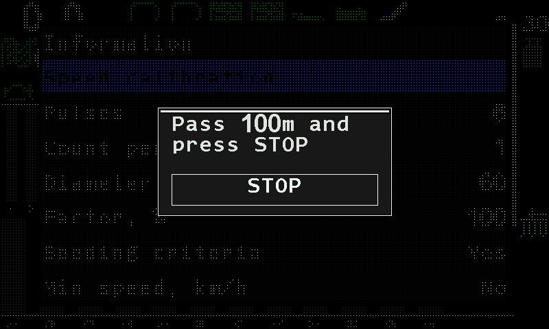
Das Fenster der Geschwindigkeitskalibrierung. Fahren Sie die markierte Strecke und halten Sie am Ende an.
Tippen Sie auf „STOP“. Das Panel zeigt „Done“ (Fertig) und schließt das Fenster von selbst.

Das Panel bestätigt die Kalibrierung.
Die Strecke ist fest auf 100 m eingestellt; das Panel fragt nicht danach. Es wartet nach „STOP“ eine halbe Sekunde, bevor es den Zähler liest, und prüft in diesem Moment die Verbindung noch einmal — ein Sensor, der auf dem letzten Meter ausfällt, wird als verlorene Verbindung gemeldet, nicht als schlechtes Ergebnis.
Wenn es nicht funktioniert
| Das Panel zeigt | Bedeutung |
|---|---|
| „No speed sensor“ (Kein Geschwindigkeitssensor) | Das Profil enthält keinen Geschwindigkeitssensor. Die Kalibrierung startet nicht. |
| „Connection lost with the sensor! Calibration canceled!“ (Verbindung zum Sensor verloren! Kalibrierung abgebrochen!) | Der Sensor antwortet nicht. |
| „Sensor not controlled! Calibration canceled!“ (Sensor nicht überwacht! Kalibrierung abgebrochen!) | Der Sensor ist aus der Überwachung genommen. Nehmen Sie ihn in die Überwachung (Sensor in die Überwachung nehmen oder herausnehmen). |
| „FAILURE! The tractor did not move!“ (Fehler! Der Traktor hat sich nicht bewegt!) | Der Zähler hat sich nicht bewegt: Der Sensor gab überhaupt keine Impulse ab — keine ungenaue Messung, gar keine. Prüfen Sie Sensor und Kabel. |
| „Calibration canceled!“ (Kalibrierung abgebrochen!) | Das Fenster wurde anders als mit „STOP“ geschlossen. Nichts hat sich geändert. |
Kornsensoren und Trockendüngersensoren
Die gemeinsamen Parameter einer Gruppe optischer Korn- oder Trockendüngersensoren — Fraktion, Empfindlichkeit, Mengenfehler, Fehlstellen und Doppelbelegungen, Anteil säender Reihen, Fahrgassentoleranz — und der Schalter für die Produktausbringung je Sensor.
Kornsensoren und Trockendüngersensoren sind dieselbe Geräteart und teilen sich einen Parametersatz. Fast alles hier gilt für die ganze Gruppe: Ändern Sie es an einem Sensor, ändert es sich für alle Sensoren der Gruppe. Nur zwei Dinge werden je Sensor eingestellt — ob er unter Überwachung steht („Disable control“ (Überwachung ausschalten) / „Enable control“ (Überwachung einschalten)) und „Product application“ (Produktausbringung). Berühren und halten Sie die Säule eines beliebigen Sensors der Gruppe, um sein Kontextmenü zu öffnen (Sensoreinstellungen).
| Parameter | Was er tut | Bereich, Standard | Ebene |
|---|---|---|---|
| „Product application“ (Produktausbringung) | Je Sensor. „No“ (Nein) — die Reihe bringt absichtlich nichts aus, und das Panel überwacht sie wie eine abgeschaltete Fahrgassenreihe. Wird nicht angeboten, wenn jeder Sensor der Gruppe seinen eigenen Dosierermotor hat. | „No“ / „Yes“ (Ja) | Agronomist |
| „Sensitivity“ (Empfindlichkeit) | Die Empfindlichkeit des optischen Kanals. Wird nur für die Sensortypen angezeigt, die sie verwenden. | 1 … 120; 80 | Agronomist |
| „Fraction“ (Fraktion) | Der Filter des Sensors für die Größe der Produktpartikel. Die Alarme zu Menge, Fehlstellen und Doppelbelegungen sagen Ihnen, in welche Richtung Sie ihn ändern. | 1 … 100; 10 | Operator |
| „Correction“ (Korrektur) | Eine Korrektur des Erfassungsfensters des optischen Kanals. Wird nur für den Sensortyp angezeigt, der sie verwendet. | 100 … 3300, Schritte von 10; 300 | Operator |
| „Rate error,%“ (Mengenfehler, %) | Wie weit die tatsächliche Menge von der Sollmenge abweichen darf, bevor ein Alarm kommt. Nur Modi „Hybrid“ (Hybrid) und „Precise“ (Einzelkorn). | 5 … 95, Schritte von 5; 50 | Agronomist |
| „Doubles error,%“ (Fehler Doppelbelegungen, %) | Der Anteil an Doppelbelegungen, der einen Alarm auslöst. „No“ (0) schaltet den Alarm aus. Nur im Modus „Precise“. | 0 … 95; „No“ | Agronomist |
| „Skips error,%“ (Fehler Fehlstellen, %) | Der Anteil an Fehlstellen, der einen Alarm auslöst. „No“ (0) schaltet den Alarm aus. Nur im Modus „Precise“. | 0 … 95; „No“ | Agronomist |
| „Recalculation,m“ (Neuberechnung, m) / „Recalculation,sec“ (Neuberechnung, s) | Das Wegstück, über das Fehlstellen und Doppelbelegungen gezählt werden — in Metern an einer Maschine mit Geschwindigkeitssensor, in Sekunden ohne einen. | 10 … 50; 20 | Operator |
| „Percent of sowing,%“ (Anteil säender Reihen, %) | Der Anteil der überwachten Kornsensoren, die Saatgut sehen müssen, bevor das Panel entscheidet, dass die Aussaat begonnen hat. Nur Kornsensoren; verborgen an einer Maschine mit Dosierermotoren oder Pumpe. | 5 … 80, Schritte von 5; 20 | Agronomist |
| „Toler.sowing to tramline,%“ (Toleranz Aussaat zur Fahrgasse, %) | Wie viel eine Sektion, die für die Fahrgasse abgeschaltet sein sollte, noch ausbringen darf. | 0 … 50; 20 | Agronomist |
| „Group start address“ (Startadresse der Gruppe) | Nur Düngersensoren. Wird bei der Inbetriebnahme eingestellt — siehe Gerätekonfiguration. | — | Agronomist |
Die Sollmengen und die Alarmschwelle sind keine Menüpunkte: Sie werden während der Arbeit auf dem Startbildschirm geändert — siehe Sollmenge ändern. Der Statusbildschirm dieser Sensoren zeigt einen von acht Zuständen — siehe Der Sensor-Statusbildschirm. Meldet ein Sensor „Clogged“ (verstopft), „Light struck“ (Lichteinfall) oder „Broken“ (defekt): Sensor verstopft oder defekt.
Fraktion je Kultur
Richten Sie sich nach der Korngröße:
| Kultur | „Fraction“ |
|---|---|
| Raps | 1 – 5 |
| Weizen | 5 – 10 |
| Mais | 10 – 30 |
| Sonnenblume | 10 – 30 |
Stellen Sie bei pneumatischen Drillmaschinen 1 ein, gleich welche Kultur. Eine zu hohe Fraktion lässt kleine Körner aus der Zählung verschwinden – das Panel meldet dann eine zu niedrige Menge.
Flüssigdüngersensoren und Pumpencontroller
Die Parameter der Flüssigdünger-Sektionssensoren und des Flüssigdünger-Pumpencontrollers mit Bereichen und Standardwerten.
Flüssigdünger wird von Durchflusssensoren in den Sektionen überwacht; an manchen Maschinen steuert zusätzlich ein Pumpencontroller die Pumpe auf die Menge. Berühren und halten Sie das Flüssigdüngerdiagramm oder die Pumpenanzeige, um das Kontextmenü zu öffnen (Sensoreinstellungen).
Flüssigdünger-Sektionssensoren
| Parameter | Was er tut | Bereich, Standard | Ebene |
|---|---|---|---|
| „Pulses per liter“ (Impulse je Liter) | Wie viele Impulse der Durchflusssensor je Liter gibt. Zahlenfeld. Verborgen, wenn im Profil ein Pumpencontroller steht. | 1 … 60000; 5000 | Agronomist |
| „Rate error,%“ (Mengenfehler, %) | Wie weit die tatsächliche Menge von der Sollmenge abweichen darf, bevor ein Alarm kommt. | 5 … 95, Schritte von 5; 50 | Agronomist |
| „Tolerable leak to tramline,%“ (Zulässiger Austritt zur Fahrgasse, %) | Wie viel eine für die Fahrgasse abgeschaltete Sektion noch ausbringen darf. | 0 … 50; 20 | Agronomist |
| „Group start address“ (Startadresse der Gruppe) | Siehe Gerätekonfiguration. | — | Agronomist |
Die beiden Sollmengen dieser Sensoren — eine für den Modus „Flow“ (Durchfluss), eine für den Modus „By area“ (nach Fläche) — haben keinen Menüpunkt. Sie werden auf dem Startbildschirm eingestellt wie jede andere Sollmenge (Sollmenge ändern). Zum Modus selbst: Sämaschinen-Parameter.
Flüssigdünger-Pumpencontroller
| Parameter | Was er tut | Bereich, Standard | Ebene |
|---|---|---|---|
| „Pulses per liter“ | Die Impulse der Durchflussmessung der Pumpe je Liter; das Panel berechnet daraus das gepumpte Volumen. Zahlenfeld. | 100 … 10000, Schritte von 10; 3000 | Agronomist |
| „Pressure sensor“ (Drucksensor) | Der Eingang des Controllers, an dem der 4–20-mA-Drucksensor der Leitung angeschlossen ist; „No“ (Nein) — keiner. | „No“, 1, 2; „No“ | Agronomist |
| „Pressure boundary, Bar“ (Druckgrenze, bar) | Der Druck, den der Sensor am oberen Ende seines Bereichs (20 mA) meldet. Stellen Sie ihn nach dem Datenblatt des Sensors ein. | 0,0 … 50,0; 16,0 | Agronomist |
| „Max pressure, Bar“ (Höchstdruck, bar) | Darüber löst der Controller „High pressure“ (Hoher Druck) aus. 0,0 schaltet den Alarm aus. | 0,0 … 50,0; 0,0 | Operator |
| „Section control D.I.“ (Sektionssteuerung, digitaler Eingang) | Ein Eingang des Controllers, der die Pumpe abschaltet: „Shut off(0)“ (Abschalten bei 0), wenn der Eingang 0 liest, „Shut off(1)“, wenn er 1 liest; „No“ — nicht verwendet. | „No“ / „Shut off(0)“ / „Shut off(1)“ | Agronomist |
| „Start delay,mS“ (Startverzögerung, ms) | Die kürzeste Zeit in Millisekunden zwischen zwei Starts der Pumpe. | 0 … 500, Schritte von 5; 30 | Service |
| „Group start address“ | Siehe Gerätekonfiguration. | — | Agronomist |
Die beiden Druckwerte werden mit einer Nachkommastelle eingegeben. Mit einem Pumpencontroller wird die Flüssigmenge immer nach Fläche geregelt.
Der Statusbildschirm des Pumpencontrollers zeigt den Durchfluss, die Pumpenlast und den Leitungsdruck — siehe Der Sensor-Statusbildschirm. Alarme: Flüssigdüngerpumpe, Mengenalarme.
Sensor der Dosierwelle
Die Parameter des Sensors der Dosierwelle — Drehungsüberwachung gegen das Rad oder Gewichtsüberwachung nach der ausgebrachten Masse — mit Bereichen und Standardwerten.
Der Sensor der Dosierwelle zählt die Umdrehungen eines Dosierers, der vom Bodenrad angetrieben wird. Das Panel kann ihn auf zwei Arten überwachen: nach seiner Drehung gegen den Geschwindigkeitssensor oder nach der Masse des Produkts, das er ausbringt. Berühren und halten Sie das Symbol der Dosiereinheit auf dem Startbildschirm, um sein Kontextmenü zu öffnen (Sensoreinstellungen).
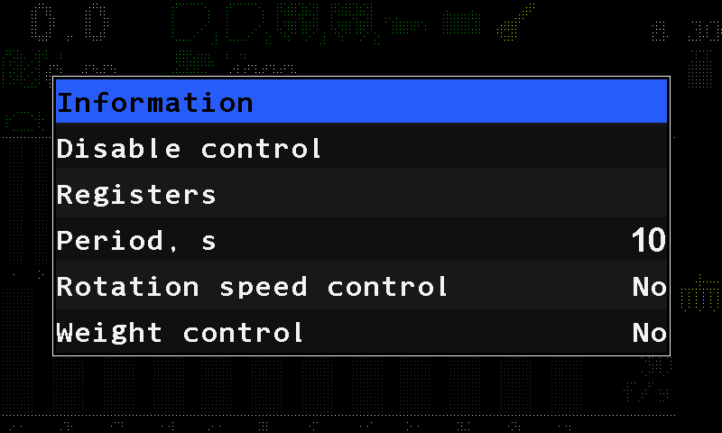
| Parameter | Was er tut | Bereich, Standard | Ebene |
|---|---|---|---|
| „Period, s“ (Periode, s) | Wie lange die Welle ohne Impuls bleiben darf, bevor sie als stehend gilt — und wie lange das Panel nach Beginn der Aussaat oder der Fahrt wartet, bevor es Drehung erwartet. | 1 … 60; 10 | Operator |
| „Rotation speed control“ (Drehzahlüberwachung) | Die Wellendrehung gegen die Fahrgeschwindigkeit überwachen. | „No“ (Nein) / „Yes“ (Ja); „No“ | Agronomist |
| „Wheel, pulses“ (Rad, Impulse) | Wird durch die Drehungskalibrierung eingestellt. Wird bei eingeschalteter Drehungsüberwachung angezeigt. | 1 … 65535; 100 | Agronomist |
| „Dispenser pulses“ (Dosiererimpulse) | Wird durch die Drehungskalibrierung eingestellt. Wird bei eingeschalteter Drehungsüberwachung angezeigt. | 1 … 65535; 100 | Agronomist |
| „Maximum error, %“ (Höchstabweichung, %) | Wie weit die Wellendrehzahl von der Drehzahl abweichen darf, die die Fahrgeschwindigkeit verlangt, bevor „Low speed of rotation“ (Drehzahl zu niedrig) oder „High speed of rotation“ (Drehzahl zu hoch) kommt. Wird bei eingeschalteter Drehungsüberwachung angezeigt. | 1 … 50; 10 | Agronomist |
| „Weight control“ (Gewichtsüberwachung) | Den Dosierer nach der ausgebrachten Masse statt nach seiner Drehung überwachen. | „No“ / „Yes“; „No“ | Agronomist |
| „Type of product“ (Produktart) | Welches der vier Produkte dieser Dosierer dosiert. Wird bei eingeschalteter Gewichtsüberwachung angezeigt. | „Product 1“ … „Product 4“ (Produkt 1 … 4) | Agronomist |
| „Weight, gr“ (Gewicht, g) / „Weight, pulses“ (Gewicht, Impulse) | Beide werden durch die Kalibrierung nach Gewicht eingestellt. Wird bei eingeschalteter Gewichtsüberwachung angezeigt. Zahlenfeld. | je 1 … 65535 | Agronomist |
Ohne Geschwindigkeitssensor im Profil wird nur „Period, s“ angeboten — beide Überwachungsarten brauchen die Fahrgeschwindigkeit. Ist „Weight control“ eingeschaltet, enthält das Kontextmenü zusätzlich „Dispenser calibration(weight)“ (Dosiererkalibrierung nach Gewicht).
Kalibrierungen
- Drehung — für „Rotation speed control“: Dosierer-Drehung kalibrieren.
- Masse — für „Weight control“; wiederholen Sie sie bei jedem Produktwechsel: Dosierer nach Gewicht kalibrieren.
Der Statusbildschirm zeigt die Impulsfrequenz der Welle F= in Hz mit drei Nachkommastellen. Seine Alarme: Gebläse oder Dosierwelle: Drehzahlalarme, und bei Gewichtsüberwachung Dosierung nach Gewicht.
Dosierer-Drehung kalibrieren
Drehen Sie Antriebsrad und Dosierwelle gemeinsam, damit das Panel lernt, wie viele Wellenimpulse zu den Radimpulsen gehören.
Diese Kalibrierung bringt dem Panel bei, wie viele Impulse der Dosierwelle zu den Radimpulsen gehören, damit es eine stehende oder durchrutschende Welle von einer fahrenden Maschine unterscheiden kann. Sie ist die Grundlage von „Rotation speed control“ (Drehzahlüberwachung) des Dosierersensors (Sensor der Dosierwelle). Sie schreibt „Wheel, pulses“ (Rad, Impulse) und „Dispenser pulses“ (Dosiererimpulse).
Bevor Sie beginnen: Der Geschwindigkeitssensor und jeder beteiligte Dosierer müssen unter Überwachung stehen und antworten. Sie brauchen die Ebene „Agronomist“ (Agronom) (Agronomenebene freischalten). Halten Sie alles bereit, um Rad und Dosierwellen zu drehen: Einmal gestartet, läuft die Kalibrierung, bis das Panel sein Ergebnis hat.
Öffnen Sie „Settings“ (Einstellungen) → „Seeding machine parameters“ (Sämaschinen-Parameter). Tippen Sie auf „Dispenser calibration“ (Dosiererkalibrierung) und wischen Sie nach rechts oder links bis zur Nummer des Dosierers — oder zu „ALL“ (alle) für alle auf einmal.
Tippen Sie noch einmal auf „Dispenser calibration“. Das Panel zeigt „Calibration“ (Kalibrierung) und einen Fortschrittsbalken.
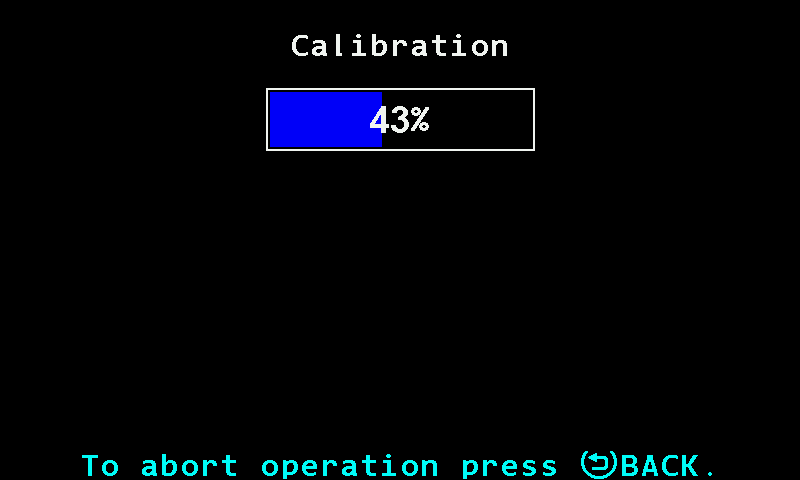
Der Fortschrittsbalken der Dosiererkalibrierung. Drehen Sie Antriebsrad und Dosierwelle gemeinsam — von Hand oder durch Fahren der Maschine. Der Balken füllt sich, während die Zähler steigen.
Drehen Sie weiter, bis der Balken 100 % erreicht. Das geschieht, wenn der Geschwindigkeitssensor und jeder beteiligte Dosierer je mindestens 100 Impulse gegeben haben. Der Balken folgt dem, der am weitesten zurückliegt — ein Dosierer, der sich nicht dreht, hält ihn bei null.
Bei 100 % piept das Panel einmal und zeigt „Stop rotation!“ (Drehung stoppen). Halten Sie alles an.
Das Panel wartet, bis sich zwei Sekunden lang kein Zähler verändert hat, schreibt dann das Ergebnis und zeigt „Done“ (Fertig).
Lassen Sie die Kalibrierung bis zum Ende laufen. Ist beim Start ein beteiligter Sensor aus der Überwachung genommen oder antwortet er unterwegs nicht mehr, endet die Kalibrierung mit „Sensor not controlled! Calibration canceled!“ (Sensor nicht überwacht! Kalibrierung abgebrochen!) oder „Connection lost with the sensor! Calibration canceled!“ (Verbindung zum Sensor verloren! Kalibrierung abgebrochen!), und nichts wird geschrieben.
Dosierer nach Gewicht kalibrieren
Drehen Sie einen bodenradgetriebenen Dosierer in einen Behälter und wiegen Sie das Produkt, damit das Panel die Menge in Kilogramm je Hektar überwachen kann.
Diese Kalibrierung speichert, wie viele Gramm der Dosierer je Wellenimpuls abgibt — „Weight, gr“ (Gewicht, g) und „Weight, pulses“ (Gewicht, Impulse) des Dosierersensors. Wiederholen Sie sie bei jedem Produktwechsel. Sie erfolgt im Stand, auf der Ebene „Operator“ (Fahrer); das Panel hebt sich für die Dauer der Kalibrierung selbst auf „Agronomist“ (Agronom) und setzt die Ebene beim Verlassen zurück.
Sie brauchen: einen Behälter, der 2 bis 60 kg des Produkts fasst, und eine Waage.
Der Punkt ist nur da, wenn „Weight control“ (Gewichtsüberwachung) für diesen Dosierer eingeschaltet ist (Sensor der Dosierwelle). Jeder Schritt ist ein Tippen auf eine Taste des Bildschirms.
Berühren und halten Sie das Symbol der Dosiereinheit auf dem Startbildschirm. Tippen Sie auf „Dispenser calibration(weight)“ (Dosiererkalibrierung nach Gewicht) und noch einmal darauf. Der erste Bildschirm listet die Sollmengen der verwendeten Produkte in kg/ha; das Produkt dieses Dosierers ist markiert.

Der erste Bildschirm der Kalibrierung nach Gewicht. Tippen Sie auf „Calibrate dispenser N“ (Dosierer N kalibrieren). Lässt sich der Dosierer nicht kalibrieren, steht dort stattdessen eine rote Zeile mit dem Grund: „Not controlled“ (Nicht überwacht), „No connection“ (Keine Verbindung) oder „FAILURE“ (Fehler). „Exit“ (Beenden) verlässt den Bildschirm.
Der zweite Bildschirm nennt die Vorbereitung. Wiegen Sie den leeren Behälter und notieren Sie das Gewicht.
Füllen Sie den Saatgutbehälter mit dem Produkt und stellen Sie den leeren Behälter unter den Dosierer.
Drehen Sie den Rotor, bis seine Zellen gefüllt sind. Das ist wichtiger, als es aussieht: Ein Rotor mit leeren Zellen gibt in den ersten Umdrehungen zu wenig ab, und dieser Fehler landet im gespeicherten Wert.
Tippen Sie auf „Go to calibration“ (Zur Kalibrierung). „Cancel“ (Abbrechen) führt stattdessen zum ersten Bildschirm zurück. Der dritte Bildschirm zählt „Impulses“ (Impulse) und dreht ein Rotorsymbol, während sie eintreffen.
Leeren Sie den Behälter und stellen Sie ihn wieder unter den Dosierer.
Drehen Sie den Dosierrotor und füllen Sie den Behälter so weit wie möglich — nicht weniger als 2 kg und nicht mehr als 60 kg.
Tippen Sie auf „Complete“ (Abschließen). Die Taste erscheint erst nach mehr als zehn Impulsen. „Cancel“ fragt „Are you sure?“ (Sind Sie sicher?), bevor die Messung verworfen wird.
Wiegen Sie den gefüllten Behälter. Das Zahlenfeld verlangt „Enter the difference of the filled and empty container in grams“ (Differenz aus vollem und leerem Behälter in Gramm eingeben). Geben Sie das Gewicht des Produkts allein ein — 2000 bis 60000 g; das Feld schlägt 10000 vor — und tippen Sie auf „OK“. Das Panel speichert „Weight, gr“ und „Weight, pulses“.
Ein Gewicht außerhalb von 2000 … 60000 g wird nicht abgelehnt: Das Panel nimmt die nächste Grenze. Wiegen Sie sorgfältig und bleiben Sie im Bereich.
Dosierer-Elektromotor
Die Parameter eines elektrischen Dosiermotors — Löcher in der Scheibe, Übersetzung, Drehrichtung, Rücklauf bei Blockade, Produkt, Kalibrierwerte, Drehzahlfenster und Kalibriertaste — mit Bereichen, Standardwerten und dem Zeitpunkt, zu dem jeder angezeigt wird.
Ein Elektromotor treibt einen Dosierer mit der Drehzahl an, die das Panel aus Sollmenge und Fahrgeschwindigkeit berechnet. Berühren und halten Sie seine Kachel auf dem Motorbildschirm oder dem zweiten Startbildschirm, um sein Kontextmenü zu öffnen (Sensoreinstellungen).

Welche Punkte Sie sehen, hängt vom Modus seiner Gruppe ab: Ein Motor einer Gruppe im Modus „Precise“ (Einzelkorn) treibt eine Saatscheibe an; in „Flow“ (Durchfluss) oder „Hybrid“ (Hybrid) dosiert er ein Produkt nach Gewicht.
| Parameter | Was er tut | Bereich, Standard | Ebene |
|---|---|---|---|
| „Holes in disk“ (Löcher in der Scheibe) | Die Anzahl der Löcher in der Saatscheibe. Nur im Modus „Precise“. | 1 … 200; 27 | Operator |
| „Numerator“ (Zähler) / „Denominator“ (Nenner) | Zusammen: die Übersetzung zwischen Motor und Dosierwelle. | je 1 … 500; 10 / 10 | Agronomist |
| „Rotation direction“ (Drehrichtung) | Die Richtung, in die sich der Motor dreht. | „Forward“ (Vorwärts) / „Backward“ (Rückwärts); „Forward“ | Agronomist |
| „Start delay,mS“ (Startverzögerung, ms) | Die kürzeste Zeit in Millisekunden zwischen den Starts zweier Motoren, damit nicht alle zugleich anlaufen. | 0 … 500, Schritte von 5; 30 | Service |
| „Section control D.I.“ (Sektionssteuerung, digitaler Eingang) | Ein Eingang des Controllers, der die Sektion abschaltet: „Shut off(0)“ (Abschalten bei 0), wenn der Eingang 0 liest, „Shut off(1)“, wenn er 1 liest. | „No“ (Nein) / „Shut off(0)“ / „Shut off(1)“; „No“ | Agronomist |
| „Rollback when jammed“ (Rücklauf bei Blockade) | „Yes“ (Ja) — blockiert der Rotor, dreht der Motor einen Moment rückwärts, statt nur anzuhalten. | „No“ / „Yes“; „No“ | Agronomist |
| „Group start address“ (Startadresse der Gruppe) | Wird bei der Inbetriebnahme eingestellt — siehe Motorcontroller konfigurieren. | — | Agronomist |
In den Modi „Flow“ und „Hybrid“ enthält das Menü zusätzlich:
| Parameter | Was er tut | Bereich, Standard | Ebene |
|---|---|---|---|
| „Dispenser calibration(weight)“ (Dosiererkalibrierung nach Gewicht) | Startet die Kalibrierung nach Gewicht. Wird nur angezeigt, solange die Maschine steht. Dosierermotor nach Gewicht kalibrieren | — | Operator |
| „Type of product“ (Produktart) | Welches der vier Produkte dieser Motor dosiert. | „Product 1“ … „Product 4“ (Produkt 1 … 4) | Agronomist |
| „Weight, gr“ (Gewicht, g) / „Rotations“ (Umdrehungen) | Beide werden durch die Kalibrierung nach Gewicht eingestellt. Zahlenfeld. | je 1 … 65535; 10000 / 100 | Agronomist |
| „Minimum, rpm“ (Minimum, U/min) / „Maximum, rpm“ (Maximum, U/min) | Das Drehzahlfenster, das die Mengenregelung nutzen darf, mit einer Nachkommastelle. Zahlenfeld. | je 0,1 … 500,0; 0,1 / 500,0 | Agronomist |
| „Button input“ (Tasteneingang) | Der Eingang des Motorcontrollers, der als Kalibriertaste dient; „No“ — keiner. | „No“, 1 … 3; „No“ | Agronomist |
| „Activation signal“ (Aktivierungssignal) | Welcher Zustand dieses Eingangs als gedrückt gilt. | 0 / 1; 1 | Agronomist |
„Minimum, rpm“ und „Maximum, rpm“ sind keine Sicherheitsgrenze, sondern das Fenster, in dem die Mengenregelung arbeitet. Das Geschwindigkeitsfenster auf dem Kalibrierbildschirm wird daraus zusammen mit den Walzenwerten berechnet. „Button input“ und „Activation signal“ erlauben es einer einzelnen Person, den Motor während der Kalibrierung am Dosierer zu bedienen — siehe Dosierermotor nach Gewicht kalibrieren.
Der Statusbildschirm zeigt „Working“ (in Betrieb) oder „Faulty“ (gestört) und den letzten Fehlercode (Fehlercode eines Elektromotors lesen). Alarme: Alarme der Dosiermotoren, Dosierung nach Gewicht. Der Controller selbst wird in Motorcontroller konfigurieren eingerichtet.
Dosierermotor nach Gewicht kalibrieren
Lassen Sie den Elektromotor die Dosierwalze in einen Behälter drehen und wiegen Sie das Produkt, damit das Panel weiß, wie viel eine Umdrehung abgibt.
Diese Kalibrierung speichert, wie viel Produkt eine Umdrehung der Dosierwalze abgibt — „Weight, gr“ (Gewicht, g) und „Rotations“ (Umdrehungen) eines Motors. Wiederholen Sie sie bei jedem Wechsel von Produkt oder Walze. Sie erfolgt auf der Ebene „Operator“ (Fahrer), an einem Motor, dessen Gruppe im Modus „Flow“ (Durchfluss) oder „Hybrid“ (Hybrid) ist.
Sie brauchen: die stehende Maschine, einen Behälter, der 1 bis 60 kg des Produkts fasst, und eine Waage.
Berühren und halten Sie die Kachel des Motors auf dem Motorbildschirm oder dem zweiten Startbildschirm. Tippen Sie auf „Dispenser calibration(weight)“ (Dosiererkalibrierung nach Gewicht) und noch einmal darauf.
Der erste Bildschirm zeigt die Sollmengen und unter „Product dosage speed limitation:“ (Begrenzung der Fahrgeschwindigkeit durch die Dosierung) die Werte „Min speed, km/h“ (Mindestgeschwindigkeit) und „Max speed, km/h“ (Höchstgeschwindigkeit), die die aktuellen Einstellungen zulassen. Steht dort in Rot „Can not provide dosage!“ (Dosierung nicht möglich), kann die eingebaute Walze die Menge bei keiner Geschwindigkeit liefern — die Kalibrierung behebt das nicht; bauen Sie eine andere Walze ein. Sonst tippen Sie auf „Calibrate electric motor N“ (Elektromotor N kalibrieren). „Exit“ (Beenden) verlässt den Bildschirm.

Der erste Bildschirm der Motorkalibrierung. Der zweite Bildschirm bereitet den Rotor vor. Wiegen Sie den leeren Behälter und notieren Sie das Gewicht. Füllen Sie den Saatgutbehälter und stellen Sie den leeren Behälter unter den Dosierer.
Tippen Sie auf „Fill the rotor cells“ (Rotorzellen füllen). Der Motor dreht die angetriebene Welle zwei Umdrehungen und hält von selbst an. „Stop motor“ (Motor stoppen) unterbricht ihn. Wiederholen Sie das, bis die Zellen voll sind.
Tippen Sie auf „Go to calibration“ (Zur Kalibrierung). Der dritte Bildschirm zeigt „Rotations“ mit einer Nachkommastelle.
Leeren Sie den Behälter und stellen Sie ihn wieder unter den Dosierer.
Tippen Sie auf „Calibration“ (Kalibrierung): Der Motor läuft. Tippen Sie auf „Stop motor“, um ihn anzuhalten. Starten und stoppen Sie so oft wie nötig — der Zähler addiert fortlaufend. Füllen Sie den Behälter so weit wie möglich, nicht weniger als 1 kg und nicht mehr als 60 kg.
Tippen Sie auf „Complete“ (Abschließen). Die Taste erscheint, sobald mehr als eine volle Umdrehung gemacht wurde. „Cancel“ (Abbrechen) fragt „Are you sure?“ (Sind Sie sicher?), bevor die Messung verworfen wird.
Wiegen Sie den gefüllten Behälter. Das Zahlenfeld verlangt die Differenz aus vollem und leerem Behälter in Gramm — 1000 bis 60000 g; das Feld schlägt 10000 vor. Geben Sie sie ein und tippen Sie auf „OK“. Das Panel speichert „Weight, gr“ und „Rotations“ für diesen Motor.
Beim Füllen des Rotors läuft der Motor in der Mitte seines Fensters „Minimum, rpm“ … „Maximum, rpm“, aber nicht schneller als 60 U/min.
Den Motor über eine Taste am Dosierer bedienen
Ist „Button input“ (Tasteneingang) des Motors auf einen Eingang (1 … 3) gestellt und „Activation signal“ (Aktivierungssignal) passt zur Taste (Dosierer-Elektromotor), bedient eine Taste an diesem Eingang den Motor auf dem dritten Bildschirm: Der Motor läuft, solange die Taste gehalten wird, und hält an, wenn sie losgelassen wird. Eine Person kann mit dem Behälter am Dosierer stehen, statt zwischen den Läufen zur Kabine zu gehen. Ist eine solche Taste eingerichtet, läuft der Motor nur, solange die Taste gehalten wird. Der Bildschirm gibt keinen Hinweis darauf, dass eine Taste eingerichtet ist.
Wenn die Kalibrierung von selbst endet
Die Kalibrierung endet mit einem Fehler, wenn der Motor nicht mehr antwortet, wenn der Motor einen Alarm auslöst oder wenn zehn Sekunden ohne Impulse vom Drehsensor vergehen — dann zeigt das Panel „No data from rotation sensor“ (Keine Daten vom Drehsensor). Ein blockierter oder abgesteckter Drehsensor beendet den Lauf, statt stillschweigend null zu speichern.
Gebläsesensor
Die Parameter des Gebläsedrehzahlsensors — das zulässige Drehzahlband und die Impulse je Umdrehung — mit Bereichen und Standardwerten.
Der Gebläsesensor überwacht die Drehzahl des Gebläses einer pneumatischen Drillmaschine oder Einzelkornsämaschine. Berühren und halten Sie das Gebläsesymbol auf dem Startbildschirm, um sein Kontextmenü zu öffnen (Sensoreinstellungen).
| Parameter | Was er tut | Bereich, Standard | Ebene |
|---|---|---|---|
| „Minimum, rpm“ (Minimum, U/min) | Darunter löst das Panel „Low speed of rotation“ (Drehzahl zu niedrig) aus. | 500 … 9000, Schritte von 500; 3000 | Operator |
| „Maximum, rpm“ (Maximum, U/min) | Darüber löst das Panel „High speed of rotation“ (Drehzahl zu hoch) aus. | 500 … 9000, Schritte von 500; 5000 | Operator |
| „Pulses“ (Impulse) | Wie viele Impulse eine Umdrehung des Gebläses gibt. | 1 … 60; 2 | Agronomist |
Der Startbildschirm zeigt die Gebläsedrehzahl in U/min neben dem Symbol; der Statusbildschirm zeigt die Impulsfrequenz F= in Hz. Alarme: Gebläse oder Dosierwelle: Drehzahlalarme.
Drucksensor
Die Parameter des Luftdrucksensors — der Glättungsfilter und das zulässige Druckband — mit Bereichen, Standardwerten und dem Zeitpunkt, zu dem das Band überwacht wird.
Der Drucksensor misst den Überdruck oder den Unterdruck des Luftsystems. Berühren und halten Sie das Drucksymbol auf dem Startbildschirm, um sein Kontextmenü zu öffnen (Sensoreinstellungen).
| Parameter | Was er tut | Bereich, Standard | Ebene |
|---|---|---|---|
| „Filter“ (Filter) | Wie stark der Sensor seinen Messwert glättet. | 1 … 16; 1 | Agronomist |
| „Minimum, Pa“ (Minimum, Pa) | Die untere Grenze des zulässigen Bandes. „No“ (Nein; 0) schaltet die Prüfung auf zu niedrigen Druck aus. | 0 … 10000, Schritte von 100; „No“ | Operator |
| „Maximum, Pa“ (Maximum, Pa) | Die obere Grenze des zulässigen Bandes. „No“ (0) schaltet die Prüfung auf zu hohen Druck aus. | 0 … 10000, Schritte von 100; „No“ | Operator |
Das Band wird nur überwacht, solange die Maschine sät oder mit dem Gerät in Arbeitsstellung fährt. Beide Grenzen gelten für den Betrag des Über- oder Unterdrucks, welcher es auch ist. Die Grenzen werden in Pascal eingestellt; der Startbildschirm und der Statusbildschirm zeigen den Druck P= in Kilopascal (1 kPa = 1000 Pa).
Alarme: Luftdruck. Einem neuen Drucksensor seine Adresse geben: Drucksensor konfigurieren.
Spuranzeigersensoren
Die Parameter der Spuranzeigersensoren — welchen Spuranzeiger ein Sensor überwacht und welcher Eingangszustand abgesenkt bedeutet.
Die Spuranzeigersensoren sagen dem Panel, welcher Spuranzeiger unten ist. Das Profil gibt „No“ (Nein), „One“ (einer) oder „Both“ (beide) an (Das Profil). Berühren und halten Sie das Spuranzeigersymbol auf dem Startbildschirm, um das Kontextmenü eines Spuranzeigersensors zu öffnen (Sensoreinstellungen).
| Parameter | Was er tut | Werte, Standard | Ebene |
|---|---|---|---|
| „Connected marker“ (Angeschlossener Spuranzeiger) | Welchen Spuranzeiger der einzelne Sensor überwacht. Verborgen, wenn das Profil beide Spuranzeiger enthält. | „Left“ (Links) / „Right“ (Rechts); „Left“ | Agronomist |
| „Signal "down"“ (Signal abgesenkt) | Welcher Zustand des Eingangs bedeutet, dass der Spuranzeiger abgesenkt ist. | 0 / 1; 0 | Agronomist |
Der Statusbildschirm eines Spuranzeigersensors zeigt nur die gemeinsamen Zeilen. An einer Maschine, die Fahrgassen anlegt, beendet der Wechsel der Spuranzeigerstellung einen Durchgang — siehe Fahrgassenrhythmus einstellen.
Behälter-, Arbeitsstellungs- und Motorsensoren
Die Einstellungen der Zweizustandssensoren — Behälterfüllstand, Arbeitsstellung des Geräts und die fünf Sensoren des Gebläseantriebsmotors.
Diese Sensoren melden einen von zwei Zuständen und sonst nichts. Berühren und halten Sie das Symbol eines beliebigen von ihnen auf dem Startbildschirm, um sein Kontextmenü zu öffnen (Sensoreinstellungen). Ihr Statusbildschirm zeigt Pin: und den Pegel am Eingang, "0" oder "1".
Behältersensor
Der Behältersensor hat keine eigenen Parameter — sein Kontextmenü enthält nur die gemeinsamen Punkte.
Alarm: Behälter leer.
Arbeitsstellungssensor
Der Arbeitsstellungssensor sagt dem Panel, ob das Gerät zur Arbeit abgesenkt oder für den Transport angehoben ist. Der Statusbildschirm zeigt „Position: Working“ (Position: Arbeit) oder „Position: Transporting“ (Position: Transport).
| Parameter | Was er tut | Werte, Standard | Ebene |
|---|---|---|---|
| „Transporting position signal“ (Signal der Transportstellung) | Welcher Zustand des Eingangs die Transportstellung bedeutet. | 0 / 1; 0 | Agronomist |
| „Alarms criteria“ (Alarmkriterium) | „Yes“ (Ja) — solange das Gerät angehoben ist, werden die Sektionsalarme nicht überwacht. „No“ (Nein) — die Stellung wirkt sich nicht auf die Alarme aus. Verborgen und immer „Yes“ an einer Maschine mit Dosierermotoren oder Pumpe. | „No“ / „Yes“; „Yes“ | Agronomist |
An einer Maschine ohne Spuranzeiger, die Fahrgassen anlegt, beendet das Anheben des Geräts einen Durchgang — siehe Fahrgassenrhythmus einstellen.
Motorsensoren
„No battery charge“ (Batterie lädt nicht), „Emergency oil pressure“ (Öldruck-Notmeldung), „Ignition“ (Zündung), „Low fuel“ (Kraftstoff niedrig) und „Air filter“ (Luftfilter) sind fünf getrennte Eingänge, die im Profil jeweils für sich eingeschaltet werden (Das Profil).

| Parameter | Was er tut | Bereich, Standard | Ebene |
|---|---|---|---|
| „Activation signal“ (Aktivierungssignal) | Welcher Zustand des Eingangs der meldenswerte ist. | 0 / 1; 1 | Agronomist |
| „Signal delay, sec“ (Signalverzögerung, s) | Wie lange dieser Zustand anliegen muss, bevor er zählt. | 1 … 30; 15 s für den Kraftstoffstand, 5 s für den Luftfilter, 1 s für die übrigen | Agronomist |
Öldruck und Batterieladung werden nur überwacht, solange die Zündung eingeschaltet ist; Kraftstoffstand und Luftfilter immer. Alarme: Alarme des Traktormotors.
Fahrgassen-Aktuator
Die zwei Parameter des Fahrgassen-Aktuators, wo seine übrigen Einstellungen liegen und was sein Statusbildschirm zeigt.
Der Fahrgassen-Aktuator schaltet die Sektionen des Fahrgassen-Durchgangs ab. Er hat zwei eigene Parameter in seinem Kontextmenü — berühren und halten Sie seine Kachel auf dem Motorbildschirm (Sensoreinstellungen):
| Parameter | Werte | Ebene |
|---|---|---|
| „Cutoff position“ (Abschaltstellung) | „Pulled out“ (ausgefahren) / „Pulled in“ (eingezogen) — die Stellung des Aktuators, in der seine Sektionen abgeschaltet sind. Standard „Pulled out“. | Agronomist |
| „Switch“ (Schalten) | „when seeding“ (bei der Aussaat) / „always“ (immer) — wann der Aktuator geschaltet wird. Standard „when seeding“. | Agronomist |
Die übrigen Einstellungen liegen woanders:
| Was | Wo |
|---|---|
| Die Adresse und die Spuranzeigerkanäle seines Controllers | Controller des Fahrgassen-Aktuators konfigurieren |
| Der Rhythmus — welcher Durchgang welchen Aktuator abschaltet | Fahrgassenrhythmus einstellen |
| Welche Sektionen zum Aktuator gehören | „Relation of sensors to actuators“ (Zuordnung der Sensoren zu den Aktuatoren) — Sämaschinen-Parameter |
Der Statusbildschirm des Aktuators zeigt Status: Pulled in, Pulled out, Working (in Bewegung), solange sich der Schieber bewegt, oder Unknown (unbekannt). Alarme: Fahrgassenalarme.
Gerätekonfiguration — bevor Sie beginnen
Was die Gerätekonfiguration ist, welche Vorbereitung sie braucht und das Muster aus drei Punkten, dem jedes Konfigurationsmenü folgt.
Wird ein System in Betrieb genommen oder ein Sensor ersetzt, muss jedes neue Gerät seine Adresse erhalten — die Nummer, unter der das Panel es im Sensornetz findet. Das geschieht unter „Service“ (Service) → „Sensors Configuration“ (Sensorkonfiguration), ein Gerät nach dem anderen.
Vorbereiten
Trennen Sie jeden Sensor vom Netzanschluss des Panels.
Schließen Sie nur das eine Gerät an, das eine neue Adresse bekommen soll.
Schalten Sie das Panel ein. Alarme über verlorene Kommunikation erscheinen — schließen Sie alle mit „Close“ (Schließen) (So arbeiten Alarme).
Heben Sie die Zugriffsebene auf „Agronomist“ (Agronom) an — siehe Agronomenebene freischalten.
Tippen Sie mit zwei Fingern auf den Startbildschirm, dann zweimal auf „Service“ und zweimal auf „Sensors Configuration“. Das Menü bietet vier Gerätearten an: „Seed sensor“ (Kornsensor), „Pressure sensor“ (Drucksensor), „Concentrator-8“ (Hub mit acht Kanälen) und „Tramline actuator“ (Fahrgassen-Aktuator).

Das Menü Sensors Configuration.
Das Muster
Alle vier Menüs funktionieren gleich:
| Punkt | Was er ist |
|---|---|
| „Sensor address“ (Sensoradresse) / „Device address“ (Geräteadresse) | Mit welchem Gerät das Menü spricht. Lassen Sie ihn auf „AUTO“ (automatisch), dann spricht das Panel mit dem einzigen Gerät, das antwortet. Ein weiteres Tippen auf den gewählten Punkt startet eine Suche; jedes weitere Tippen springt zum nächsten gefundenen Gerät. |
| „New address“ (Neue Adresse) | Die Adresse, die das Gerät annehmen soll. Stellen Sie sie mit einem Wisch nach rechts oder links ein. |
| „Set“ (Setzen) | Schreibt sie. Tippen Sie darauf und noch einmal darauf. „Done“ (Fertig) bedeutet, dass das Gerät sie angenommen hat. |
Was „Set“ antworten kann:
| Meldung | Bedeutung |
|---|---|
| „Done“ | Das Gerät hat die neue Adresse übernommen. |
| „More than one device in network!“ (Mehr als ein Gerät im Netz) | Mit „AUTO“ antwortet mehr als ein Gerät. Trennen Sie alle bis auf eines. |
| „No connection“ (Keine Verbindung) | Kein Gerät antwortet. Prüfen Sie Kabel und Stromversorgung des Geräts. |
| „Address: … is used!“ (Adresse … ist vergeben) | Die gewählte Adresse gehört schon einem anderen Gerät. Wählen Sie eine andere. |
Danach, jedes Mal: Trennen Sie das Gerät und schließen Sie es wieder an, kehren Sie zum Startbildschirm zurück und prüfen Sie, dass es dort erscheint, wo es hingehört. Setzen Sie dann die Ebene zurück auf „Operator“ (Fahrer) — oder schalten Sie das Panel aus und wieder ein, was dasselbe bewirkt.
Die Geräte
| Gerät | Thema |
|---|---|
| Kornsensor | Kornsensor konfigurieren |
| Drucksensor | Drucksensor konfigurieren |
| HUB8-Eingangsgerät — auf dem Bildschirm „Concentrator-8“ | HUB8 konfigurieren |
| Controller des Fahrgassen-Aktuators | Controller des Fahrgassen-Aktuators konfigurieren |
| Elektromotor-Controller — ihr eigener Zugang | Motorcontroller konfigurieren |
Kornsensor konfigurieren
Geben Sie einem neuen oder ersetzten Kornsensor die Nummer seiner Reihe.
Für einen Kornsensor ist die neue Adresse einfach die Nummer der Reihe — dieselbe Nummer, die der Fahrer unter der Säule auf dem Startbildschirm sieht. Bereiten Sie zuerst vor wie in Gerätekonfiguration: nur dieser Sensor am Kabel, Ebene „Agronomist“ (Agronom).
Öffnen Sie „Service“ (Service) → „Sensors Configuration“ (Sensorkonfiguration) → „Seed sensor“ (Kornsensor) — tippen Sie jeden Punkt zweimal an. Das Menü hat drei Punkte: „Sensor address“ (Sensoradresse), „New address“ (Neue Adresse) und „Set“ (Setzen).

Das Konfigurationsmenü Seed sensor. Lassen Sie „Sensor address“ auf „AUTO“ (automatisch).
Tippen Sie auf „New address“ und wischen Sie nach rechts oder links bis zur Reihennummer.
Tippen Sie auf „Set“ und noch einmal darauf. Das Panel antwortet „Done“ (Fertig) und darunter „Found #“ (Gefunden Nr.) mit der Nummer, die der Sensor bisher hatte.

Das Panel bestätigt mit „Done“. Die Nummer hinter „Found #“ ist im Bild ausgelassen. Trennen Sie den Sensor und schließen Sie ihn wieder an. Prüfen Sie auf dem Startbildschirm, dass er unter seiner Reihe erscheint.
Antwortet das Panel „More than one device in network!“ (Mehr als ein Gerät im Netz), steckt noch ein anderes Gerät am Kabel. Antwortet es „No connection“ (Keine Verbindung), antwortet der Sensor nicht — prüfen Sie sein Kabel und seine Stromversorgung.
Sind alle Sensoren fertig, setzen Sie die Ebene zurück auf „Operator“ (Fahrer) oder schalten Sie das Panel aus und wieder ein. Die Parameter der Kornsensoren: Kornsensoren und Trockendüngersensoren.
Drucksensor konfigurieren
Geben Sie einem neuen oder ersetzten Luftdrucksensor seine Adresse.
Bereiten Sie zuerst vor wie in Gerätekonfiguration: nur dieser Sensor am Kabel, Ebene „Agronomist“ (Agronom). Das Menü hat dieselben drei Punkte wie jedes Konfigurationsmenü. Die Adresswerte sind in dieser Anleitung nicht abgedruckt: Entnehmen Sie sie dem Datenblatt des Systems.
Öffnen Sie „Service“ (Service) → „Sensors Configuration“ (Sensorkonfiguration) → „Pressure sensor“ (Drucksensor) — tippen Sie jeden Punkt zweimal an. Das Menü zeigt „Sensor address“ (Sensoradresse), „New address“ (Neue Adresse) und „Set“ (Setzen).
Lassen Sie „Sensor address“ auf „AUTO“ (automatisch).
Tippen Sie auf „New address“. Das Panel schlägt den Wert für den ersten Drucksensor von selbst vor; jeder weitere Sensor nimmt den nächsten. Prüfen Sie den Wert anhand des Datenblatts und korrigieren Sie ihn bei Bedarf mit einem Wisch nach rechts oder links.
Tippen Sie auf „Set“ und noch einmal darauf. Das Panel antwortet „Done“ (Fertig).
Trennen Sie den Sensor und schließen Sie ihn wieder an. Prüfen Sie auf dem Startbildschirm, dass seine Anzeige erscheint.
Sind alle Sensoren fertig, setzen Sie die Ebene zurück auf „Operator“ (Fahrer) oder schalten Sie das Panel aus und wieder ein. Seine Parameter: Drucksensor.
HUB8 konfigurieren
Sagen Sie einem HUB8-Eingangsgerät — auf dem Bildschirm „Concentrator-8“ —, was an seinen acht Kanälen angeschlossen ist.
Der HUB8 trägt mehrere Geräte zugleich. Am Panel heißt er „Concentrator-8“ (Hub mit acht Kanälen). Sein Menü ist länger als die anderen: Nach der Geräteadresse folgen seine acht Kanäle, jeder mit Typ und Nummer. Bereiten Sie zuerst vor wie in Gerätekonfiguration: nur dieser HUB8 am Kabel, Ebene „Agronomist“ (Agronom).
| Punkt | Was er ist |
|---|---|
| „Device address“ (Geräteadresse) | Mit welchem HUB8 das Menü spricht. Lassen Sie ihn auf „AUTO“ (automatisch). |
| „Channel 1 type“ (Kanal 1, Typ) … „Channel 8 type“ | Was am Kanal angeschlossen ist: „Seed sensors“ (Kornsensoren) oder „Input device“ (Eingangsgerät). |
| „Channel 1 address“ (Kanal 1, Adresse) … „Channel 8 address“ | Welches Gerät dieser Art es ist: bei einem Kornsensor die Nummer seiner Reihe, bei einem Eingangsgerät der Wert aus dem Datenblatt des Systems. |
| „Set“ (Setzen) | Schreibt alle Kanäle in den HUB8. |

Typ und Nummer zusammen bewirken, dass das Gerät auf dem Startbildschirm an der richtigen Stelle erscheint.
Öffnen Sie „Service“ (Service) → „Sensors Configuration“ (Sensorkonfiguration) → „Concentrator-8“ — tippen Sie jeden Punkt zweimal an.
Lassen Sie „Device address“ auf „AUTO“.
Tippen Sie für jeden Kanal, der ein Gerät trägt, auf seinen Typpunkt — „Channel 1 type“ für Kanal 1 — und wischen Sie zum Typ, dann auf seinen Adresspunkt — „Channel 1 address“ — und wischen Sie zur Nummer. Lassen Sie einen Kanal, der nichts trägt, wie er ist.
Wischen Sie nach oben zu „Set“ am Ende des Menüs, tippen Sie darauf und noch einmal darauf. Das Panel antwortet „Done“ (Fertig).
Trennen Sie den HUB8 und schließen Sie ihn wieder an. Prüfen Sie auf dem Startbildschirm, dass jedes Gerät an seiner Stelle erscheint.
Zwei Kanäle desselben Typs dürfen nicht dieselbe Nummer haben: „Set“ lehnt das dann mit „Invalid profile!“ (Ungültiges Profil) ab und schreibt nichts.
Sind alle Geräte fertig, setzen Sie die Ebene zurück auf „Operator“ (Fahrer) oder schalten Sie das Panel aus und wieder ein.
Controller des Fahrgassen-Aktuators konfigurieren
Sagen Sie einem Aktuator-Controller, welchen Fahrgassen-Aktuator er antreibt und welche Spuranzeigersensoren an ihm angeschlossen sind.
Der Aktuator-Controller trägt drei Dinge zugleich — den Fahrgassen-Aktuator und die zwei Spuranzeigersensoren des Durchgangs —, und jedes hat seine eigene Zeile. Deshalb bedient ein Controller einen Aktuator und beide Spuranzeiger. Bereiten Sie zuerst vor wie in Gerätekonfiguration: nur dieser Controller am Kabel, Ebene „Agronomist“ (Agronom).
| Punkt | Was er ist |
|---|---|
| „Device address“ (Geräteadresse) | Mit welchem Controller das Menü spricht. Lassen Sie ihn auf „AUTO“ (automatisch). |
| „Actuator“ (Aktuator) | Die Nummer des Fahrgassen-Aktuators, den dieser Controller antreibt, oder „No“ (Nein), wenn er keinen antreibt. |
| „Input device, channel 1“ (Eingangsgerät, Kanal 1) | Der erste Spuranzeigersensor oder „No“. |
| „Input device, channel 2“ (Eingangsgerät, Kanal 2) | Der zweite Spuranzeigersensor oder „No“. |
| „Set“ (Setzen) | Schreibt die drei Zeilen in den Controller. |

Öffnen Sie „Service“ (Service) → „Sensors Configuration“ (Sensorkonfiguration) → „Tramline actuator“ (Fahrgassen-Aktuator) — tippen Sie jeden Punkt zweimal an.
Lassen Sie „Device address“ auf „AUTO“.
Stellen Sie „Actuator“, „Input device, channel 1“ und „Input device, channel 2“ ein: Tippen Sie auf jede Zeile und wischen Sie nach rechts oder links zu ihrem Wert.
Tippen Sie auf „Set“ und noch einmal darauf. Das Panel antwortet „Done“ (Fertig).
Trennen Sie den Controller und schließen Sie ihn wieder an. Prüfen Sie auf dem Startbildschirm, dass der Aktuator und die Spuranzeiger erscheinen.
„Set“ lehnt mit „Invalid profile!“ (Ungültiges Profil) ab und schreibt nichts, wenn alle drei Zeilen auf „No“ stehen oder wenn beide Spuranzeigerkanäle dieselbe Nummer tragen.
Sind alle Geräte fertig, setzen Sie die Ebene zurück auf „Operator“ (Fahrer) oder schalten Sie das Panel aus und wieder ein. Die eigenen Einstellungen des Aktuators: Fahrgassen-Aktuator; die Spuranzeiger: Spuranzeigersensoren.
Motorcontroller konfigurieren
Geben Sie einem Dosiermotor-Controller seine Adresse, wählen Sie die Art des Controllers und stellen Sie seine Parameter ein.
Die Controller, die die Dosiermotoren antreiben, werden nicht über „Sensors Configuration“ (Sensorkonfiguration) adressiert. Sie haben ihren eigenen Zugang, ihre eigene Wahl der Controllerart und ihre eigenen Parameter.
Das Menü der Motorcontroller öffnen
Heben Sie die Ebene auf „Agronomist“ (Agronom) an (Agronomenebene freischalten).
Tippen Sie mit zwei Fingern auf den Startbildschirm, tippen Sie zweimal auf „Service“ (Service), dann zweimal auf „Electric motors“ (Elektromotoren). Der Diagnosebildschirm der Controller öffnet sich bei Motor 1. Derselbe Bildschirm öffnet sich über „Electric motors“ im Kontextmenü eines Motors.

Der Bildschirm Electric motors von Motor 1, Seite „Registers“. Tippen Sie mit zwei Fingern auf den Bildschirm. Zwei Punkte erscheinen: „Change address“ (Adresse ändern) und „Configuration“ (Konfiguration).
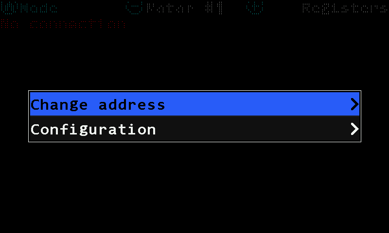
Das Menü des Bildschirms Electric motors.
Die Adresse ändern
Tippen Sie auf „Change address“ und noch einmal darauf. Drei Punkte öffnen sich.
„Motor address“ (Motoradresse) — die Adresse, unter der der Controller jetzt antwortet. Lassen Sie sie, wie sie ist.
„New address“ (Neue Adresse) — die Adresse, die er annehmen soll. Entnehmen Sie sie dem Datenblatt des Systems; die Werte sind in dieser Anleitung nicht abgedruckt.
Tippen Sie auf „Set“ (Setzen) und noch einmal darauf, um sie zu schreiben.
Die Controllerart wählen
„Configuration“ öffnet die Wahl der Controllerart, nach Nummern angeboten. Das Panel liest die Art vom Controller zurück und öffnet bei der, die antwortet. Eine andere Art von Hand zu wählen, ist der Weg, eine Ersatzplatine einzurichten — kein Weg, zu ändern, was ein Motor ist.
| Art | Was es ist |
|---|---|
| „1)universal“ | Der Universalcontroller: zwei Gleichstromkanäle oder ein Schrittmotorkanal auf derselben Platine. |
| „2)DC motor“ | Ein Gleichstrommotor-Controller. |
| „3)STEPPER fw0.006+“ | Ein Schrittmotor-Controller, Firmware 0.006 und neuer. |
| „4)BGxxCI“ | Ein BG45CI-Motor mit eingebautem Controller, auf der älteren Platine. |
Passt der antwortende Controller nicht zum Menü, sagt das Panel es: „Wrong controller type!“ (Falscher Controllertyp), „Old firmware version!“ (Alte Firmwareversion) oder „Wrong controller work mode!“ (Falscher Arbeitsmodus des Controllers).
Die Parameter einstellen
Jedes Konfigurationsmenü endet mit „Set“, und „Set“ trägt einen eigenen Wert — die Adressgruppe: „Motor address“ (nur dieser Controller), „ALL“ (alle), „All-Seeding“ (alle Saatgut) oder „All-Fertilizer“ (alle Dünger). Nichts erreicht den Controller, bevor „Set“ bestätigt ist — die Punkte darüber ändern die Zahlen, die das Panel hält, nicht die, mit denen der Controller läuft. „Set“ antwortet „Done“ (Fertig), „FAILURE“ (Fehler) oder „No connection“ (Keine Verbindung); eine Gruppe, die im Profil keine Motoren hat, wird mit „EM of dispensers is missing in profile“ (Elektromotoren der Dosierer fehlen im Profil) beantwortet.
| Art | Was eingestellt wird |
|---|---|
| STEPPER | „Pulses“ (Impulse) 1 … 8192 — die Impulse einer Umdrehung der Motorwelle; „Motor type“ (Motortyp) aus einer Liste; „Set“. |
| BGxxCI | „Pulses“ 1 … 8192; „Set“. Sonst nichts — den Rest trägt der Controller. |
| DC motor | „Pulses“, „Motor type“, die Reglerglieder „PID kP“, „PID kI“, „PID kD“ (0 … 65535, als Hundertstel gelesen), „TURBINA“ 0/1 und zwei Paare aus Drehzahl und Zeit „TIME1“ / „SPEED1“, „TIME2“ / „SPEED2“; „Set“. |
| universal | Der größte Satz, in drei Menüs: „Work mode“ (Arbeitsmodus), „Inputs setup“ (Eingänge einrichten) und „Parameters“ (Parameter). |
Das Menü „Parameters“ des Universalcontrollers:
| Parameter | Bereich |
|---|---|
| „Motor type“ | 0 … 255, aus der eigenen Tabelle des Controllers |
| „Pulses“ | 1 … 8192 je Wellenumdrehung |
| „Acceleration,Ms“ (Beschleunigung, ms) / „Deceleration,Ms“ (Verzögerung, ms) | 50 … 65535 — die Rampe hinauf und hinunter |
| „Minimum, rpm“ (Minimum, U/min) / „Maximum, rpm“ (Maximum, U/min) | 0 … 65535 — das Drehzahlfenster der Welle |
| „PID kP“, „PID kI“, „PID kD“ | 0 … 65535, Hundertstel |
| „!! Temp,*C“ | 0 … 200 — die Temperatur, bei der der Controller Alarm gibt |
| „I_peak,A“ / „I_peak,mS“ | der Spitzenstrom in Zehntelampere und wie lange er fließen darf |
| „I_push,A“ / „I_push,Sec“ | der Losbrechstrom und seine Zeit |
| „I_hilo,A“ / „I_hilo,Sec“ | die Schwelle des Dauerstroms und ihre Zeit |
| „Set“ | schreibt alles, an der gewählten Adressgruppe |
Die vier Artnamen und die Punkte „PID kP“, „PID kI“, „PID kD“, „TURBINA“, „TIME1“, „SPEED1“, „TIME2“, „SPEED2“, „!! Temp,*C“, „I_peak,A“, „I_push,A“, „I_hilo,A“ und ihre Zeitpartner lauten in jeder Sprache des Panels gleich.
Was der Controller meldet, lesen: Diagnose der Motorcontroller.
Diagnose der Motorcontroller
Wie Sie auf dem Bildschirm Electric motors lesen, was ein Dosiermotor-Controller über sich meldet — Drehzahl, Fehlercode, Spannungen, Temperatur, Strom, Statusbits und Störungszähler — und wie Sie sich per Touch darin bewegen.
Der Bildschirm Electric motors (Elektromotoren) zeigt live, was ein Motorcontroller über sich meldet. Öffnen Sie ihn mit einem Zweifingertippen auf den Startbildschirm → „Service“ (Service) → „Electric motors“, oder mit „Electric motors“ im Kontextmenü eines Motors — beides auf der Ebene „Agronomist“ (Agronom). Die Arbeitsansicht der Motoren ist ein anderer Bildschirm: Motorbildschirm.
- „Mode“ (Modus) — tippen Sie darauf, um die Seite zu wechseln: „Registers“ (Register), dann „Statistics“ (Statistik).
- „Motor #“ mit einer Nummer — welcher Motor angezeigt wird, hier Motor 1. Wischen Sie nach rechts für die nächste, nach links für die vorige Nummer.
- „Registers“ — der Name der Seite. Ein Universalcontroller hat zwei Registerseiten, „Registers-1“ und „Registers-2“.
- Das Statuswort — sechzehn Bits des Controllers; eine leuchtende (gelbe) Zelle ist ein gesetztes Bit.
- Die Legende der Bits — die Nummer und der Name jedes Bits. Tabelle unten.
- „Speed“ (Drehzahl) / „Target speed“ (Solldrehzahl) — was die Welle tut gegenüber dem, was das Panel verlangt hat. Eine Lücke, die sich nicht schließt, ist das erste Zeichen für eine Last, die der Motor nicht tragen kann.
- „Error code“ (Fehlercode) / „Act.posit.“ (Istposition) — die eigene Fehlernummer des Controllers (Codes) und die Position, bei der er sich selbst zählt.
- „Volt.mot.,mV“ / „Volt.elec.,mV“ (Spannung Motor / Elektronik, mV) — die Spannung am Motor und an der Elektronik in Millivolt. Eine Motorspannung weit unter der Elektronikspannung heißt, dass die Versorgung unter Last einbricht.
- „Temperat.,C“ / „Current,mA“ (Temperatur, °C / Strom, mA) — die Temperatur des Controllers und der Strom, den er zieht. Vergleichen Sie den Strom mit „I_hilo,A“, das für diesen Motor eingestellt ist (Motorcontroller konfigurieren).
| Geste | Was sie tut |
|---|---|
| Tippen auf „Mode“ | Nächste Seite. |
| Wisch nach rechts / links | Nächste / vorige Controllernummer. Die Nummern laufen von 1 bis 127 und beginnen dann von vorn; eine Nummer ohne Controller zeigt nichts Brauchbares. |
| Zweifingertippen | Das Menü: „Change address“ (Adresse ändern), „Configuration“ (Konfiguration) — siehe Motorcontroller konfigurieren. |
| Dreifingertippen oder langes Wischen nach oben | Schließt den Bildschirm. |
Die Statusbits
| Bit | Name | Bit | Name |
|---|---|---|---|
| 0 | Enable | 8 | Toggle |
| 1 | Error | 9 | CmdTgl |
| 2 | Warn. | 10 | CmdErr |
| 3 | Moving | 11 | StpHalt |
| 4 | Reach | 12 | LimCur |
| 5 | Limit | 13 | LimVel |
| 6 | FolErr | 14 | LimPos |
| 7 | HomDone | 15 | LimSVel |
Die Legende wird auf jedem Panel auf Englisch gezeichnet, gleich welche Sprache eingestellt ist: Sie ist eine Bitzuordnung des Controllers, keine Meldung an den Fahrer.
Die Störungszähler
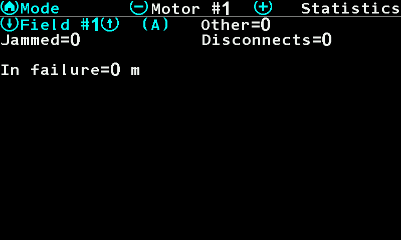
Die Seite „Statistics“ zeigt die Störungen, die dieser Motor auf dem aktiven Schlag gesammelt hat — sie gehören zur Schlagstatistik, nicht zum Motor:
| Zähler | Was er zählt |
|---|---|
| „Jammed“ (Blockiert) | Der Rotor blieb stehen, und der Controller musste aufgeben oder zurückfahren. |
| „Disconnects“ (Verbindungsabbrüche) | Der Controller antwortete nicht mehr. |
| „Other“ (Sonstige) | Alles andere, was der Controller gemeldet hat. |
| „In failure“ (In Störung) | Die Strecke in Metern, die dieser Motor im Störungszustand verbracht hat. |
Jeder Zähler ist weiß bei null und rot, sobald er es nicht mehr ist. Eine rote Zahl heißt nicht, dass der Motor jetzt gestört ist — sie heißt, dass er es irgendwo auf diesem Schlag war und das dort gesäte Saatgut einen Blick wert ist. Um einen anderen Schlag zu lesen, machen Sie ihn zuerst zum aktiven Schlag (Statistikbildschirm).
Das Menü Service
Jeder Punkt des Menüs „Service“, seine Zugriffsebene und welche ein Techniker besser in Ruhe lässt.
Tippen Sie mit zwei Fingern auf den Startbildschirm, dann zweimal auf „Service“ (Service). Das Menü selbst wird ab der Ebene „Agronomist“ (Agronom) angezeigt; welche Punkte Sie sehen, hängt von der Ebene ab (Zugriffsebenen).

| Punkt | Ebene | Was es ist |
|---|---|---|
| „Profile“ (Profil) | Agronomist | Welche Geräte die Maschine hat und wie viele. Das Profil |
| „Sensors Configuration“ (Sensorkonfiguration) | Agronomist | Geräten ihre Adresse geben. Gerätekonfiguration |
| „Registers“ (Register) | Agronomist | Eine Rohansicht der Register. Nicht Teil irgendeines Ablaufs. |
| „Electric motors“ (Elektromotoren) | Agronomist | Der Diagnosebildschirm und die Konfiguration der Dosiermotor-Controller. Motorcontroller konfigurieren |
| „Serial number“ (Seriennummer) | Service | Die Seriennummer des Panels, einmalig bei der Fertigung eingegeben. |
| „Imitation mode“ (Simulationsmodus) | Service | „No“ (Nein) / „Yes“ (Ja) — das Panel arbeitet mit simulierten Daten. Siehe die Warnung unten. |
| „Count seeds always“ (Körner immer zählen) | Agronomist | „No“ / „Yes“ — „Yes“ zeigt die Kornzähler auch in den Modi „Flow“ (Durchfluss) und „Hybrid“ (Hybrid); sonst werden sie nur im Modus „Precise“ (Einzelkorn) angezeigt. |
| „Enter key“ (Schlüssel eingeben) | Agronomist | Gibt den Lizenzschlüssel ein, der das Panel aus dem Vorführzustand nimmt. Wird nur angezeigt, solange sich das Panel in diesem Zustand befindet. |
| „Set trial“ (Testzeit setzen) | Service | Startet die Vorführzeit. |
| „Trial, hours“ (Testzeit, Stunden) | Service | 1 … 999 — wie lange diese Zeit dauert. |
Vier weitere Punkte — das Protokoll des Trackers, zwei Schalter für die Protokollierung auf die Speicherkarte und die Displayart — gibt es in der Firmware, sie sind aber so eingestellt, dass sie nie angezeigt werden. Sie sind auf keiner Ebene erreichbar.
„Imitation mode“ wird auf Englisch angezeigt, gleich welche Sprache am Panel eingestellt ist.
So arbeiten Alarme
Wann der Hectare 5 einen Alarm auslöst, was das Alarmfenster zeigt, wie Sie es per Touch schließen, welche Störungen ohne Fenster ertönen und wie Sie die Alarmthemen dieser Anleitung benutzen.
Ein Alarm ist ein Fenster, das sich mit einem Alarmton über den Arbeitsbildschirm legt. Es teilt Ihnen mit, dass ein Gerät — ein Sensor, ein Aktuator, ein Motorcontroller — oder das System als Ganzes eine Störung festgestellt hat. Die Alarmthemen dieses Abschnitts sind nach dem Gerät geordnet, das den Alarm auslöst. Suchen Sie nach den Wörtern, die Sie auf dem Bildschirm sehen, nicht nach einer Beschreibung davon. Die Alarmtexte erscheinen am Hectare 5 auf Englisch; sie stehen hier deshalb in englischer Schreibweise, mit der deutschen Bedeutung daneben.
Wann das Panel einen Alarm auslöst
Eine Störung wird nicht in dem Moment gemeldet, in dem sie auftritt. Die Bedingung muss ununterbrochen für die bei „Alarm delay“ (Alarmverzögerung) eingestellte Zeit bestehen, bevor sich das Alarmfenster öffnet.
| Einstellung | Wert |
|---|---|
| Wo sie eingestellt wird | Menü „Settings“ (Einstellungen), Punkt „Alarm delay“, auf der Ebene „Operator“ (Fahrer). Siehe Das Menü Settings. |
| Bereich | 2 bis 20 Sekunden, in Schritten von 1 Sekunde. |
| Standard | 3 Sekunden. Ein Wert außerhalb des Bereichs wird von selbst auf den Standardwert zurückgesetzt. |
Eine kurze Verzögerung lässt das Panel schnell reagieren, aber auch auf kurze Störungen — einen einzelnen Stoß, eine kurze Lücke im Kornfluss. Eine lange Verzögerung hält den Bildschirm ruhig, doch eine echte Störung kann bis zu zwanzig Sekunden bestehen, bevor Sie davon erfahren.
Zwei Fälle folgen der Verzögerung nicht:
- Verlorene Kommunikation wird in Abfragen gezählt, nicht in Sekunden. „Connection lost“ (Verbindung verloren) erscheint nach drei Abfragen in Folge ohne Antwort des Geräts.
- Unmittelbar nach dem Einrichten eines Sensors werden seine Alarme für eine kurze Sperrzeit nicht verarbeitet. Das verhindert eine Flut von Alarmen, während ein Gerät konfiguriert wird.
Das Alarmfenster
- „FAILURE!“ (Störung) — der Titel jedes Alarmfensters, auf einem roten Balken, gleich welche Störung vorliegt. Er ist nicht die Störung selbst.
- Der Alarmtext — die Störung. Schlagen Sie ihn unter diesem Text in den Alarmthemen nach.
- Die Geräteart, die den Alarm auslöst — hier ein Behältersensor. Derselbe Text kann von verschiedenen Geräten kommen; diese Zeile sagt Ihnen, von welchem.
- Die Nummer des Geräts — hier Behälter 2. Lösen mehrere Geräte derselben Art denselben Alarm aus, teilen sie sich ein Fenster und werden zusammen aufgelistet, zum Beispiel #3-5,8.
- „Close“ (Schließen) — schließt diesen Alarm. Unten.
Ein Überstromalarm eines Motors ergänzt eine Zeile mit dem Strom, den der Controller gemessen hat, in Ampere. Die Alarme des Panels selbst — zum Beispiel „User is Agronomist!“ — haben keine Gerätezeile; ihr Text beginnt mit der Zeile „HOME - close message“ (HOME — Meldung schließen). Sie werden wie jeder andere Alarm mit „Close“ geschlossen.
Einen Alarm schließen
Tippen Sie im Fenster auf „Close“. Dieser Alarm schließt sich, und der Ton verstummt. Warten weitere Alarme, öffnet sich der nächste. Nichts anderes schließt ein Alarmfenster — Tippen an anderer Stelle, Wischen und das Dreifingertippen werden ignoriert, solange es geöffnet ist.
Das Schließen eines Fensters behebt die Störung nicht. Die Alarme eines Geräts, die noch aktiv sind, werden auf seinem Statusbildschirm gezählt — siehe Der Sensor-Statusbildschirm.
Auf den höheren Zugriffsebenen sind Alarme verborgen
Auf den Ebenen „Agronomist“ (Agronom) und „Service“ (Service) werden keine Alarmfenster angezeigt — abgesehen von der einen Warnung, die das mitteilt, User is Agronomist —, und auch die Störungen ohne Fenster bleiben stumm. Die Alarme gehen nicht verloren: Sie warten. Kehren Sie zu „Operator“ zurück, verwirft das Panel die, die sich erledigt haben, und zeigt die, die noch zutreffen, nacheinander. Siehe Zugriffsebenen.
Alarme ohne Fenster
Zwei Störungen werden nicht als Fenster angezeigt, weil Sie den Arbeitsbildschirm sehen müssen, während Sie sie beheben. Auf der Ebene „Operator“ ertönt der Alarmton, solange sie bestehen und kein Alarmfenster offen ist:
- „SLOWER“ (langsamer) oder „FASTER“ (schneller) — die Fahrgeschwindigkeit liegt außerhalb der Grenzen, die für den Geschwindigkeitssensor eingestellt sind. Das Geschwindigkeitsfeld zeigt das Wort. Siehe Anzeigen.
- „NOT UNDER CONTROL“ (Nicht unter Überwachung) — Reihen laufen unter der Überwachungslinie ihres Diagramms. Siehe Das Sektionsdiagramm.
Wie die Alarmthemen aufgebaut sind
Jeder Alarm hat eine eigene Überschrift mit dem Text genau wie auf dem Bildschirm; hat die Meldung am Panel zwei Zeilen, werden beide Zeilen angegeben. Darunter: was das Panel erkannt hat und was zu prüfen ist, in der Reihenfolge, in der ein Mechaniker prüft — zuerst die schnellen Prüfungen am Panel, dann die Maschine, dann das Gerät selbst.
Jedes Gerät: Verbindung verloren oder falscher Gerätetyp
Die zwei Alarme, die jeder Sensor, Aktuator, Controller oder jedes Eingangsgerät auslösen kann — keine Antwort des Geräts oder die Antwort einer falschen Geräteart.
Diese zwei Alarme sind nicht an eine Geräteart gebunden. Der Name des Geräts im Alarmfenster sagt Ihnen, welches betroffen ist. Wie das Fenster funktioniert: So arbeiten Alarme.
„Connection lost“ — Verbindung verloren
Was es bedeutet. Das Panel hat in drei Abfragen in Folge keine Antwort vom Gerät erhalten. Das gilt für Sensoren, Aktuatoren, Controller und Eingangsgeräte gleichermaßen.
Was Sie in dieser Reihenfolge prüfen:
- Das Gerät ist an das Netz angeschlossen.
- Das Kabel und der Stecker des Geräts.
- Die Stromversorgung des Geräts. Sie muss den Werten im Gerätepass entsprechen.
- Das Gerät soll auch wirklich da sein: Ein Gerät im Profil, das nicht verbaut ist, löst diesen Alarm ebenfalls aus. Lassen Sie ein solches Gerät außerhalb der Überwachung (Sensor in die Überwachung nehmen oder herausnehmen).
„Wrong device type!“ — Falscher Gerätetyp
Was es bedeutet. Dort, wo das Panel ein Gerät dieser Art erwartet, antwortet ein Gerät einer anderen Art. Die Ursache ist entweder eine falsche Einstellung im Systemprofil oder eine falsche Konfiguration des Geräts selbst.
Was Sie tun: Wenden Sie sich an den Service. Versuchen Sie nicht, es durch wahlloses Ändern von Profil oder Gerätekonfiguration zu beheben — siehe Gerätekonfiguration.
Gebläse oder Dosierwelle: Drehzahlalarme
Was zu tun ist, wenn sich das Gebläse oder die Dosierwelle zu langsam, zu schnell oder gar nicht dreht.
Der Gebläsesensor und der Sensor der Dosierwelle verwenden dieselben zwei Meldungen. Der Gerätename im Alarmfenster sagt Ihnen, welcher es ist. Wie das Fenster funktioniert: So arbeiten Alarme.
„Low speed of rotation“ / „High speed of rotation“ — Drehzahl zu niedrig / zu hoch
Was es bedeutet. Das Gebläse oder die Dosierwelle dreht sich langsamer oder schneller als zulässig. Für das Gebläse sind die Grenzen „Minimum, rpm“ (Minimum, U/min) und „Maximum, rpm“ (Maximum, U/min); bei der Dosierwelle vergleicht das Panel sie mit der Drehzahl, die die Fahrgeschwindigkeit verlangt, innerhalb von „Maximum error, %“ (Höchstabweichung, %).
Was Sie in dieser Reihenfolge prüfen:
- Das überwachte Bauteil — das Gebläse oder der Dosierer mit seinem Antrieb.
- Die Einstellungen des Sensors: beim Gebläse „Minimum, rpm“, „Maximum, rpm“ und „Pulses“ (Impulse) — siehe Gebläsesensor; beim Dosierer — siehe Sensor der Dosierwelle.
- Nur Dosierer: Die Fahrgeschwindigkeit am Panel stimmt mit der wirklichen überein.
- Der Sensor selbst ist in Ordnung.
- Nur Dosierer: Führen Sie die Kalibrierung durch — siehe Dosierer-Drehung kalibrieren.
„No rotation“ — Keine Drehung
Was es bedeutet. Die Dosierwelle dreht sich nicht, während die Maschine sät oder fährt. Nur der Sensor der Dosierwelle löst diesen Alarm aus. Die Welle gilt als stehend, wenn für „Period, s“ (Periode, s) kein Impuls gekommen ist.
Was Sie in dieser Reihenfolge prüfen:
- Der Dosierer und sein Antrieb.
- Die Einstellungen des Sensors, vor allem „Period, s“ — siehe Sensor der Dosierwelle.
- Der Sensor selbst ist in Ordnung.
Behälter leer
Was zu tun ist, wenn das Panel meldet, dass ein Behälter leer läuft.
Der Behältersensor sitzt in einer festen Höhe im Behälter. Er meldet, wenn das Produkt darunter fällt. Auf dem Startbildschirm wechselt das Behältersymbol von vollem Grün zu leerem Rot. Wie das Fenster funktioniert: So arbeiten Alarme.
„Hopper empty“ — Behälter leer
Was es bedeutet. Der Füllstand des Produkts im Behälter ist sehr niedrig. Der Behälter muss nachgefüllt werden.
Was Sie in dieser Reihenfolge prüfen:
- Füllen Sie den Behälter.
- Steht das Produkt über der Höhe, in der der Sensor montiert ist, und bleibt der Alarm, prüfen Sie, ob der Sensor in Ordnung ist. Sein Statusbildschirm zeigt den Pegel an seinem Eingang als "0" oder "1" — siehe Der Sensor-Statusbildschirm.
Der Behältersensor hat außer den gemeinsamen keine eigenen Einstellungen — siehe Behälter-, Arbeitsstellungs- und Motorsensoren.
Luftdruck zu hoch oder zu niedrig
Was zu tun ist, wenn der Drucksensor des Luftsystems einen Druck oder Unterdruck außerhalb des zulässigen Bereichs meldet.
Der Drucksensor misst den Überdruck oder den Unterdruck des Luftsystems. Beide Alarme betrachten den Betrag des Über- oder Unterdrucks, welcher es auch ist, und nur, solange die Maschine sät oder mit dem Gerät in Arbeitsstellung fährt. Die Grenzen sind in Drucksensor beschrieben. Wie das Fenster funktioniert: So arbeiten Alarme.
„High pressure“ — Druck zu hoch
Was es bedeutet. Der gemessene Über- oder Unterdruck ist größer als „Maximum, Pa“ (Maximum, Pa).
Was Sie in dieser Reihenfolge prüfen:
- Verringern Sie die Drehzahl des Gebläses oder der Turbine.
- Die Stellung der Regelklappe des Lufteinlasses, falls vorhanden.
- Der Schlauch zum Drucksensor ist richtig angeschlossen, und die Messleitung ist frei von Verstopfungen.
„Low pressure“ — Druck zu niedrig
Was es bedeutet. Der gemessene Über- oder Unterdruck ist kleiner als „Minimum, Pa“ (Minimum, Pa).
Was Sie in dieser Reihenfolge prüfen:
- Erhöhen Sie die Drehzahl des Gebläses oder der Turbine.
- Die Stellung der Regelklappe des Lufteinlasses, falls vorhanden.
- Der Luftkanal auf Undichtigkeiten.
- Der Schlauch zum Drucksensor ist richtig angeschlossen, und die Messleitung ist frei von Verstopfungen.
Ausbringmenge zu niedrig oder zu hoch
Was zu tun ist, wenn die Korn-, Trockendünger- oder Flüssigdüngersensoren eine Menge unter oder über dem zulässigen Band melden, und was NOT UNDER CONTROL bedeutet.
Die Sektionssensoren — Korn, Trockendünger und Flüssigdünger — vergleichen die gemessene Menge mit der Sollmenge. Wie das Fenster funktioniert: So arbeiten Alarme.
| Modus der Gruppe | „Under allowable rate“ (Menge unter dem Zulässigen) | „Over allowable rate“ (Menge über dem Zulässigen) |
|---|---|---|
| „Flow“ (Durchfluss) | Der Durchfluss fällt unter die Alarmschwelle — die Überwachungslinie des Diagramms. | Wird nicht ausgelöst. |
| „Hybrid“ (Hybrid), „Precise“ (Einzelkorn) | Die Menge fällt um mehr als „Rate error,%“ (Mengenfehler, %) unter die Sollmenge. | Die Menge steigt um mehr als „Rate error,%“ über die Sollmenge. |
„Under allowable rate“ — Menge unter dem Zulässigen
Was es bedeutet. Ein Sektionssensor — Korn, Trockendünger oder Flüssigdünger — hat während der Arbeit zu wenig Produkt gemessen.
Was Sie in dieser Reihenfolge prüfen:
- In den Behältern oder im Tank ist genug Produkt.
- Die Fahrgeschwindigkeit am Panel stimmt mit der wirklichen überein.
- Korn- oder Trockendüngersensor: „Fraction“ (Fraktion). Der Wert muss unter Umständen verringert werden. Siehe Kornsensoren und Trockendüngersensoren.
- Flüssigdüngersensor: „Pulses per liter“ (Impulse je Liter). Der Wert muss unter Umständen verringert werden. Siehe Flüssigdünger.
- Kornsensor: sein Status auf dem Statusbildschirm („Information“ (Information) in seinem Kontextmenü) — siehe Der Sensor-Statusbildschirm.
- Die Dosiereinheit: Ist sie in Ordnung und richtig eingestellt?
„Over allowable rate“ — Menge über dem Zulässigen
Was es bedeutet. Ein Sektionssensor — Korn, Trockendünger oder Flüssigdünger — hat während der Arbeit zu viel Produkt gemessen.
Was Sie in dieser Reihenfolge prüfen:
- Die Fahrgeschwindigkeit am Panel stimmt mit der wirklichen überein.
- Korn- oder Trockendüngersensor: „Fraction“. Der Wert muss unter Umständen erhöht werden.
- Flüssigdüngersensor: „Pulses per liter“. Der Wert muss unter Umständen erhöht werden.
- Kornsensor: sein Status auf dem Statusbildschirm.
- Die Dosiereinheit: Ist sie in Ordnung und richtig eingestellt?
„NOT UNDER CONTROL“ — Nicht unter Überwachung — kein Fenster
Laufen Reihen unter der Überwachungslinie, zeigt der Startbildschirm in Rot „NOT UNDER CONTROL“, und auf der Ebene „Operator“ (Fahrer) ertönt der Alarmton — aber es öffnet sich kein Alarmfenster. Die Reihen unter der Linie werden nicht überwacht.
Was Sie in dieser Reihenfolge prüfen:
- Die Fahrgeschwindigkeit am Panel stimmt mit der wirklichen überein.
- Die Alarmschwelle des Diagramms: Liegt sie über der Menge, die die Maschine tatsächlich ausbringt? Senken Sie sie oder lassen Sie sie vom Panel einstellen — Alarmschwelle automatisch einstellen.
- In den Behältern oder im Tank ist genug Produkt.
- „Fraction“ der Korn- oder Düngersensoren oder „Pulses per liter“ der Flüssigkeitssensoren — der Wert muss unter Umständen verringert werden.
- Die Dosiereinheit: Ist sie in Ordnung und richtig eingestellt?
Was die Linie bedeutet: Das Sektionsdiagramm.
Zu viele Doppelbelegungen oder Fehlstellen
Was zu tun ist, wenn ein Kornsensor einer Einzelkornsämaschine mehr Doppelbelegungen oder Fehlstellen zählt als zulässig.
Doppelbelegungen und Fehlstellen werden nur im Aussaatmodus „Precise“ (Einzelkorn) gezählt — an einer Einzelkornsämaschine. Jeder Alarm wird nur ausgelöst, wenn seine Grenze eingestellt ist: „Doubles error,%“ (Fehler Doppelbelegungen, %) und „Skips error,%“ (Fehler Fehlstellen, %) auf „No“ (Nein) schalten ihn aus. Wie das Fenster funktioniert: So arbeiten Alarme.
„High % of doubles“ — Hoher Anteil an Doppelbelegungen
Was es bedeutet. Der Anteil an Doppelbelegungen, den der Sensor zählt, liegt über „Doubles error,%“.
Was Sie in dieser Reihenfolge prüfen:
- Die Fahrgeschwindigkeit am Panel stimmt mit der wirklichen überein.
- „Doubles error,%“ in den Einstellungen der Kornsensoren — ist die Grenze sinnvoll? Siehe Kornsensoren und Trockendüngersensoren.
- „Fraction“ (Fraktion) in den Einstellungen der Kornsensoren. Der Wert muss unter Umständen erhöht werden.
- Der Status des Sensors auf seinem Statusbildschirm — siehe Der Sensor-Statusbildschirm.
- Die Dosiereinheit: Ist sie in Ordnung und richtig eingestellt?
„High % of skips“ — Hoher Anteil an Fehlstellen
Was es bedeutet. Der Anteil an Fehlstellen, den der Sensor zählt, liegt über „Skips error,%“.
Was Sie in dieser Reihenfolge prüfen:
- Die Fahrgeschwindigkeit am Panel stimmt mit der wirklichen überein.
- In den Behältern ist genug Saatgut.
- „Skips error,%“ in den Einstellungen der Kornsensoren — ist die Grenze sinnvoll?
- „Fraction“ in den Einstellungen der Kornsensoren. Der Wert muss unter Umständen verringert werden.
- Der Status des Sensors auf seinem Statusbildschirm.
- Die Dosiereinheit: Ist sie in Ordnung und richtig eingestellt?
Das Wegstück, über das die Anteile gezählt werden, ist „Recalculation,m“ (Neuberechnung, m) der Kornsensoren. Wie Fehlstellen und Doppelbelegungen im Diagramm aussehen: Das Sektionsdiagramm.
Fahrgasse: Aktuator blockiert oder Produkt in der Fahrgasse
Was zu tun ist, wenn der Fahrgassen-Aktuator klemmt, seine Stellungssensoren einander widersprechen oder eine abgeschaltete Sektion noch Produkt ausbringt.
Der Fahrgassen-Aktuator schaltet die Sektionen des Fahrgassen-Durchgangs ab. Zwei Stellungssensoren des Schiebers sagen dem Panel, wo dessen Klappe steht. Wie das Fenster funktioniert: So arbeiten Alarme.
„Stall“ — Blockiert
Was es bedeutet. Der Fahrgassen-Aktuator klemmt.
Was Sie in dieser Reihenfolge prüfen:
- Die Stellungssensoren des Schiebers am Aktuator sind in Ordnung.
- Die Mechanik des Fahrgassen-Aktuators ist in Ordnung.
„Illegal state“ — Unzulässiger Zustand
Was es bedeutet. Der Aktuator meldet eine Stellung, die es nicht geben kann: Beide Stellungssensoren des Schiebers haben gleichzeitig ausgelöst. Bei einwandfreier Anlage kann das nicht vorkommen.
Was Sie prüfen: Die Stellungssensoren des Schiebers sind in Ordnung.
„Seeding to tramline“ — Aussaat in die Fahrgasse
Was es bedeutet. Eine Sektion, die für die Fahrgasse abgeschaltet sein sollte, bringt noch zu viel Produkt aus. Der Kornsensor, der Trockendüngersensor oder der Flüssigdüngersensor dieser Sektion hat es im Fahrgassen-Überwachungsmodus gemessen.
Kornsensor oder Trockendüngersensor — prüfen Sie in dieser Reihenfolge:
- Die Dosiereinheit und der Mechanismus zum Absperren des Flusses sind in Ordnung.
- „Toler.sowing to tramline,%“ (Toleranz Aussaat zur Fahrgasse, %) in den Einstellungen der Gruppe der Sektionssensoren. Der Wert muss unter Umständen erhöht werden. Siehe Kornsensoren und Trockendüngersensoren.
- „Fraction“ (Fraktion) in den Einstellungen der Gruppe des alarmierenden Sensors. Der Wert muss unter Umständen erhöht werden.
- Der Status des Sensors auf seinem Statusbildschirm — siehe Der Sensor-Statusbildschirm.
Flüssigdüngersensor — prüfen Sie in dieser Reihenfolge:
- Die Dosiereinheit und der Mechanismus zum Absperren des Flusses sind in Ordnung.
- „Tolerable leak to tramline,%“ (Zulässiger Austritt zur Fahrgasse, %) in den Einstellungen der Gruppe der Sektionssensoren. Der Wert muss unter Umständen erhöht werden. Siehe Flüssigdünger.
Ein Sensor, dessen „Product application“ (Produktausbringung) auf „No“ steht, wird genauso überwacht — als abgeschaltete Reihe.
Korn- oder Düngersensor verstopft, von Licht getroffen oder defekt
Was zu tun ist, wenn ein optischer Korn- oder Düngersensor einen blockierten Kanal, zu viel Licht, eine eigene Störung oder veraltete Firmware meldet.
Die Korn- und Trockendüngersensoren zählen das Produkt optisch: Ein Sender leuchtet quer durch den Kanal, ein Empfänger sieht jedes Korn. Diese Alarme melden den Zustand des Sensors selbst, nicht die Menge. Wie das Fenster funktioniert: So arbeiten Alarme.
„Clogged“ — Verstopft
Was es bedeutet. Der Korn- oder Trockendüngersensor hat erkannt, dass sein optischer Kanal blockiert ist.
Was Sie in dieser Reihenfolge tun:
- Beseitigen Sie die Verstopfung.
- Prüfen Sie den Kanal auf Staubablagerungen.
- Prüfen Sie die Stromversorgung des Sensors. Sie muss den Werten im Gerätepass entsprechen.
„Light struck“ — Lichteinfall
Was es bedeutet. Der Korn- oder Düngersensor hat in seinem optischen Kanal eine extrem hohe Lichtmenge erkannt.
Was Sie tun: Halten Sie direktes Sonnenlicht vom optischen Kanal des Sensors fern.
„Broken“ — Defekt
Was es bedeutet. Der Korn- oder Trockendüngersensor hat eine eigene Störung erkannt. Unter Umständen muss er ersetzt werden. Sein Statusbildschirm zeigt „Faulty“ (gestört).
Was Sie tun: Prüfen Sie die Stromversorgung des Sensors. Sie muss den Werten im Gerätepass entsprechen. Ist die Stromversorgung in Ordnung, muss der Sensor unter Umständen ersetzt werden — wenden Sie sich an den Service.
„Old firmware! Wrong S&D calc!“ — Alte Firmware! Falsche Berechnung von Fehlstellen und Doppelbelegungen
Was es bedeutet. Ein Trockendüngersensor mit veralteter Firmware ist im Einsatz, während der Dünger im Modus „Precise“ (Einzelkorn) läuft. Er zählt, doch seine Fehlstellen und Doppelbelegungen sind nicht verlässlich.
Was Sie tun: Wenden Sie sich an den Service, damit die Firmware des Sensors aktualisiert wird — oder stellen Sie „Mode of fertilizers“ (Modus der Düngung) auf „Flow“ (Durchfluss) oder „Hybrid“ (Hybrid) (Sämaschinen-Parameter).
Motor: Öldruck, Batterieladung, Kraftstoff, Luftfilter
Was zu tun ist, wenn einer der Motorsensoren — Öldruck, Batterieladung, Kraftstoffstand, Luftfilter — einen Alarm auslöst.
Alle Motorsensoren teilen sich einen Alarmtext: „FAILURE“ (Störung). Der Name des Sensors unter dem Text sagt Ihnen, welcher ausgelöst hat. Öldruck und Batterieladung werden nur überwacht, solange die Zündung eingeschaltet ist; Kraftstoffstand und Luftfilter immer. Wie das Fenster funktioniert: So arbeiten Alarme. Die unten genannten Einstellungen sind in Behälter-, Arbeitsstellungs- und Motorsensoren beschrieben.
„FAILURE“ — „Emergency oil pressure“ — Öldruck-Notmeldung
Was es bedeutet. Der Sensor für zu niedrigen Öldruck hat ausgelöst.
Was Sie in dieser Reihenfolge prüfen:
- Der Sensor für zu niedrigen Öldruck ist in Ordnung.
- „Activation signal“ (Aktivierungssignal) in den Einstellungen des Sensors für zu niedrigen Öldruck.
- Steht ein Zündungssensor im Profil: Ist seine Überwachung eingeschaltet?
- Steht ein Zündungssensor im Profil: Ist er in Ordnung?
„FAILURE“ — „No battery charge“ — Batterie lädt nicht
Was es bedeutet. Die Batterie wird nicht geladen.
Was Sie in dieser Reihenfolge prüfen:
- Der Sensor der Batterieladung ist in Ordnung.
- „Activation signal“ in den Einstellungen des Sensors der Batterieladung.
- Steht ein Zündungssensor im Profil: Ist seine Überwachung eingeschaltet?
- Steht ein Zündungssensor im Profil: Ist er in Ordnung?
„FAILURE“ — „Low fuel“ — Kraftstoff niedrig
Was es bedeutet. Im Tank ist wenig Kraftstoff übrig.
Was Sie in dieser Reihenfolge prüfen:
- Der Kraftstoffstandsensor ist in Ordnung.
- „Activation signal“ in den Einstellungen des Kraftstoffstandsensors.
- „Signal delay, sec“ (Signalverzögerung, s) in den Einstellungen des Kraftstoffstandsensors. Der Standardwert ist 15 Sekunden.
„FAILURE“ — „Air filter“ — Luftfilter
Was es bedeutet. Der Luftfilter ist verstopft.
Was Sie in dieser Reihenfolge prüfen:
- Der Luftfiltersensor ist in Ordnung.
- „Activation signal“ in den Einstellungen des Luftfiltersensors.
- „Signal delay, sec“ in den Einstellungen des Luftfiltersensors. Der Standardwert ist 5 Sekunden.
Der Zündungssensor selbst löst nie ein Alarmfenster aus: Ein gelber Schlüssel auf dem Startbildschirm sagt nur, dass die Zündung aus ist (Anzeigen).
Produktmenge nach Gewicht zu niedrig, zu hoch oder unmöglich
Was zu tun ist, wenn ein nach Gewicht dosiertes Produkt — durch einen Elektromotor oder einen gewichtsüberwachten Dosierer — seine Sollmenge verfehlt oder sie gar nicht erreichen kann.
Diese Alarme löst das System als Ganzes aus, nicht ein einzelnes Gerät. Es gibt sie für jedes der vier Produkte gesondert: Die Zahl in der Meldung ist die Nummer des Produkts. Wie weit ein Produkt von seiner Sollmenge abweichen darf, bestimmt „Product rate error,%“ (Mengenfehler Produkt, %) im Menü „Settings“ (Einstellungen) (Das Menü Settings). Wie das Fenster funktioniert: So arbeiten Alarme.
„Rate of Product 1“ / „is to low!“ — oder — „is to high!“ — Menge von Produkt 1 zu niedrig / zu hoch
Dasselbe gilt für Produkt 2, 3 und 4. Das Panel schreibt die Meldung in dieser Schreibweise.
Was es bedeutet. Das Produkt wird um mehr als „Product rate error,%“ unter oder über seiner Sollmenge in Kilogramm je Hektar ausgebracht.
Produkt von einem Elektromotor dosiert — prüfen Sie in dieser Reihenfolge:
- Die Sollmenge des Produkts.
- Die geltenden Geschwindigkeitsgrenzen auf dem Statusbildschirm des Geschwindigkeitssensors — siehe Der Sensor-Statusbildschirm.
- Die Einstellungen des Elektromotors, der die Dosierwelle antreibt — siehe Dosierer-Elektromotor.
- Die Dosiereinheit.
- Der Drehsensor des Elektromotors ist in Ordnung.
- Die Arbeitsauslastung des Motors. Unter 20 % oder über 80 % versuchen Sie eine Dosierwalze anderer Größe: eine größere, wenn zu wenig ausgebracht wird, eine kleinere, wenn zu viel.
- Kalibrieren Sie die Dosierwalze — siehe Dosierermotor nach Gewicht kalibrieren.
Dosierersensor mit eingeschalteter „Weight control“ (Gewichtsüberwachung) — prüfen Sie in dieser Reihenfolge:
- Die Sollmenge des Produkts.
- Die Einstellungen des Sensors der Dosierwelle — siehe Sensor der Dosierwelle.
- Die Dosiereinheit.
- Der Dosierersensor ist in Ordnung.
- Kalibrieren Sie den Dosierer — siehe Dosierer nach Gewicht kalibrieren.
„Product dosage is“ / „impossible! Check product“ / „rate and calibration!“ — Dosierung unmöglich
Was es bedeutet. Mit den aktuellen Einstellungen und der Sollmenge lässt sich das Produkt gar nicht nach Gewicht ausbringen: Die niedrigste Geschwindigkeit, bei der die Dosierwalzen die Menge liefern können, liegt schon bei oder über der höchsten. Auf dem Startbildschirm blinkt in der rechten Spalte ein rotes Produktsymbol.
Was Sie in dieser Reihenfolge prüfen:
- Die Sollmengen der Produkte — ein Produkt, das zu viel verlangt, schließt das Fenster für alle.
- „Min speed, km/h“ (Mindestgeschwindigkeit) und „Max speed, km/h“ (Höchstgeschwindigkeit) des Geschwindigkeitssensors — siehe Geschwindigkeitssensor.
- Die Einstellungen der Elektromotoren, die die Produkte nach Gewicht ausbringen, vor allem „Minimum, rpm“ (Minimum, U/min) und „Maximum, rpm“ (Maximum, U/min).
- Kalibrieren Sie die Dosierwalzen der Elektromotoren.
- Hilft das nicht: Bauen Sie Dosierwalzen anderer Größe ein.
User is Agronomist: Alarme werden nicht angezeigt
Warum das Panel warnt, dass Alarme verborgen sind, und wie Sie sie per Touch zurückholen.
Wie das Fenster funktioniert: So arbeiten Alarme.
„User is Agronomist!“ / „Alarms will not be shown!“ — Benutzer ist Agronom! Alarme werden nicht angezeigt!
Was es bedeutet. Die Aussaat hat begonnen, während die Zugriffsebene „Agronomist“ (Agronom) oder „Service“ (Service) eingestellt ist. Auf diesen Ebenen zeigt das Panel keine Alarmfenster; diese Warnung ist die einzige Ausnahme. Sie erscheint einmal für die gesamte Zeit, in der Sie auf dieser Ebene arbeiten. Wie jeder Alarm des Panels selbst beginnt ihr Text mit der Zeile „HOME - close message“ (HOME — Meldung schließen); schließen Sie sie mit „Close“ (Schließen).

Was Sie tun: Stellen Sie die Zugriffsebene zurück auf „Operator“ (Fahrer):
Tippen Sie in der Warnung auf „Close“.
Tippen Sie mit zwei Fingern auf den Startbildschirm, dann zweimal auf „Settings“ (Einstellungen).
Wischen Sie nach oben zu „User“ (Benutzer) und tippen Sie darauf. Wischen Sie nach links, bis dort „Operator“ steht.
Tippen Sie noch einmal auf „User“. Der Wechsel nach unten braucht keine PIN.
Aus- und Wiedereinschalten des Panels bewirkt dasselbe: Nach jedem Einschalten startet das Panel auf „Operator“.
Geschwindigkeitssensor ausgefallen, Geschwindigkeitsgrenzen widersprüchlich oder schlechtes GPS-Signal
Was zu tun ist, wenn einer von zwei Geschwindigkeitssensoren keine Impulse mehr gibt, wenn die minimale und die maximale Fahrgeschwindigkeit verkehrt herum eingestellt sind oder wenn der eingebaute Empfänger zu wenige Satelliten sieht.
Wie das Fenster funktioniert: So arbeiten Alarme.
„Speed sensor #1 failed“ / „Speed sensor #2 failed“ — Geschwindigkeitssensor Nr. 1 / Nr. 2 ausgefallen
Was es bedeutet. Das Profil sagt, dass die Maschine zwei Fahrgeschwindigkeitssensoren hat, aber das Panel sieht Bewegung nur von einem von ihnen. Die Nummer nennt den stummen Sensor. Dieser Alarm kann an einer Maschine mit einem Geschwindigkeitssensor nicht erscheinen.
Was Sie in dieser Reihenfolge tun:
- Prüfen Sie, dass beide Geschwindigkeitssensoren in Ordnung sind, und beheben Sie, was Sie finden.
- Lässt sich ein Sensor jetzt nicht reparieren: Ändern Sie das Systemprofil so, dass nur ein Geschwindigkeitssensor verwendet wird — siehe Das Profil.
„Error in settings of Min/Max“ — Fehler in den Einstellungen von Min/Max
Was es bedeutet. Die für den Geschwindigkeitssensor eingestellte minimale und maximale Fahrgeschwindigkeit widersprechen einander. Das Panel kann nicht entscheiden, ob die aktuelle Geschwindigkeit zulässig ist.
Was Sie tun: Prüfen Sie „Min speed, km/h“ (Mindestgeschwindigkeit) und „Max speed, km/h“ (Höchstgeschwindigkeit) in den Einstellungen des Geschwindigkeitssensors. Das Minimum muss unter dem Maximum liegen. Siehe Geschwindigkeitssensor.
„Poor GPS signal quality“ — Schlechte GPS-Signalqualität
Was es bedeutet. Die Geschwindigkeit wird vom im Panel eingebauten Empfänger genommen („GPS internal“ (internes GPS) steht auf „Yes“ (Ja)), und er sieht weniger als vier Satelliten. Der Geschwindigkeit, die er liefert, ist nicht zu trauen. Das Satellitensymbol auf dem Startbildschirm ist rot.
Was Sie in dieser Reihenfolge tun:
- Geben Sie dem Panel freie Sicht zum Himmel; fahren Sie weg von Bäumen, Gebäuden oder einem Hallendach.
- Beobachten Sie die Zahl neben dem Satellitensymbol: Sie zeigt, wie viele Satelliten der Empfänger nutzt. Warten Sie, bis sie vier oder mehr erreicht.
- Bleibt der Empfang schlecht, nehmen Sie die Geschwindigkeit vom Radsensor: Stellen Sie „GPS internal“ auf „No“ (Nein) — siehe GPS und Geschwindigkeitssensor.
Dosiermotor: blockiert, elektrische Störungen, Bootloader
Was zu tun ist, wenn der Controller eines Dosierer-Elektromotors eine Blockade, einen Kurzschluss, Überstrom, eine falsche Versorgungsspannung, Überhitzung, eine unbekannte Störung oder ein hängendes Firmware-Update meldet.
Diese Alarme kommen vom Controller, der einen Elektromotor eines Dosierers antreibt. Der Name im Alarmfenster sagt Ihnen, welcher Motor; der Motorbildschirm zeigt, welche Kachel Probleme hat (Motorbildschirm). Wie das Fenster funktioniert: So arbeiten Alarme.
„Motor jammed!“ — Motor blockiert
Was es bedeutet. Der Controller sieht keine Drehung, obwohl der Motor laufen sollte.
Was Sie in dieser Reihenfolge prüfen:
- Die Dosiereinheit ist in Ordnung und dreht frei.
- Der Drehsensor des Motors ist in Ordnung, ebenso seine Verbindung zum Controller — Kabel und Stecker.
Kommen Blockaden häufig vor, lässt „Rollback when jammed“ (Rücklauf bei Blockade) den Motor zurückfahren und es erneut versuchen — siehe Dosierer-Elektromotor.
„Short circuit“ — Kurzschluss
Was es bedeutet. Der Controller hat einen Kurzschluss erkannt.
Was Sie in dieser Reihenfolge prüfen:
- Die Kabelverbindung: Kabel und Stecker sind unbeschädigt.
- Ersetzen Sie den Controller zum Test durch einen einwandfreien.
„Over current“ — Überstrom
Was es bedeutet. Der Strom hat die Grenze überschritten. Das Fenster ergänzt eine Zeile mit dem Strom, den der Controller gemessen hat, in Ampere.
Was Sie in dieser Reihenfolge prüfen:
- Motor und Saatmechanik auf Blockade.
- Die Kabelverbindung: Kabel und Stecker sind unbeschädigt.
- Ersetzen Sie den Controller zum Test durch einen einwandfreien.
„Under voltage“ — Unterspannung
Was es bedeutet. Die Versorgungsspannung des Motors liegt unter dem zulässigen Wert. Der Motor kann nicht laufen.
Messen Sie zuerst die Versorgungsspannung.
Ist sie zu niedrig:
- Die Lichtmaschine ist in Ordnung.
- Die Spannung der Keilriemen der Lichtmaschine.
- Der Stromkabelbaum sitzt fest an den Klemmen von Batterie oder Lichtmaschine, wie es die erforderliche Versorgungsspannung verlangt.
- Die Kabelverbindungen haben sicheren elektrischen Kontakt.
Ist die Versorgungsspannung in Ordnung: Ersetzen Sie den Controller zum Test durch einen einwandfreien.
„Over voltage“ — Überspannung
Was es bedeutet. Die Versorgungsspannung des Motors liegt über dem zulässigen Wert. Der Motor kann nicht laufen.
Messen Sie zuerst die Versorgungsspannung.
Ist sie zu hoch:
- Die Lichtmaschine ist in Ordnung.
- Der Stromkabelbaum sitzt fest an den Klemmen von Batterie oder Lichtmaschine, wie es die erforderliche Versorgungsspannung verlangt.
- Die Kabelverbindungen haben sicheren elektrischen Kontakt.
Ist die Versorgungsspannung in Ordnung: Ersetzen Sie den Controller zum Test durch einen einwandfreien.
„Over temperature“ — Übertemperatur
Was es bedeutet. Der Motorcontroller ist überhitzt.
Was Sie in dieser Reihenfolge tun:
- Lassen Sie den Motor abkühlen.
- Ersetzen Sie den Controller zum Test durch einen einwandfreien.
„FAILURE“ — Störung
Was es bedeutet. Der Controller hat eine ungewöhnliche Störung erkannt, die den Service braucht.
Was Sie in dieser Reihenfolge tun:
- Lesen Sie den Fehlercode ab: Berühren und halten Sie die Motorkachel → „Information“ (Information) → Zeile „Last fault:“ (Letzte Störung:). Siehe Fehlercode eines Elektromotors lesen.
- Ersetzen Sie den Controller zum Test durch einen einwandfreien.
- Geben Sie den Code und die Nummer des Motors an den Service weiter.
„Device in bootloader!“ — Gerät im Bootloader
Was es bedeutet. Der Controller ist in seinem Modus für das Firmware-Update stehen geblieben und führt sein Arbeitsprogramm nicht aus. Er kann den Motor nicht antreiben.
Was Sie in dieser Reihenfolge tun:
- Schalten Sie die Stromversorgung aus und wieder ein.
- Kehrt die Meldung zurück, wurde das Firmware-Update des Controllers nicht abgeschlossen. Wenden Sie sich an den Service.
Flüssigdüngerpumpe: Druck- und Mengenalarme
Was zu tun ist, wenn der Flüssigdünger-Pumpencontroller zu hohen Druck, einen ausgefallenen Drucksensor oder eine Menge meldet, die er nicht halten kann.
Der Pumpencontroller baut auf derselben Elektronik auf wie der Controller eines Dosiermotors. Außer den Alarmen dieser Seite löst er die elektrischen Alarme des Dosiermotor-Controllers aus — „Short circuit“, „Over current“, „Under voltage“, „Over voltage“, „Over temperature“, „FAILURE“ und „Device in bootloader!“ — mit derselben Bedeutung und denselben Maßnahmen: siehe Alarme der Dosiermotoren. Wie das Fenster funktioniert: So arbeiten Alarme.
„High pressure“ — Druck zu hoch
Was es bedeutet. Der gemessene Flüssigkeitsdruck hat „Max pressure, Bar“ (Höchstdruck, bar) erreicht.
Was Sie in dieser Reihenfolge tun:
- Verringern Sie die Fahrgeschwindigkeit.
- Prüfen Sie in den Einstellungen des Pumpencontrollers „Max pressure, Bar“ und erhöhen Sie ihn, wenn die Leitung es zulässt — siehe Flüssigdünger.
„Pressure sensor failure!“ — Drucksensor ausgefallen
Was es bedeutet. Das Signal des Drucksensors ist weit unter seinen Arbeitsbereich von 4–20 mA gefallen.
Was Sie in dieser Reihenfolge prüfen:
- Die Verbindung des Sensors zum Controller — Kabel und Stecker sind unbeschädigt.
- „Pressure sensor“ (Drucksensor) in den Einstellungen des Pumpencontrollers nennt den Eingang, an dem der Sensor tatsächlich angeschlossen ist.
- Der Sensor ist in Ordnung. Ist er ausgefallen, ersetzen Sie ihn.
Der Statusbildschirm des Pumpencontrollers zeigt den Druck und das Rohsignal des Sensors in mA — siehe Der Sensor-Statusbildschirm.
„Rate low“ — Menge zu niedrig
Was es bedeutet. Der Pumpencontroller erreicht die eingestellte Menge nicht: Die tatsächliche Menge liegt um mehr als „Product rate error,%“ (Mengenfehler Produkt, %) unter der Sollmenge.
Was Sie in dieser Reihenfolge prüfen:
- Die Fahrgeschwindigkeit am Panel stimmt mit der wirklichen überein und ist einigermaßen gleichmäßig.
- Die Arbeitsauslastung der Pumpe. Über 90 %: Fahren Sie langsamer.
- Auslastung unter 90 % oder stark springend: Erhöhen Sie „Product rate error,%“ im Menü „Settings“ (Einstellungen), auf der Ebene „Agronomist“ (Agronom) — siehe Das Menü Settings.
- Die Pumpe ist in Ordnung.
„Rate high“ — Menge zu hoch
Was es bedeutet. Der Pumpencontroller bringt mehr als die eingestellte Menge aus: Die tatsächliche Menge liegt um mehr als „Product rate error,%“ über der Sollmenge.
Was Sie in dieser Reihenfolge prüfen:
- Die Fahrgeschwindigkeit am Panel stimmt mit der wirklichen überein und ist einigermaßen gleichmäßig.
- Die Arbeitsauslastung der Pumpe. Unter 10 %: Fahren Sie schneller.
- Auslastung über 10 % oder stark springend: Erhöhen Sie „Product rate error,%“ im Menü „Settings“.
- Die Pumpe ist in Ordnung.
Fehlercode eines Elektromotors lesen
Wo das Panel den numerischen Fehlercode eines Dosiermotor-Controllers zeigt und was jeder Code bedeutet.
Löst ein Dosiermotor „FAILURE“ (Fehler) aus, speichert sein Controller zusätzlich einen numerischen Code. Lesen Sie ihn ab und geben Sie ihn zusammen mit der Nummer des Motors an den Service weiter.
Wischen Sie auf dem Startbildschirm lang nach links, bis der Motorbildschirm erscheint (Arbeitsbildschirme). Berühren und halten Sie die Kachel des gestörten Motors; sein Kontextmenü öffnet sich. Eine Motorkachel auf dem zweiten Startbildschirm funktioniert genauso.
Tippen Sie auf „Information“ (Information) und noch einmal darauf. Der Statusbildschirm des Motors öffnet sich.
Lesen Sie die Zeile „Last fault:“ (Letzte Störung:). Der Status des Motors lautet „Faulty“ (gestört), solange einer seiner Alarme aktiv ist.
Derselbe Code wird als „Error code“ (Fehlercode) auf dem Bildschirm Electric motors angezeigt, auf der Ebene „Agronomist“ (Agronom) — siehe Diagnose der Motorcontroller.
Die Codes
Das Panel zeigt nur die Nummer. Die Beschreibungen stammen vom Motorcontroller selbst.
Befehls- und Parameterfehler
Der Controller hat etwas abgelehnt, was das Panel von ihm verlangt hat.
| Code | Beschreibung |
|---|---|
| -250 | Ungültiger Befehl |
| -251 | Unerwarteter Befehl |
| -252 | Ungültige Befehlssyntax |
| -253 | Ungültige Befehlsargumente |
| -260 | Ungültige Anzahl von Argumenten |
| -261 | Angegebener Index größer als FFFFh |
| -262 | Angegebener Subindex größer als FFh |
| -300 | Parameter existiert nicht |
| -301 | Schreiben in den Speicher fehlgeschlagen |
| -302 | Wiederherstellung fehlgeschlagen |
| -306 | Parameter kann nicht geschrieben werden |
| -307 | Parameter kann nicht gelesen werden |
| -308 | Parameterwert außerhalb des Bereichs |
| -316 | Version des gespeicherten Parametersatzes passt nicht zur Firmwareversion |
| -318 | Gespeicherter Parametersatz hat eine ungültige Prüfsumme |
| -322 | Parameter kann nicht gesetzt werden: Die Achse ist in Bewegung |
| -325 | Parameter kann nicht gesetzt werden: Der Positioniermodus ist nicht aktiv |
| -340 | Parameter kann nicht gesetzt werden: Ein Endschalter ist aktiv |
| -343 | Parameter kann nicht gesetzt werden: Ein Stopp- oder Halt-Befehl wird ausgeführt |
| -350 | Parameter nicht im angegebenen Index enthalten |
| -351 | Parameter nicht im angegebenen Subindex enthalten |
Gerätefehler
Der Controller oder der Motor selbst hat ein Problem.
| Code | Beschreibung |
|---|---|
| -1000 | Versorgungsspannung zu niedrig |
| -1001 | Versorgungsspannung zu hoch |
| -1002 | Versorgungsspannung der Elektronik zu niedrig |
| -1003 | Versorgungsspannung der Elektronik zu hoch |
| -1020 | Übertemperatur des Geräts |
| -1021 | Übertemperatur des Kühlkörpers |
| -1060 | Kurzschluss einer Motorleitung: zwischen den Motorleitungen, zwischen Motor und Masse oder zwischen Motor und Stromversorgung |
| -1061 | Überstrom des Motors |
| -4000 | Schleppfehler im Bewegungsablauf |
| -5100 | Endschalter aktiv |
Touchzonen und Gesten auf jedem Bildschirm
Was jede Touchgeste bewirkt — auf dem Startbildschirm, dem zweiten Startbildschirm, den Arbeitsbildschirmen, in Menüs, auf dem Zahlenblock und in Fenstern.
Das Hectare 5 hat keine Tasten; jede Aktion ist eine Geste auf dem Bildschirm. Jeder Bildschirm hört nur auf seine eigenen Gesten und ignoriert den Rest. Steht „Buttons sound“ (Tastenton) auf „Yes“ (Ja), wird jede Geste, die der Bildschirm annimmt, mit einem Klick bestätigt.
Arten der Berührung
| Geste | Wie | |
|---|---|---|
| Tippen | Ein Finger, innerhalb einer halben Sekunde aufsetzen und abheben. | |
| Berühren und Halten | Ein Finger länger als eine halbe Sekunde an einer Stelle. Das Panel reagiert, solange der Finger noch aufliegt. | |
| Doppeltippen | Zwei schnelle Tipper mit einem Finger. | |
| Zweifingertippen | Ein Tippen mit zwei Fingern gleichzeitig. | |
| Dreifingertippen | Ein Tippen mit drei Fingern gleichzeitig. | |
| Wischen | Ein kurzer Strich eines Fingers über den Bildschirm. | |
| Langes Wischen | Ein Strich eines Fingers über mehr als ein Drittel des Bildschirms. | |
| Zweifingerwischen, langes Zweifingerwischen | Dasselbe mit zwei Fingern. |
Startbildschirm
| Geste | Was sie bewirkt |
|---|---|
| Zweifingertippen | Öffnet das Hauptmenü. |
| Ein Gerät berühren und halten — Symbol oder Säule | Öffnet sein Kontextmenü. |
| Ein Diagramm berühren und halten, dann nach oben oder unten wischen | Hellt den Sollwert des Diagramms auf und ändert ihn, ein Schritt je Wischen. |
| Außerhalb der Diagramme tippen | Beendet die Änderung eines Sollwerts. |
| Eine kg/ha-Anzeige berühren und halten | Öffnet den Zahlenblock für die Sollmenge dieses Produkts. |
| Eine leere Stelle der rechten Spalte berühren und halten | Sperrt oder gibt die Produktausbringung frei. Ein kurzer Piepton bestätigt. Nur an Maschinen mit Dosierermotoren oder Pumpe. |
| Doppeltippen | Stellt die Alarmschwelle aus der ausgebrachten Menge ein. Nur während des Ausbringens. |
| Langes Wischen nach links | Tabelle (Statistik, wenn es keine Tabelle gibt). |
| Langes Wischen nach rechts | Zweiter Startbildschirm. |
Zweiter Startbildschirm
| Geste | Was sie bewirkt |
|---|---|
| Das Einstellungssymbol antippen | Öffnet das Hauptmenü. |
| Das GPS-Symbol antippen | Öffnet den GPS-Bildschirm; ein langes Wischen nach oben verlässt ihn. |
| Einen roten oder grünen Pfeil antippen | Nimmt einen Motor aus der Überwachung oder in die Überwachung. |
| Den Aggregatwert antippen | Zeigt das nächste Aggregat — Gebläse, Druck, Pumpe. |
| Die Menge berühren und halten, dann nach oben oder unten wischen | Ändert die Aussaatmenge. |
| Das Stoppsymbol berühren und halten | Sperrt oder gibt die Produktausbringung frei. |
| Einen Motor, die Geschwindigkeit oder einen Aggregatwert berühren und halten | Öffnet sein Kontextmenü. |
| Langes Wischen nach links | Zurück zum Startbildschirm. |
Tabelle
| Geste | Was sie bewirkt |
|---|---|
| Langes Zweifingerwischen nach rechts oder links | Nächste oder vorige Tabelle. |
| Nach oben oder unten wischen | Die Zeilen blättern. |
| Zweifingertippen | Fragt „Zero readings?“ (Messwerte nullen?). |
| Langes Wischen nach links | Statistik. Es gibt keine Geste zurück. |
Statistik
| Geste | Was sie bewirkt |
|---|---|
| Nach oben oder unten wischen | Den Bericht blättern, eine Zeile je Wischen. |
| Zweifingerwischen nach rechts oder links | Den nächsten oder den vorigen Schlag zeigen. |
| Zweifingertippen | Menü des Bildschirms. |
| Langes Wischen nach links | Motoren oder der Startbildschirm, wenn es keine gibt. Es gibt keine Geste zurück. |
Motoren
| Geste | Was sie bewirkt |
|---|---|
| Langes Wischen nach links | Startbildschirm. |
| Langes Wischen nach rechts | Statistik. |
| Eine Kachel berühren und halten | Kontextmenü dieses Motors oder Aktuators. |
Statusbildschirm eines Geräts
Geöffnet mit „Information“ (Information) in einem Kontextmenü.
| Geste | Was sie bewirkt |
|---|---|
| Nach rechts oder links wischen | Das nächste oder das vorige Gerät. |
| Nach oben wischen oder Dreifingertippen | Zurück. |
Fahrgassen-Rhythmusformular
| Geste | Was sie bewirkt |
|---|---|
| Nach oben oder unten wischen | Zwischen Zeilen wechseln. |
| Nach rechts oder links wischen | Entlang einer Zeile bewegen; bei „Rhythm“ (Rhythmus) durch die Rhythmen schalten. |
| Zweifingertippen | Öffnet die gewählte Zelle. |
| Berühren und Halten | Speichert den Rhythmus, ohne das Formular zu verlassen. |
| Dreifingertippen | Speichert den Rhythmus und kehrt zum Menü „Tramline“ zurück. |
In einem Menü
| Geste | Was sie bewirkt |
|---|---|
| Einen Eintrag antippen | Wählt ihn. |
| Den gewählten Eintrag erneut antippen | Betritt ihn: öffnet sein Menü, führt seine Aktion aus oder öffnet den Zahlenblock. |
| Einen Eintrag berühren und halten | Wählt und betritt ihn in einem Zug. |
| Nach rechts oder links wischen | Erhöht oder verringert den Wert des gewählten Eintrags um einen Schritt. Bei einem Wert in eckigen Klammern öffnet es den Zahlenblock. |
| Nach oben oder unten wischen | Blättert die Liste. |
| Außerhalb des Menüs tippen oder Dreifingertippen | Verlässt das Menü. |
Zahlenblock
| Berührung | Was sie bewirkt |
|---|---|
| Die Ziffern antippen | Den Wert eingeben. |
| „OK“ antippen | Den Wert übernehmen. |
| Außerhalb des Blocks tippen | Verlassen, ohne etwas zu ändern. |
| Die Rücktaste berühren und halten | Den Wert löschen. |
Fenster
| Fenster | Berührung |
|---|---|
| Frage — blauer Streifen, Tasten | „Yes“ antippen — bestätigen. „No“ (Nein) antippen — ablehnen. Außerhalb des Fensters tippen — abbrechen. |
| Information — blauer oder roter Streifen, keine Tasten | Schließt sich nach etwa zwei Sekunden von selbst oder mit einem Tippen im Fenster. |
| Alarm — roter Balken „FAILURE!“ (Störung!) | „Close“ (Schließen) antippen — diesen Alarm schließen. Keine andere Berührung wirkt. |
Begriffe
Die Wörter, die diese Anleitung für Gesten, Mengen, Überwachung, Sensoren, Fahrgassen und Geräte verwendet — was jedes am Hectare 5 bedeutet.
Gesten
| Begriff | Bedeutung |
|---|---|
| Tippen | Ein Finger, sofort aufsetzen und abheben. |
| Berühren und Halten | Ein Finger länger als eine halbe Sekunde an einer Stelle. |
| Langes Wischen | Ein Strich eines Fingers über mehr als ein Drittel des Bildschirms. Er wechselt zwischen den Arbeitsbildschirmen. |
| Zweifingertippen | Ein Tippen mit zwei Fingern gleichzeitig. Auf dem Startbildschirm öffnet es das Hauptmenü. |
Alle Gesten: Touchzonen und Gesten.
Mengen und Überwachung
| Begriff | Bedeutung |
|---|---|
| Sollmenge | Die Zielintensität, die der Fahrer einstellt. Das Panel vergleicht die tatsächliche Intensität damit und meldet eine zu große Abweichung. |
| Mengenfehler | Wie weit die tatsächliche Intensität von der Sollmenge abweichen darf, bevor das zum Alarm wird. Je Sensorgruppe in Prozent eingestellt („Rate error,%“ (Mengenfehler, %)). Für Produkte nach Masse und die Pumpe heißt die Einstellung „Product rate error,%“ (Mengenfehler Produkt, %). |
| Überwachung der Produktausbringung | Das Panel beurteilt die Aussaat nicht in jedem Augenblick: Es beginnt zu überwachen, sobald die Bedingungen erfüllt sind — das Gerät ist abgesenkt und in Bewegung. Bis dahin ist eine stumme Sektion keine Störung. |
| Alarmschwelle | Im Modus „Flow“ die niedrigste Intensität, die noch als normal gilt — die Überwachungslinie des Diagramms. Darunter wird die Sektion gemeldet, was auch immer die Nachbarn tun. Siehe Das Sektionsdiagramm. |
| Wegintervall | Die Strecke der Fahrt, über die Fehlstellen, Doppelbelegungen und die übrigen Werte gesammelt werden, bevor sie neu gezeichnet werden. Eingestellt mit „Recalculation,m“ (Neuberechnung, m), das das Panel in „Recalculation,sec“ umbenennt, wenn der Aussaatmodus in Sekunden statt in Metern zählt. |
| Anteil säender Reihen | Der Anteil der Reihen, die säen müssen, damit das Panel entscheidet, dass die Maschine sät — „Percent of sowing,%“ (Anteil säender Reihen, %), standardmäßig 20 %. |
| Handsperre | Das Anhalten der gesamten Produktausbringung von Hand, mit Berühren und Halten einer leeren Stelle der rechten Spalte des Startbildschirms. Eine gelbe Hand zeigt, dass die Sperre eingeschaltet ist. Siehe Ausbringung von Hand sperren. |
| Überwachung (eines Sensors) | Ob das Panel einen Sensor überwacht. Ein Sensor außerhalb der Überwachung wird mit ! angezeigt und meldet nichts. Siehe Sensor in die Überwachung nehmen oder herausnehmen. |
| Simulation | Eine simulierte Fahrgeschwindigkeit, im Geschwindigkeitssensor eingestellt, genutzt, wenn der Geschwindigkeitssensor ausgefallen ist. Siehe Ohne Geschwindigkeitssensor arbeiten. |
Überwachungsmodi der Aussaat
| Modus | Bedeutung |
|---|---|
| „Precise“ (Einzelkorn) | Körner je Meter, mit Fehlstellen und Doppelbelegungen — Einzelkornsägeräte. |
| „Flow“ (Durchfluss) | Körner je Sekunde gegen eine Alarmschwelle — Drillmaschinen. |
| „Hybrid“ (Hybrid) | Körner je Meter, mit einem Mengenfehler wie bei „Precise“; die Alarmschwelle lässt sich wie bei „Flow“ automatisch einstellen. |
Sensoren
| Begriff | Bedeutung |
|---|---|
| Sektionssensor | Der gemeinsame Name für einen Korn-, Trockendünger- oder Flüssigdüngersensor. Einer je Sektion des Geräts. |
| Kornsensor | Zählt das Saatgut, das eine Sektion durchläuft. An einem Einzelkornsägerät trennt er auch Doppelbelegungen und Fehlstellen; an einer Drillmaschine misst er nur die Intensität — die Körner kommen zu dicht hintereinander, um sie zu unterscheiden. |
| Trockendüngersensor | Dasselbe Gerät, das eine Leitung für Granulatdünger überwacht. |
| Flüssigdüngersensor | Ein Durchflussmesser, der das Volumen durch eine Sektion zählt. |
| Geschwindigkeitssensor | Misst die Fahrgeschwindigkeit. Strecke, Fläche und jede Menge werden daraus berechnet. Am Hectare 5 kann die Geschwindigkeit auch vom eingebauten GPS-Empfänger kommen. |
| Dosierersensor | Überwacht, dass sich die Dosierwelle dreht. |
| Gebläsesensor | Überwacht die Gebläsedrehzahl gegen ein eingestelltes Minimum und Maximum. |
| Drucksensor | Überwacht Überdruck oder Unterdruck, je nachdem, wie er angeschlossen ist. |
| Behältersensor | Meldet, wenn das Produkt unter die Stelle gefallen ist, an der der Sensor sitzt. |
| Arbeitsstellungssensor | Sagt dem Panel, ob das Gerät in die Arbeit abgesenkt oder für den Transport angehoben ist. |
| Spuranzeigersensoren | Melden, welcher mechanische Spuranzeiger unten ist, damit der Fahrgassen-Durchgang von selbst weiterspringen kann. |
Fahrgasse
| Begriff | Bedeutung |
|---|---|
| Fahrgasse | Eine ungesäte Fahrspur, angelegt durch Abschalten einer oder mehrerer Sektionen in gewählten Durchgängen. |
| Rhythmus | Die sich wiederholende Folge von Durchgängen, in der die Durchgänge markiert sind, in denen bestimmte Sektionen nicht säen dürfen. Siehe Fahrgassenrhythmus einstellen. |
| Durchgang | Eine Fahrt des Geräts über das Feld. Der Rhythmus zählt sie und kehrt zum ersten zurück, wenn sie aufgebraucht sind. |
| Fahrgassen-Aktuator | Das Gerät, das die Sektionen abschaltet. Eine Maschine kann bis zu vier haben. |
Geräte
| Begriff | Bedeutung |
|---|---|
| HUB8 (Eingangsgerät; in den Menüs „Concentrator-8“) | Ein achtkanaliger Hub für Sensoren ohne eigenen Controller. Er überwacht sie und meldet jeden dem Panel, als wäre er ein Gerät. |
| Elektromotor-Controller | Steuert einen oder zwei Dosierermotoren oder die Flüssigdüngerpumpe. |
| microSD | Die Speicherkarte für Berichte. |
| Profil | Die Liste dessen, was die Maschine trägt. Das Panel zeichnet seine Bildschirme danach. Siehe Profil. |
Zugriffsebenen
| Ebene | Wofür sie dient |
|---|---|
| „Operator“ (Fahrer) | Die Ebene, auf der das Panel nach jedem Einschalten startet. Alltägliche Arbeit. Nur auf dieser Ebene werden Alarmfenster angezeigt. |
| „Agronomist“ (Agronom) | Die Einstellungen der Inbetriebnahme, das Maschinenprofil und die Adresseinrichtung der Geräte. Erfordert eine PIN. |
| „Service“ (Service) | Die Rücksetzeinträge und die Service-Einstellungen. Wird von der Serviceabteilung genutzt; erfordert eine eigene PIN. |
Die Ebene wird unter „Settings“ (Einstellungen) → „User“ (Benutzer) gewählt. Einzelheiten: Zugriffsebenen.
Bevor Sie den Support kontaktieren
Eine Checkliste — was Sie versuchen, was Sie notieren und welche Fotos Sie beilegen —, damit Ihre Frage sofort beantwortet werden kann, und wen Sie zuerst kontaktieren.
Die meisten Störungen lassen sich ohne Hilfe finden. Gehen Sie zuerst diese Liste durch. Brauchen Sie danach noch Hilfe, kann der Support mit den Notizen und Fotos unten sofort antworten, statt noch einmal nachzufragen.
Checkliste
Notieren Sie
- Den genauen Text des Alarmfensters, Wort für Wort, und den Namen des Geräts darin.
- Die Firmware-Version und die Seriennummer: mit zwei Fingern auf den Startbildschirm tippen, dann „About“ (Über) (Einschalten).
- Die Maschine und die Zahl der Reihen.
- Den Zustand des Geräts: auf seinem Statusbildschirm „Link:“ (Verbindung:), Status: und bei einem Motor „Last fault:“ (Letzte Störung:) mit seinem Code (Der Sensor-Statusbildschirm, Fehlercode eines Elektromotors lesen).
- Was vor der Störung getan wurde — was Sie geändert, montiert, angeschlossen oder ersetzt haben und wann die Störung zum ersten Mal auftrat.
Fotografieren Sie
- Den Sensor-Statusbildschirm des Geräts, das nicht stimmt.
- Das Alarmfenster.
- Wie die Geräte angeschlossen sind — die Kabel und Stecker des Geräts und des Panels, sodass sich die Verbindungen nachvollziehen lassen.
- Das Ergebnis der Prüfung nach der Installation, falls Sie es haben.
Wen Sie kontaktieren
- Zuerst Ihren Händler oder Installationspartner. Er kennt Ihre Maschine und weiß, wie sie montiert wurde.
- Dann Agriwelt: support@agriwelt.com. Senden Sie die Notizen und die Fotos schon mit der ersten Nachricht.